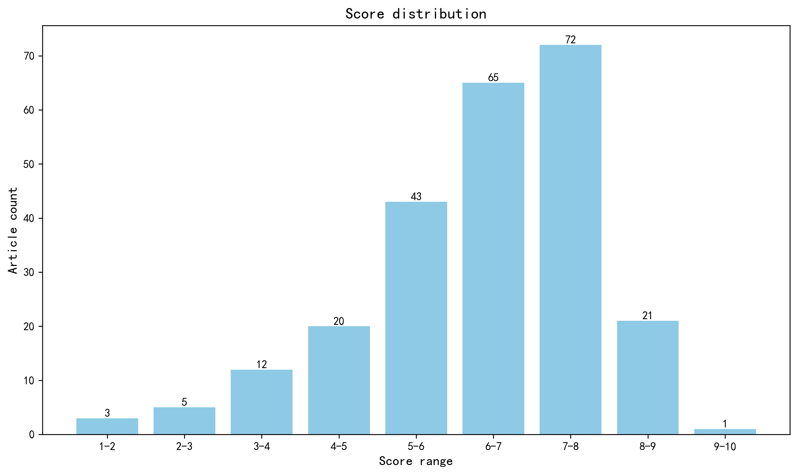

神经科学快讯·第007期 首张人类视交叉上核单细胞图谱揭晓：昼夜节律主时钟的分子蓝图 (2026-04-25)
📊 本周概览
历史摘要修订（2026-10-18）：第 007 期保留历史期号、日期与封面。本期 426 条记录中补回 135 条正式摘要，仅对这些条目使用 DeepSeek 重新评分和分级推荐，其余评估保持原值。修订后拟发布 187 篇，其中 6 篇仍缺充分摘要，已保留资料不足提示。来源、旧评分和推荐变更见 getfiles/abstract_history_2026-10-18.json。
- 头条推荐: 0 篇
- 深度解读: 42 篇
- 简要提及: 145 篇
- 跨界启发: 0 篇
- 已过滤: 239 篇
🌏 环球视野

地区与机构按本期原始发表记录、ROR 及城市地址规则分别统计；跨地区合作可重复计入，不作为完整机构排名。评分分布不含“域外局限”文章。
🌍 国家/地区分布 TOP 10
| 排名 | 国家 | 文章数量 |
|---|---|---|
| 1 | United States | 114 |
| 2 | China | 41 |
| 3 | United Kingdom | 35 |
| 4 | Germany | 25 |
| 5 | Canada | 15 |
| 6 | Switzerland | 13 |
| 7 | France | 13 |
| 8 | Italy | 11 |
| 9 | Australia | 10 |
| 10 | South Korea | 9 |
地区计次合计: 373 次；取得地区信息 204/242 篇
🏢 研究机构 TOP 10
| 排名 | 机构 | 文章数量 |
|---|---|---|
| 1 | Harvard University | 14 |
| 2 | Chinese Academy of Sciences | 9 |
| 3 | Howard Hughes Medical Institute | 8 |
| 4 | University of Pennsylvania | 7 |
| 5 | University of Cambridge | 7 |
| 6 | University of Oxford | 7 |
| 7 | Imperial College London | 7 |
| 8 | Johns Hopkins University | 7 |
| 9 | University of Chinese Academy of Sciences | 6 |
| 10 | National Institutes of Health (United States) | 6 |
📊 评分分布
| 评分区间 | 文章数量 |
|---|---|
| 1-2 | 3 |
| 2-3 | 5 |
| 3-4 | 12 |
| 4-5 | 20 |
| 5-6 | 43 |
| 6-7 | 65 |
| 7-8 | 72 |
| 8-9 | 21 |
| 9-10 | 1 |
总计: 242 篇评分文章
📈 各领域文章分布
| 领域 | 深度解读 | 简要提及 | 总计 |
|---|---|---|---|
| 未知领域 | 0 | 49 | 49 |
| 分子与细胞神经科学 | 11 | 19 | 30 |
| 感觉与运动神经科学 | 6 | 15 | 21 |
| 临床与转化神经科学 | 7 | 13 | 20 |
| 系统与环路神经科学 | 5 | 13 | 18 |
| 计算与理论神经科学 | 2 | 14 | 16 |
| 认知神经科学 | 5 | 10 | 15 |
| 发育神经科学 | 4 | 5 | 9 |
| 方法学 | 1 | 7 | 8 |
| 社会与情感神经科学 | 1 | 0 | 1 |
合计: 深度解读 42 篇，简要提及 145 篇，共 187 篇
📚 精选文献（按领域分类）
临床与转化神经科学
中文标题: 阿尔茨海默病谱系中的默认模式网络失效
作者: Nick Corriveau-Lecavalier, Ellen Dicks, Peter R Martin et al.
单位: Alzheimer center Amsterdam, Department of Neurology, Amsterdam Neuroscience, Programme Neurodegeneration, Amsterdam University Medical Centers, Vrije Universiteit, 1081 HZ Amsterdam, The Netherlands.; Department of Psychiatry and Psychology, Mayo Clinic, Rochester, MN 55905, USA.; Department of Neurology, Mayo Clinic, Rochester, MN 55905, USA. 等
研究地区: United States, The Netherlands
关键词: 默认网络, 阿尔茨海默病, 纵向fMRI, 静息态, 网络动力学, 生物标志物
亮点: 大规模纵向多模态影像揭示默认网络功能失稳态先于淀粉样蛋白沉积，并预测AD谱系关键转化节点
核心优势: 1451人、2763时间点的大规模纵向设计，结合任务态静息fMRI与amyloid PET及Cox生存模型，首次系统刻画DMN亚系统在AD临床-生物学连续谱上的动态失衡及其对淀粉样阳性、MCI和痴呆转化的独立预测价值。
研究局限: 观察性队列难以确立因果方向，DMN亚系统划分与连接指标对扫描参数和运动校正敏感，且生存预测的个体化临床效用尚未在前瞻性独立样本中验证。
目标读者: 阿尔茨海默病与神经影像研究者、系统与计算神经科学家、转化神经病学及生物标志物开发人员
推荐理由: 该研究利用大规模纵向静息态fMRI数据，系统刻画了默认网络（DMN）三个子系统（后部、腹侧、前背侧）在阿尔茨海默病连续谱上的纵向变化。研究发现DMN子系统呈现差异化失连接轨迹，且与分子病理和临床分期相关，为AD的复杂系统模型提供了关键的人体证据。其创新在于将多尺度病理与宏观网络动力学联系起来，并展示了子系统水平生物标志物的转化潜力，对开发系统-informed干预具有重要参考价值。
Collapse of feed-forward inhibition underpins hyperexcitability in GABAA gain-of-function epilepsy.
深度解读 8.3/10中文标题: 前馈抑制崩溃导致GABAA功能获得性癫痫的过度兴奋
作者: Chaseley E McKenzie, Khaing Phyu Aung, Altair Brito Dos Santos et al.
单位: The Florey Institute of Neuroscience and Mental Health, University of Melbourne, Parkville, VIC, Australia, 3010.; Brain and Mind Centre, School of Medical Sciences, Faculty of Medicine and Health, The University of Sydney, Sydney, New South Wales, Australia, 2006.; Department of Neuroscience, Faculty of Health and Medical Sciences, University of Copenhagen, 2200 Copenhagen, Denmark. 等
研究地区: Australia, Denmark, Lithuania
关键词: GABAA受体, 遗传性癫痫, 小鼠模型, 海马, 电生理, 光遗传学
亮点: GABA能增益突变通过中间神经元间突触增强引发前馈抑制的使用依赖性崩溃，从而在皮层网络中产生矛盾性过度兴奋。
核心优势: 将人类GABRB3增益突变嵌入新型小鼠模型，结合多模态电生理、在体ECoG、药理学和计算建模，为矛盾性过度兴奋建立因果链。
研究局限: 核心去抑制机制仅在CA1和皮层L2/3离体切片中验证；胚胎致死限制了对出生后网络发育和癫痫发生的纵向分析；计算模型为机制示意性而非预测性。
目标读者: 癫痫遗传学、突触生理学、皮层网络计算建模及神经药理学研究者
推荐理由: 该研究通过构建携带人类GABRB3 GOF变异的 knock-in 小鼠模型，揭示了GABAA受体功能增强导致癫痫的悖论机制：前馈抑制回路的崩溃而非抑制增强，是网络超兴奋的核心。结合电生理与光遗传学，研究者在环路水平上 bridging 了分子功能获得与网络兴奋性失衡，为DEE的精准治疗提供了新靶点。
中文标题: 18F-flortaucipir PET中年龄和性别差异的神经病理学关联
作者: Emma M Coomans, Ruben Smith, Daria Pawlik et al.
单位: Amsterdam Neuroscience, Neurodegeneration, 1081BT Amsterdam, The Netherlands.; Clinical Memory Research Unit, Department of Clinical Sciences in Malmö, Lund University, 222 42 Lund, Sweden.; Department of Neurology, Alzheimer Center Amsterdam, Amsterdam Neuroscience, Vrije Universiteit Amsterdam, Amsterdam UMC, 1081HZ Amsterdam, The Netherlands. 等
研究地区: The Netherlands, Sweden, United States
关键词: Tau-PET, 阿尔茨海默病, 尸检, 年龄差异, 性别差异, 神经病理
亮点: 三队列PET-尸检证据表明，老年与男性Tau-PET假阴性源于缠结密度降低，而非无病理，提示Tau-PET阈值需按年龄/性别校正。
核心优势: 独立PET-only、autopsy-only及PET-to-autopsy三队列相互印证，PET-to-autopsy间隔仅2.6个月，特异性100%，直接建立Tau-PET SUVr与缠结密度的定量对应。
研究局限: PET-to-autopsy样本量较小（n=85，密度亚组n=63），年龄/性别敏感性差异的置信区间较宽；单中心四级医院尸检队列存在选择偏倚，结论外推至其他tracer和人群需谨慎。
目标读者: 阿尔茨海默病神经影像、神经病理及临床诊断研究者，尤其关注Tau-PET阈值标准化与生物标志物判读的学者
推荐理由: 该研究通过PET-only、autopsy-only和PET-to-autopsy三个独立队列，系统解析了年龄和性别对Tau-PET阳性率的影响，并揭示其神经病理基础：老年和男性个体中Tau-PET阴性可能反映缠结密度低于PET检测阈值，而非无病理。这一发现对AD的临床诊断和抗tau治疗试验入组标准具有重要转化意义，同时凸显了PET阈值依赖的病理异质性。方法学上，多队列验证策略为影像-病理关联研究树立了标杆。
中文标题: 人局灶性皮质发育不良的细胞类型分辨转录组景观
作者: Chuantao Fang, Yi Liu, Xiaodan Zhang et al.
单位: Center for Clinical Research and Translational Medicine, Yangpu Hospital, School of Medicine, Tongji University, Shanghai 200090, China.; Shanghai Tenth People's Hospital, Institute for Infectious Diseases and Vaccine Development, Tongji University School of Medicine, Shanghai 200072, China.; Institute of Pediatrics, Children's Hospital of Fudan University, Fudan University, Shanghai 200032, China. 等
研究地区: China, Spain
关键词: 单核RNA测序, 人类, 局灶性皮质发育不良, 癫痫, 细胞类型, 转录组图谱
亮点: 跨FCD I-III亚型的34对病灶-病灶旁配对单核转录组图谱，将抑制性中间神经元与深层投射神经元的失调及胶质-血管炎症/缺氧程序与组织病理异质性直接挂钩。
核心优势: 大样本（487,286核、34对配对样本）覆盖FCD I-III全谱系，细胞类型分辨的差异表达同时给出共享与亚型特异性改变，并提出ZNF254、DRG1、ABHD17A、ATF4等组织可检测候选标记。
研究局限: 纯描述性图谱缺乏功能验证与因果实验（如标记基因的致病机制、电生理或动物模型），病灶旁组织作为对照仍可能受癫痫网络影响，亚型样本量不均衡且临床变量（用药、年龄、切除部位）未充分建模。
目标读者: 癫痫与皮层发育畸形研究者、单细胞组学与计算生物学家、神经病理学家及转化神经科学家
推荐理由: 该研究构建了迄今规模最大的人类局灶性皮质发育不良（FCD）单核转录组图谱，覆盖FCD I-III亚型及配对病灶周围皮层，揭示了抑制性中间神经元等细胞类型的共享与亚型特异性转录改变。这项工作将FCD的临床异质性映射到细胞和分子层面，为理解耐药性癫痫的机制提供了关键资源，并有望指导亚型分类和靶向治疗开发。
中文标题: 重定位右美托咪定：早期药理学低温增强神经保护并改善脊髓损伤后运动与膀胱功能恢复
作者: Aytak Khabbaz, Lilesh Kumar Pradhan, Anne Elizabeth Gowan et al.
单位: Spinal Cord and Brain Injury Research Group, Stark Neuroscience Research Institute, Indianapolis, Indiana 46202.; Department of Neurological Surgery, Indiana University School of Medicine, Indianapolis, Indiana 46202.; Department of Microbiology and Immunology, Indiana University School of Medicine, Indianapolis, Indiana 46202. 等
研究地区: United States
关键词: 脊髓损伤, 右美托咪定, 治疗性低温, 神经保护, 运动功能, 膀胱功能
亮点: FDA已批准药物右美托咪定单次腹腔注射即可在小鼠脊髓损伤后快速诱发稳定治疗性低体温，兼具内在神经保护，无需设备即改善运动与膀胱功能，是即刻可转化的急性SCI双效策略。
核心优势: 多模态证据链完整：从核心体温与生命体征监测、运动与膀胱功能行为学，到组织学、血清素能环路与TNF/IL-10细胞因子谱及ERK/RIPK1信号机制，并设置表面冷却、防低温加热和ERK抑制等多重对照，论证较为严密。
研究局限: 新意更多在于药物重定位与组合应用，而非全新靶点或范式；证据限于成年小鼠单一胸段挫伤模型和单一剂量，缺乏剂量-反应、长期功能结局、大型动物验证及临床前盲法随机化的完整报告；药理低温与Dex固有神经保护各自贡献难以完全解耦。
目标读者: 脊髓损伤与神经创伤研究者、神经药理学与转化医学研究者、系统与计算神经生物学家及临床前药物重定位团队
推荐理由: 该研究创新性地将FDA批准的α2-激动剂右美托咪定重新定位为早期药理学低温诱导剂，在脊髓损伤后1小时即实现神经保护，显著改善运动与膀胱功能恢复。其巧妙之处在于利用右美托咪定的抗寒战特性与内在神经保护作用，克服了传统物理降温设备依赖、速度慢的转化瓶颈，为脊髓损伤急性期治疗提供了可快速转化的药物干预策略。研究结合行为学、生理学与组织学多维度验证，为临床转化奠定了坚实基础。
中文标题: 脑脊液阿尔茨海默病生物标志物的GWAS荟萃分析揭示调控脂质、脑体积和自噬的基因座
作者: Jigyasha Timsina, Chenyang Jiang, Daniel L McCartney et al.
单位: NeuroGenomics and Informatics Center, Washington University School of Medicine, St. Louis, MO, USA.; Alzheimer Center Amsterdam, Neurology, Vrije Universiteit Amsterdam, Amsterdam UMC Location VUmc, Amsterdam, The Netherlands.; Department of Psychiatry, Washington University School of Medicine, St. Louis, MO, USA. 等
研究地区: United States, The Netherlands, United Kingdom, Germany, Argentina, Sweden, Spain, Belgium, France, Finland, Portugal, Greece, Poland, Austria, Australia, Canada
关键词: GWAS, 阿尔茨海默病, 脑脊液生物标志物, 脂质代谢, 自噬, 脑体积
亮点: 迄今规模最大的脑脊液AD标志物GWAS荟萃分析，新发现8个位点并将脂质代谢、自噬与脑体积调控纳入AD遗传架构。
核心优势: 18,948人欧洲血统样本的GWAS荟萃分析，鉴定12个全基因组显著位点（8个新位点），并在独立数据中验证与AD风险、疾病进展及脑淀粉样变的关联，样本量与多表型交叉验证均达到顶刊要求。
研究局限: 仅纳入欧洲血统人群，跨族群普适性受限；GWAS位点到因果基因的推断仍以连锁不平衡和功能注释为主，缺乏实验功能验证；APOE的强效应可能部分掩盖其他位点的独立信号。
目标读者: 阿尔茨海默病遗传学、神经退行性疾病生物标志物、脂质代谢与自噬研究及计算系统生物学者
推荐理由: 该研究对18,948名欧洲裔个体的脑脊液Aβ42、总tau和p-tau181进行了GWAS荟萃分析，鉴定出12个全基因组显著位点（8个为新位点），并揭示了这些位点与脂质代谢、脑体积和自噬的关联。研究不仅复现了APOE、CR1等已知位点，还发现了BIN1与Aβ42、GNA12和MS4A6A与tau等新关联，为阿尔茨海默病的遗传架构提供了新见解。这些发现强调了生物标志物在解析疾病机制中的价值，并提示脂质和自噬通路可能成为新的治疗靶点，对转化神经科学和计算遗传学具有重要推动意义。
Machine learning model based on plasma proteomics for the identification of Parkinson's disease.
深度解读 7.4/10中文标题: 基于血浆蛋白质组学的帕金森病识别机器学习模型
作者: Boluwatife Adewale, Ruth Chia, Ruin Moaddel et al.
单位: Neuromuscular Diseases Research Section, National Institute on Aging, Bethesda, MD 20892, USA.; Neurodegenerative Diseases Research Section, National Institute of Neurological Disorders and Stroke, Bethesda, MD 20892, USA.; Laboratory of Clinical Investigation, National Institute on Aging, Baltimore, MD 21224, USA. 等
研究地区: United States, Italy, Taiwan
关键词: 血浆蛋白质组学, 机器学习, 帕金森病, 生物标志物, Olink, 人类
亮点: 基于Olink血浆蛋白组学的11蛋白堆叠集成模型在多队列中实现帕金森病高特异度识别
核心优势: 在三个独立外部队列（UK Biobank、PDBP、PPMI）中系统验证，并用SHAP与网络分析连接预测性能与炎症、ErbB、TCR及脂代谢通路
研究局限: 病例对照设计难以排除反向因果与病程/用药混杂，UK Biobank外部验证样本仅43例且阳性率与临床转化阈值未充分报告，缺乏前瞻性诊断效用与成本效益评估
目标读者: 帕金森病与神经退行性疾病生物标志物研究者、临床神经病学家、蛋白质组学与机器学习转化医学团队
推荐理由: 该研究利用Olink高通量血浆蛋白质组学与机器学习，在698名参与者（含帕金森病、健康对照及其他神经系统疾病）中构建诊断模型，旨在区分帕金森病与其它神经疾病。其价值在于展示了血浆蛋白标志物组合在真实临床鉴别诊断场景中的潜力，并为神经退行性疾病的血液诊断提供了可复用的分析框架。
中文标题: 局灶性白质病变驱动灰质炎症和突触丢失
作者: Omar de Faria, Stavros Vagionitis, Andrea Lopez-Lopez et al.
单位: UCL Great Ormond Street Institute of Child Health, University College London, London, UK.; Cambridge Centre for Myelin Repair, Cambridge Stem Cell Institute & Department of Veterinary Medicine, University of Cambridge, Cambridge, UK.; Research Center for Molecular Medicine and Chronic Diseases (CIMUS), University of Santiago de Compostela, CIBERNED, IDIS, Santiago de Compostela, Spain. 等
研究地区: United Kingdom, Spain, Sweden, Iceland, United States
摘要: 首次在因果层面证明局灶白质病灶通过微胶质细胞介导的再生可塑性直接驱动灰质突触丢失与炎症，颠覆了白质病变仅是继发性旁观者的传统观点
优势: 巧妙利用临床相关大鼠模型结合多模态因果操控（阻止/促进髓鞘再生），在单一回路中完整揭示了白质-灰质耦联的机制链条 局限: 主要基于大鼠和小鼠模型，缺乏人类病理的直接验证；灰质微胶质细胞保护性角色的结论在其他神经退行性疾病中的普适性尚待确认 受众: 研究髓鞘疾病、神经炎症、突触可塑性的神经科学家，以及关注系统生物学和再生医学的计算生物学家
中文标题: COVID-19大流行对日本吉兰-巴雷综合征发病率和临床特征的影响
作者: Tomoki Suichi, Sonoko Misawa, Shoko Ukita et al.
单位: Department of Neurology, Graduate School of Medicine, Chiba University, Chiba 260-8670, Japan.; Biostatistics Unit, Clinical and Translational Research Centre, Keio University Hospital, Tokyo 160-8582, Japan.; Department of Neurology and Neurological Science, Institute of Science Tokyo, Tokyo 113-8519, Japan. 等
研究地区: Japan
摘要: 日本全国性调查显示COVID-19大流行期间吉兰-巴雷综合征发病率下降9%，且临床表型向无前驱感染、脱髓鞘亚型偏移
优势: 基于全国两阶段问卷的罕见病流行病学监测，样本量大（2623例详细临床资料），前后对照设计清晰，并整合了Campylobacter监测数据形成机制假说 局限: 观察性设计无法确立因果；发病率估计依赖问卷回收率与诊断异质性；『无症状COVID相关脱髓鞘GBS』假说缺乏病毒学/免疫学直接证据；仅覆盖大流行早期，长期趋势不明 受众: 神经免疫学、周围神经病、流行病学与公共卫生研究者
中文标题: 体内产生的CAR-中性粒细胞治疗胶质瘤
作者: Yun Chang, Kunming Shao, Huiyang Li et al.
单位: Purdue University Institute for Cancer Research, West Lafayette, IN, USA. yun-bme.chang@polyu.edu.hk.; Department of Biological Sciences, Purdue University, West Lafayette, IN, USA. yun-bme.chang@polyu.edu.hk.; Davidson School of Chemical Engineering, Purdue University, West Lafayette, IN, USA. yun-bme.chang@polyu.edu.hk. 等
研究地区: United States, Hong Kong, United Kingdom
摘要: 首次实现体内直接编程中性粒细胞为CAR-中性粒细胞，为胶质瘤免疫治疗开辟可编程中性粒细胞平台。
优势: 方法学创新突出：结合工程化细胞外囊泡/脂质纳米颗粒递送修饰RNA与microRNA响应开关，实现中性粒细胞特异性蛋白翻译，技术原创性高且具有临床转化潜力。 局限: 突破性有限：CAR-中性粒细胞概念并非首次提出（已有体外CAR-N研究），体内编程虽新但未颠覆免疫治疗范式；神经科学领域贡献度间接（胶质瘤模型为应用场景，未深入神经免疫互作机制）。 受众: 肿瘤免疫治疗研究者、基因编辑与RNA治疗技术开发人员、胶质瘤转化医学团队。
中文标题: 深度药物发现平台识别出能够穿越血脑屏障的自噬增强剂用于阿尔茨海默病治疗
作者: Yu Dong, Xianglu Xiao, Xu-Xu Zhuang et al.
单位: Bioengineering Department and Imperial-X, Imperial College London, London, UK.; Mindrank AI Ltd, Hangzhou, China.; State Key Laboratory of Mechanism and Quality of Chinese Medicine, Institute of Chinese Medical Sciences, University of Macau, Macau SAR, China. 等
研究地区: China, United Kingdom, Norway
摘要: 首个结合ADMET与BBB渗透性预测的机制感知AI平台，实现mTOR非依赖的自噬增强剂从头发现与跨物种验证
优势: 整合ADMET和BBB渗透性预测的AI筛选平台，在概念上超越常规虚拟筛选，且明确聚焦于mTOR非依赖的自噬调节，具有一定的机制新颖性；开放源代码和模块化设计提升了平台的可推广性和可复现性。 局限: 仅有线虫和小鼠模型验证，缺乏非人灵长类或人体临床数据支持，跨物种转化潜力存疑；未展示与现有mTOR抑制剂或已知自噬增强剂的系统性头对头比较；AI模型的黑箱可解释性未充分讨论。 受众: 从事神经退行性疾病药物发现、计算系统生物学、自噬机制研究以及AI辅助药物设计的研究人员
中文标题: 脑能量景观的时空不对称揭示与抑郁严重程度相关的系统困境
作者: Ülgen Kilic, Jenna Jubeir, Priti Balchandani et al.
摘要: 揭示抑郁症中大脑状态间的能量不对称性如何导致系统困陷与认知情感僵化
优势: 将能量景观不对称性与白质结构功能耦合效率相结合，为抑郁症的动力学机制提供了新颖的物理框架和量化指标 局限: 样本量有限且缺乏独立验证数据集；未对能量景观模型的生物学可解释性（如代谢底物）进行直接验证；部分效应量较小 受众: 从事计算精神病学、大脑动力学、功能连接组学以及情绪障碍机制研究的神经科学家与系统生物学家
中文标题: 工程化BCG选择性触发肿瘤相关巨噬细胞的训练免疫并使胶质母细胞瘤对放疗敏感
作者: Ke Ren, Ziyang Yuan, Lei Lei et al.
单位: Department of Clinical Microbiology, School of Laboratory Medicine, Chengdu Medical College, Chengdu, China.; Department of Pharmaceutical Engineering, School of Engineering, China Pharmaceutical University, Nanjing, China.; Department of Clinical Microbiology, School of Laboratory Medicine, Chengdu Medical College, Chengdu, China. renke@cmc.edu.cn. 等
研究地区: China
摘要: 利用工程化BCG诱导肿瘤相关巨噬细胞训练免疫，增敏胶质母细胞瘤放疗
优势: 将训练免疫（trained immunity）概念引入胶质母细胞瘤放疗增敏，并采用巨噬细胞膜伪装+生物正交化学的递送策略，跨越血脑屏障且具固有过氧化氢酶活性缓解缺氧。 局限: 训练免疫在肿瘤微环境中的持久性及系统性脱靶效应未充分探讨；动物模型短随访期（通常为30天），缺乏长期生存获益和肿瘤复发分析；免疫检查点阻断与组合疗法的协同机制深度不够。 受众: 神经肿瘤学、肿瘤免疫学、放射生物学及纳米医学方向的研究人员，尤其关注训练免疫和TAM重编程的学者。
Habitual coffee intake shapes the gut microbiome and modifies host physiology and cognition
简要提及 5.2/10中文标题: 习惯性咖啡摄入塑造肠道微生物组并改变宿主生理和认知
作者: Serena Boscaini, Thomaz F S Bastiaanssen, Gerard M Moloney et al.
单位: APC Microbiome Ireland, University College Cork, Cork, Ireland.; Department of Anatomy and Neuroscience, University College Cork, Cork, Ireland.; Department of Food and Drug, University of Parma, Parma, Italy. 等
研究地区: Ireland, Italy
摘要: 咖啡通过肠道微生物组影响宿主认知与情绪，且部分效应独立于咖啡因
优势: 首次在人体中系统揭示咖啡摄入对肠-脑轴的多维度影响（微生物组、代谢物、认知行为），并区分了咖啡因依赖与非依赖路径 局限: 观察性设计为主，因果关系证据不足；样本量、随访周期等关键实验细节未提供；部分效应（如冲动性、记忆）效应量较小且缺乏独立验证 受众: 肠道微生物-脑轴研究者、营养神经科学家、计算系统生物学家
中文标题: 白蛋白联合血管内治疗急性缺血性卒中患者的疗效与安全性：一项随机临床试验
作者: Yuanyuan Liu, Xiao Dong, Wanwan Zhang et al.
单位: Center for Evidence Based Medicine, Xuanwu Hospital, Capital Medical University, Beijing, China.; Department of Neurology, Suzhou Municipal Hospital, Anhui Province, China.; Department of Neurology, Xuanwu Hospital of Capital Medical University, Beijing, China. 等
研究地区: China
摘要: 白蛋白联合血管内治疗可显著缩小急性缺血性卒中患者的梗死体积增长，安全性良好
优势: 首个随机双盲多中心临床试验验证了白蛋白在急性卒中血管内治疗中的辅助疗效，样本量虽小但设计规范 局限: 样本量极小（仅134例），未达到大型III期试验标准；主要终点（梗死体积变化）为影像学替代指标，而非临床功能结局（如mRS）；效应量中位数差值-8.63mL临床意义有限 受众: 脑血管病临床研究者、卒中神经科医生、神经介入专家
Cause, consequence, or synergy: the role of T-cell infiltration across neurodegenerative diseases.
简要提及 4.1/10中文标题: 因果、后果还是协同：T细胞浸润在神经退行性疾病中的作用
输入资料不足：原始摘要未取得，当前评估仅供初筛，推送前需核对原文。
作者: Patrick W Cullinane, Hemanth Nelvagal, Cyrus Wong et al.
单位: Department of Clinical and Movement Neurosciences, UCL Queen Square Institute of Neurology, London WC1N 3BG, UK.; Reta Lila Weston Institute of Neurological Studies, UCL Queen Square Institute of Neurology, London WC1N 1PJ, UK.; Queen Square Brain Bank for Neurological Disorders, UCL Queen Square Institute of Neurology, London WC1N 1PJ, UK. 等
研究地区: United Kingdom
摘要: 系统综述T细胞浸润在神经退行性疾病中的因果角色，提出synergy假说
优势: 整合跨疾病T细胞免疫病理学，提出超越传统cause-consequence二元论的协同作用模型 局限: 为综述性论文，缺乏原始实验数据或创新性方法；结论主要基于现有文献整合，证据强度受限于二级分析 受众: 神经免疫学、神经退行性疾病研究者，以及对免疫-神经系统交互感兴趣的转化科学家
中文标题: 舌部运动对舌下运动神经元退化啮齿动物模型中舌下轴存活、结构和输出的影响
作者: Amy N Keilholz, Stephanie Lopez, Minasadat Attari et al.
单位: Department of Pathobiology and Integrative Biomedical Sciences, College of Veterinary Medicine, University of Missouri, Columbia, Missouri, United States.; Palmer College of Chiropractic, Port Orange, Florida, United States.; Department of Electrical Engineering and Computer Science, University of Missouri, Columbia, Missouri, United States. 等
研究地区: United States
摘要: 舌运动训练可部分改善退行性运动神经元损伤后的神经输出功能，但对神经元存活和结构无保护作用
优势: 在经典CTB-SAP颅神经变性模型上整合了组织学、超微结构和在体电生理的多模态评估，实验设计系统 局限: 缺乏行为学验证（如吞咽或呼吸功能直接测量），且仅雄性大鼠单性别、单一时程的训练范式限制了普适性和转化意义 受众: 运动神经元病与睡眠呼吸障碍领域的转化神经科学家、康复神经生物学家
Triggered minds: key considerations for symptom provocation research in anxiety-related disorders
简要提及 3.6/10中文标题: 触发的心灵：焦虑相关障碍症状诱发研究的关键考量
作者: Xena Serifova, Bart Boets, Laura Luyten
单位: Center for Developmental Psychiatry, Faculty of Medicine, KU Leuven, Leuven, Belgium; University Center for Obsessive-Compulsive Disorders, UPC KU Leuven, Leuven, Belgium. Electronic address: xena.serifova@kuleuven.be.; Leuven Brain Institute, KU Leuven, Leuven, Belgium 等
研究地区: Belgium
摘要: 为焦虑相关障碍的症状诱发研究提供系统性的方法论指导与伦理框架
优势: 全面整合了症状诱发技术的设计、伦理、实验者培训及数据有效性等关键考量，为领域内实验标准化提供了实用指南 局限: 属于综述性质，缺乏原始实验数据与新发现，未提出颠覆性范式或突破性神经机制，证据强度和突破性不足 受众: 焦虑障碍、OCD及PTSD领域的研究者，特别是计划开展症状诱发实验的临床与转化神经科学家
中文标题: 回复黄和董：回路见解揭示了外周电针治疗癫痫的转化潜力
输入资料不足：原始摘要未取得，当前评估仅供初筛，推送前需核对原文。
作者: Yu Wang, Qingyang Zhang, Yi Wang et al.
单位: Zhejiang Collaborative Innovation Center for the Brain Diseases with Integrative Medicine, Zhejiang Key Laboratory of Neuropsychopharmacology, School of Pharmaceutical Sciences, The First Affiliated Hospital, Zhejiang Chinese Medical University, Hangzhou 310053, China.
研究地区: China
摘要: 对一项外围电针抗癫痫机制研究的回应，强调回路视角的转化潜力。
优势: 聚焦癫痫与电针的回路层面转化，主题具有临床相关性。 局限: 作为回复性文章，缺乏原始实验数据和可验证的核心创新点；摘要未提供任何具体机制、数据或技术细节，无法评估证据强度和原创性。 受众: 从事针灸神经机制或癫痫回路研究的临床神经科学家。
中文标题: 从优美的回路到可行的疗法：解决针灸神经调控中的转化鸿沟
输入资料不足：原始摘要未取得，当前评估仅供初筛，推送前需核对原文。
作者: Dong'e Huang, Junqing Dong
单位: Department of Physiotherapy, The 92435th Hospital of the Chinese People's Liberation Army, Ningde 352103, Fujian, China.; Department of Traditional Chinese Medicine, The 900th Hospital of the Joint Logistics Support Force, Fuzhou 350004, Fujian, China.
研究地区: China
摘要: 一篇针对针灸神经调控转化瓶颈的综述或观点文章，缺乏原始数据和技术革新
优势: 提出了针灸从基础电路研究向临床疗法转化中的关键挑战，概念清晰 局限: 未提供新的实验证据或创新方法，仅作现成文献的梳理和呼吁，缺乏突破性数据支撑 受众: 专注于针灸机制与转化研究的临床神经科学家和替代医学研究者
分子与细胞神经科学
中文标题: 小鼠Adgrg1/Gpr56的自剪切依赖与非依赖功能
作者: Frank E Kwarcinski, Tyler F Bernadyn, James P Teuber et al.
单位: Division of Cardiovascular Medicine, Department of Internal Medicine, University of Michigan, Ann Arbor, MI 48109.; Unit for Laboratory Medicine Pathology Core, University of Michigan, Ann Arbor, MI 48109.; Department of Pharmacology, University of Michigan School of Medicine, Ann Arbor, MI 48109.
研究地区: United States
关键词: Gpr56, 黏附类GPCR, 自剪切, 小鼠, RNA测序, 神经发育
亮点: 首个小鼠Gpr56切割缺陷敲入模型系统性拆解AGPCR自切割依赖与非依赖信号在体内各表型中的分工
核心优势: H381S切割缺陷敲入小鼠结合五个独立Gpr56缺失表型的平行解析，清晰证明缓激肽样四联肽激动剂信号对 cerebellar lobule 形成、神经元迁移和雄性生育力不可或缺，而对心肌稳态、血小板止血和轴突髓鞘化非必需，直接支持AGPCR多模式激活假说
研究局限: 机制层面仍以遗传学必要性证据为主，缺少对NTF-配体（胶原、TG2）相互作用的定量生化或结构验证，且仅覆盖五个选定表型，未能系统解析各组织特异性配体与信号模式的对应关系
目标读者: GPCR信号转导、神经发育与皮层畸形、粘附类GPCR及小鼠遗传学研究者
推荐理由: 该研究系统解析了黏附类GPCR Adgrg1/Gpr56的自剪切依赖性及非依赖性功能。通过条件性敲除和RNA测序，发现Gpr56的NTF和CTF片段具有独立于自剪切的功能，并揭示其在少突胶质细胞前体细胞迁移和髓鞘形成中的新作用。这一发现挑战了AGPCR经典信号模型，为理解神经发育障碍（如皮质畸形）的分子机制提供了新视角。
中文标题: 青少年暴饮后5-羟色胺能神经元表型的表观遗传抑制可通过运动和甘草酸抑制促炎信号得以恢复
作者: Sagan T de Castro, Anna G Petrouski, Juan E Castillo et al.
单位: Departments of Pharmacology, University of North Carolina, Chapel Hill, North Carolina 27599.; Psychiatry, University of North Carolina, Chapel Hill, North Carolina 27599.; Bowles Center for Alcohol Studies, University of North Carolina, Chapel Hill, North Carolina 27599. 等
研究地区: United States
关键词: 青春期饮酒, 五羟色胺, 神经免疫, 表观遗传, 运动, 甘草酸
亮点: 青春期暴饮导致的血清素能神经元表观遗传抑制是可逆的神经免疫机制，运动或甘草酸可恢复表型并挽救社交缺陷。
核心优势: 跨物种多模态证据链完整：大鼠AIE模型与人类AUD死后DRN组织相互印证，结合表观遗传、神经免疫、行为学及两种独立干预（运动、HMGB1拮抗剂），有力支持可逆性机制而非神经元丢失。
研究局限: 机制链条仍以相关性为主，缺少Tph2启动子表观遗传修饰与血清素能表型恢复之间的直接因果操控（如CRISPR表观编辑或条件性敲除）；运动干预的多靶点效应难以归因于单一通路；人类数据为相关性且样本细节未在摘要中体现。
目标读者: 成瘾神经生物学、神经免疫、表观遗传学、血清素系统及转化精神病学研究者和临床科学家
推荐理由: 该研究揭示青春期间歇性酒精暴露通过神经免疫激活（HMGB1-TLR4-pNFκB通路）表观遗传抑制中缝背核五羟色胺能表型，并在人类酒精使用障碍尸检脑组织中验证。创新性发现运动与甘草酸通过抑制促炎信号恢复五羟色胺标记，为酒精相关情绪社交障碍提供了可转化的非药物干预策略，连接了分子表观遗传、神经免疫与临床转化。
Molecular mechanisms of native ligand selectivity in catecholamine G protein-coupled receptors
深度解读 7.9/10中文标题: 儿茶酚胺G蛋白偶联受体天然配体选择性的分子机制
作者: Nour Aldin Kahlous, Maiju K Rinne, Xin Zhang et al.
单位: Department of Medical Cell Biology, Uppsala University, Uppsala, Sweden.; Science for Life Laboratory, Department of Cell and Molecular Biology, Uppsala University, Uppsala, Sweden.; Department of Pharmacology, Medicum, University of Helsinki, Helsinki, Finland. 等
研究地区: Sweden, Finland, China, Germany
关键词: GPCR, 配体选择性, 分子动力学, 进化分析, 结构生物学, 肾上腺素受体
亮点: 仅更换少量配体口袋及远端残基即可互换肾上腺素能与多巴胺能受体的天然配体选择性，并揭示口袋外区域对选择性的协同调控。
核心优势: 以β2-肾上腺素受体与D1多巴胺受体为原型，通过4/7个位点的残基交换实现药理学特征互换，并结合冷冻电镜结构与计算模型提供多模态机制证据。
研究局限: 机制主要基于两个受体亚家族及有限突变组合，天然配体选择性的体内生理后果和跨受体家族的可推广性尚未验证；远端残基调控选择性的因果链仍需更系统的自由能或动力学分析。
目标读者: GPCR结构生物学、药理学与药物设计、神经递质信号转导及蛋白质工程研究者
推荐理由: 该研究结合结构与计算手段，揭示了β2-肾上腺素受体与D1多巴胺受体对天然配体选择性的分子机制，并引入进化视角。工作不仅阐明了高度相似的正构位点如何实现精确识别，也为理解GPCR信号特异性及靶向药物设计提供了新框架。对神经科学中 catecholamine 系统功能调控和神经精神疾病治疗具有重要启示。
中文标题: 绘制人源胶质祖细胞从体外胶质发生到移植入低髓鞘化小鼠脑内成熟过程的图谱
作者: John N Mariani, Steven J Schanz, Benjamin Mansky et al.
单位: Center for Translational Neuromedicine, University of Copenhagen Faculty of Health, Copenhagen, Denmark.; Center for Translational Neuromedicine, University of Rochester Medical Center, Rochester, NY, USA.; Center for Translational Neuromedicine, University of Rochester Medical Center, Rochester, NY, USA. John_mariani@urmc.rochester.edu. 等
研究地区: United States, Denmark
关键词: 人类, 少突胶质细胞, 单细胞测序, scATAC-seq, 染色质可及性, 髓鞘再生
亮点: 多组学单细胞追踪揭示人类胶质祖细胞从体外生成到体内成熟的环境依赖性分化轨迹
核心优势: 整合scRNA-seq、scATAC-seq、CUT&TAG与空间转录组，系统刻画hGPC体外四个转录亚群及其移植后由宿主环境驱动的基因调控网络激活与星形/少突胶质分化。
研究局限: 主要基于shiverer脱髓鞘小鼠异种移植模型，跨物种环境差异及免疫缺陷背景可能影响人类胶质成熟程序的推断，且体外亚群与体内命运的因果对应仍以关联性证据为主。
目标读者: 胶质细胞生物学、神经发育与再生医学、干细胞移植及计算/系统神经科学研究者
推荐理由: 该研究以单细胞多组学（scRNA-seq、scATAC-seq、CUT&Tag）追踪人胶质祖细胞（hGPCs）从体外生成到移植入低髓鞘化小鼠脑内的成熟过程，揭示了体外hGPC池由四个转录与染色质状态各异的亚群组成，并刻画了移植后这些亚群在体内分化与成熟中的命运转变。这项工作不仅弥补了啮齿类模型与体外研究难以反映人胶质发育分子轨迹的不足，也为理解人少突胶质谱系发育、髓鞘再生及细胞治疗产品的质量控制提供了关键分子图谱和潜在调控节点。
中文标题: MeCP2基因剂量依赖的神经发育限制性缺陷源于细胞命运决定双价基因的异常激活
作者: Mirko Luoni, Michal Kubacki, Serena Gea Giannelli et al.
单位: Stem Cell and Neurogenesis Unit, Division of Neuroscience, IRCCS San Raffaele Scientific Institute, Milan, Italy.; Stem Cell and Neurogenesis Unit, Division of Neuroscience, IRCCS San Raffaele Scientific Institute, Milan, Italy. luoni.mirko@hsr.it.; Institute of Neuroscience, National Research Council (CNR), Milan, Italy. luoni.mirko@hsr.it. 等
研究地区: Italy
关键词: MeCP2, 神经发育, 基因剂量, 神经前体细胞, Rett综合征, MECP2重复综合征
亮点: MeCP2过表达效应具有细胞类型特异性，神经前体细胞而非成熟神经元对剂量上调敏感，且该效应由SWI/SNF复合物介导的发育性二价基因异常激活驱动。
核心优势: 在鼠和人两种体系中系统比较了MeCP2过表达在神经前体细胞与成熟神经元中的差异效应，并结合内源/外源蛋白的CpG岛结合与降解机制，为MECP2重复综合征与Rett基因治疗剂量风险提供了机制性解释。
研究局限: 机制链条主要基于体外/离体模型和相关性结合证据，SWI/SNF介导激活的直接因果性（如体内扰动与行为挽救）仍显不足，且对成熟脑基因治疗长期安全性的推论需在体验证。
目标读者: 神经发育生物学、表观遗传学、基因治疗与Rett/MeCP2重复综合征研究者
推荐理由: 该研究揭示了MeCP2基因剂量依赖性的神经发育缺陷来源于神经前体细胞中二价基因的异常激活，而非成熟神经元。通过小鼠和人类模型，作者证明MeCP2过表达在神经前体细胞中引发转录改变，而在神经元中影响甚微。这一发现不仅解释了MECP2重复综合征的胚胎期起源，也为Rett综合征基因治疗中MeCP2递送时机提供了关键理论依据，强调了发育窗口期在表观遗传调控中的重要性。
中文标题: HCN1是神经元中主要的HCN起搏通道
作者: Uta Enke, Andrea Schweinitz, Debanjan Tewari et al.
单位: Institut für Physiologie I, Universitätsklinikum Jena, Friedrich-Schiller-Universität Jena, Jena, Germany.; Institut für Physiologie II, Universitätsklinikum Jena, Friedrich-Schiller-Universität Jena, Jena, Germany.; Institut für Physiologie II, Universitätsklinikum Jena, Friedrich-Schiller-Universität Jena, Jena, Germany. Klaus.Benndorf@med.uni-jena.de.
研究地区: Germany
关键词: HCN1, 起搏通道, 单通道记录, 动态钳, 飞西门控, 小鼠
亮点: 单通道飞秒级动态动作电位钳揭示HCN1作为神经元起搏触发通道的关键角色
核心优势: 在飞秒级分辨率下对单个HCN1/2/4通道进行时间分辨的动态动作电位钳记录，直接比较三种亚型的门控动力学，技术原创性和数据精度突出。
研究局限: 结论主要基于异源表达的mHCN通道和模拟推断，缺少原代起搏神经元的在体验证与行为/环路水平的因果检验。
目标读者: 离子通道生物物理学、起搏神经元与节律生物学、计算神经科学及系统生理学研究者
推荐理由: 该研究采用飞西门控分辨率的动态动作电位钳技术，首次在时间分辨水平上直接比较了HCN1、HCN2和HCN4单通道在起搏去极化过程中的运作。发现尽管所有通道均产生相关开放概率，但只有mHCN1能高效支持起搏去极化，表明HCN1是神经元中的主要起搏通道。这一发现解决了长期争议，并为理解节律性神经活动的分子基础提供了关键证据。
中文标题: 部分占据异源四聚体结构揭示红藻氨酸受体激活与脱敏机制
作者: Nandish K Khanra, Alexa Strauss, Laura Moreno Wasielewski et al.
单位: Department of Biochemistry and Biophysics, Weill Cornell Medicine, New York, NY, USA.; Tri-Institutional Program in Chemical Biology, New York, NY, USA.; Department of Physiology and Biophysics, Weill Cornell Medicine, New York, NY, USA. 等
研究地区: United States, Germany
关键词: 海人藻酸受体, 冷冻电镜, 部分配体占据, 受体激活, 脱敏, 门控机制
亮点: 部分配体占据的GluK2/GluK5异源四聚体冷冻电镜结构，揭示iGluR逐步激活与脱敏的界面重塑模型
核心优势: 利用GluK5选择性激动剂（5-iodowillardiine与AMPA）实现真正的部分占据状态，捕获高分辨率预激活构象，并系统比较完整、部分及完全破裂的LBD界面，提出逐步激活/脱敏的修正模型
研究局限: 仅基于GluK2/GluK5异源四聚体且主要为预激活态，缺乏功能电生理与门控动力学的直接整合验证，模型向其他iGluR亚型的普适性有待检验
目标读者: 离子型谷氨酸受体结构生物学、突触传递机制及计算系统神经科学研究者
推荐理由: 该研究利用冷冻电镜解析了GluK2/GluK5异源四聚体在海人藻酸受体部分配体占据条件下的结构，揭示了部分占据如何驱动受体激活与脱敏的构象变化。这项工作不仅填补了部分占据状态的结构空白，也为理解突触传递中受体动态调控提供了关键机制见解。方法上结合了5-碘代Willardiine和AMPA两种部分激动剂，为后续门控研究树立了范例。
中文标题: 内皮Adgrl2表达和可变剪接控制脑血管系统
作者: Alexander King, Catherine Garcia, Crisylle Blanton et al.
单位: Neuroscience Graduate Program, University of California - Riverside, Riverside, California 92521.; Laboratory of Neural Connectivity, Brain Research Institute, Faculties of Medicine and Science, University of Zürich, Zurich, Switzerland.; Department of Molecular, Cell, and Systems Biology, University of California - Riverside, Riverside, California 92521. 等
研究地区: United States, Switzerland
关键词: Adgrl2, 内皮细胞, 选择性剪接, 血脑屏障, 小鼠, 脑血管
亮点: 内皮Adgrl2通过细胞类型特异性可变剪接切换功能，同时调控脑血管完整性与神经-血管识别，揭示神经发育与血管化耦合的新分子机制。
核心优势: 利用单细胞转录组数据发现Adgrl2在神经元与内皮细胞中产生不同剪接异构体，并通过内皮细胞中强制表达神经元异构体的功能获得实验，直接证明异构体特异性功能切换可双向改变血脑屏障完整性和脑室稳态。
研究局限: 机制研究主要依赖小鼠遗传操作和转录组关联，缺乏对剪接调控因子及Adgrl2下游信号通路的直接解析；功能获得导致的脑积水表型与临床相关性尚需进一步验证。
目标读者: 神经血管生物学、血脑屏障与脑脊液稳态、可变剪接与GPCR信号研究者
推荐理由: 该研究揭示黏附GPCR Adgrl2在脑内皮细胞中通过选择性剪接调控脑血管完整性，将神经发育中的血管化与突触组装过程联系起来。内皮特异性敲除导致血脑屏障受损，表明Adgrl2是脑血管稳态的关键分子。工作为神经血管单元提供了新的分子视角，并提示选择性剪接在脑血管生理中的重要性，对理解神经发育与血管生物学交叉领域具有推动意义。
中文标题: Müller胶质细胞-小胶质细胞交互重编程Müller胶质细胞转录组以促进视网膜再生中的细胞分裂相关过程
作者: Soumitra Mitra, Sulochana Devi, Mi-Sun Lee et al.
单位: Department of Ophthalmology, University of Pittsburgh, Pittsburgh, PA 15219.; Department of Biological Chemistry, Michigan Neuroscience Institute, University of Michigan, Ann Arbor, MI 48109.
研究地区: United States
关键词: 斑马鱼, 视网膜再生, Müller胶质细胞, 小胶质细胞, 细胞因子, 转录组
亮点: Müller胶质细胞与微胶质细胞的双向信号对话（Il34–细胞因子轴）选择性重编程Müller胶质细胞转录组以驱动视网膜再生中的细胞分裂。
核心优势: 将MG来源的Il34趋化信号与微胶质细胞来源的细胞因子（M17、Spp1、Tnfa/Tnfb）联系起来，并结合微胶质细胞清除与RNA测序，将跨细胞对话直接与再生相关细胞分裂程序的转录重编程挂钩。
研究局限: 机制主要依赖斑马鱼视网膜损伤模型中的缺失与转录组关联分析；细胞因子信号的因果充分性、直接分子靶点以及发育早期微胶质细胞清除导致的MG存活受损混杂因素仍需进一步验证。
目标读者: 胶质细胞生物学、视网膜再生、神经免疫学与转录组研究者
推荐理由: 该研究揭示了斑马鱼视网膜再生中Müller胶质细胞(MG)与小胶质细胞互作的新机制：损伤后MG分泌Il34招募小胶质细胞，后者通过释放M17、Spp1、Tnfα等细胞因子重编程MG转录组，促进其增殖。通过小胶质细胞清除与RNA测序，作者将再生相关转录组变化与细胞分裂过程直接关联，为理解神经胶质细胞-免疫细胞对话如何驱动再生提供了分子框架。该工作不仅推进了视网膜再生领域，也为其他组织中胶质细胞重编程研究提供了范式。
中文标题: 人类视交叉上核的空间和单细胞转录组图谱
作者: Qiaoqiao Yang, Haifang Wang, Le Gao et al.
单位: Lingang Laboratory, Shanghai 200031, China.; Department of Neurosurgery, Zhongshan Hospital, Fudan University, Shanghai 200032, China.; Institute of Neuroscience, CAS Center for Excellence in Brain Science and Intelligence Technology, Chinese Academy of Sciences, Shanghai 200031, China. 等
研究地区: China
关键词: 空间转录组学, 单核RNA测序, 人类, 视交叉上核, 深度学习
亮点: 首次绘制人类SCN的空间与单细胞转录组图谱，揭示昼夜节律主时钟在灵长类中的保守性与物种特异性神经肽信号重组。
核心优势: 多模态整合（空间转录组+单核RNA测序+深度学习组织学）系统解析人类SCN细胞类型、空间组织和功能连接，并发现AVP/NMS神经元亚型与晨型表型的GWAS关联，兼具基础机制和临床转化价值。
研究局限: 样本量可能有限（人类组织获取困难），缺乏功能验证（如光遗传或化学遗传学操作），且GWAS关联仅为相关性，未建立因果机制。
目标读者: 昼夜节律神经科学家、计算生物学家、系统生物学家、临床睡眠医学研究者
推荐理由: 该研究首次结合空间转录组学、单核RNA测序和深度学习组织学分析，系统绘制了成人视交叉上核（SCN）的分子细胞图谱。鉴定出七种具有特异转录组和空间分布的人类SCN神经元亚型，并揭示了与非人灵长类和啮齿类动物在LIM同源域调控下的功能保守性与物种差异。这一资源为理解人类昼夜节律的主时钟机制提供了关键分子基础，并可能为睡眠障碍和昼夜节律相关疾病的治疗策略提供新靶点。
Neuroligin-2-Dependent Adhesion Defines a Molecular Checkpoint for Inhibitory Synaptic Plasticity.
深度解读 7.2/10中文标题: Neuroligin-2依赖性黏附定义了抑制性突触可塑性的分子检查点
作者: Anna Lech, Grzegorz Wiera, Jerzy W Mozrzymas
单位: Lukasiewicz Research Network - PORT Polish Center for Technology Development, Wrocław 54-066, Poland.; Department of Biophysics and Neuroscience, Wroclaw Medical University, Wroclaw 50-368, Poland.; Department of Biophysics and Neuroscience, Wroclaw Medical University, Wroclaw 50-368, Poland grzegorz.wiera@umw.edu.pl.
研究地区: Poland
关键词: neuroligin-2, neurexin, 抑制性突触可塑性, iLTP, 海马CA1, 电生理
亮点: Nlgn2–neurexin黏附被鉴定为抑制性突触可塑性巩固的限时分子检查点，且其依赖性由输入类型与诱导范式共同决定。
核心优势: 在同一CA1环路中系统比较NMDA诱导iLTP与HFS配对去极化异突触iLTP，结合neurolide-2时间窗操控、光遗传分离SST/PV输入及免疫染色，因果链条较完整。
研究局限: 机制主要在离体切片药理学与肽干预层面，缺乏Nlgn2敲低/敲除或 rescue 的遗传学验证，也未解析巩固期下游信号；单篇论文对E/I失衡与疾病的推论偏强。
目标读者: 抑制性突触可塑性、E/I平衡与神经环路机制研究者，以及精神/神经发育疾病转化神经科学家
推荐理由: 该研究揭示神经连接蛋白-2（Nlgn2）与neurexin的黏附互作是抑制性长时程增强（iLTP）的分子检查点。通过合成树状肽neurolide-2阻断该互作，结合小鼠海马切片全细胞记录，作者证明Nlgn2-neurexin结合是NMDA诱导iLTP维持所必需。这一发现将突触黏附分子与抑制性可塑性直接联系，为理解E/I平衡调控提供了新机制，并对以抑制性突触为靶点的神经疾病治疗具有潜在启示。
GABAB receptors in glial cells: from physiological regulation to pathological implications.
简要提及 6.8/10中文标题: 胶质细胞中的GABAB受体：从生理调控到病理意义
作者: Jia Wang, Liang Xu, Qingyu Shen et al.
单位: Department of Neurology, Sun Yat-sen Memorial Hospital, Sun Yat-sen University, Guangzhou 510120, China.; Brain Research Center, Sun Yat-sen Memorial Hospital, Sun Yat-sen University, Guangzhou 510120, China.; Longgang E.N.T. Hospital & Shenzhen Key Laboratory of E.N.T, Institute of E.N.T, Shenzhen 518100, China.
研究地区: China
摘要: 系统梳理胶质细胞GABAB受体从生理调控到癫痫、阿尔茨海默病等病理机制的转化潜力
优势: 覆盖多种胶质细胞类型与多类神经系统疾病，将神经元-胶质细胞GABAB信号整合为较完整的生理与病理框架。 局限: 属叙述性综述，缺乏系统检索与证据分级方法，对争议和阴性结果的批判性整合有限，新概念框架的原创性不足。 受众: 胶质细胞生物学、神经药理学、癫痫与神经免疫/神经退行性疾病研究方向的研究者与研究生
中文标题: 人类脊髓中的增强子动态与细胞结构
作者: Elena K Kandror, Mathieu Carriere, Alexis Peterson et al.
单位: Data Shape Team, Centre Inria d'Université Côte d'Azur, 2004 Route des Lucioles, 06560 Valbonne, France.; New York Genome Center, 101 6(th) Avenue, New York, NY 10013, USA.; Department of Neuroscience and Waisman Center, University of Wisconsin-Madison 1500 Highland Avenue, Madison, WI 53705, USA. 等
研究地区: United States, France, United Kingdom
摘要: 单细胞与单分子分辨率下，首次揭示人类成年脊髓中与染色质可及性解耦的“掩蔽增强子”及其在细胞身份和分化转换中的核心作用。
优势: 发现并定义了“掩蔽增强子”这一新型调控状态，将增强子动力学从静态染色质景观中解放出来，对理解细胞身份维持和谱系转换的转录调控机制具有范式革新意义。 局限: 摘要未提及对关键结论（如掩蔽增强子的功能必要性）进行遗传学扰动验证（如CRISPRi/a），结论的因果性尚待在更接近生理的模型中确认；数据来源为尸检组织，可能引入死后RNA降解和表观遗传漂变。 受众: 计算与系统生物学家、表观遗传学家、脊髓损伤与神经退行性疾病研究者、单细胞组学技术开发者。
中文标题: 海马雌激素水平、受体类型及表观遗传学导致性别特异性的记忆脆弱性，使其易于受到并发急性应激的影响
作者: Rachael E Hokenson, Kiara L Rodríguez-Acevedo, Yuncai Chen et al.
单位: Department of Pediatrics, University of California, Irvine, Irvine, CA 92697, USA.; Department of Systems Pharmacology and Translational Therapeutics, University of Pennsylvania, Philadelphia, PA 19104, USA.; Department of Anatomy/Neurobiology, University of California, Irvine, Irvine, CA 92697, USA 等
研究地区: United States, Canada
摘要: 揭示高生理水平海马雌二醇（而非低水平）竟是急性应激诱发记忆损伤和性别差异的关键开关，颠覆了传统神经内分泌应激保护的认知。
优势: 首次在体内实验层面证明高生理浓度海马雌二醇及其受体（ERβ/ERα）通过表观遗传状态（染色质开放度）决定急性应激后的记忆脆弱性，提供了从激素-受体-染色质-行为的完整逻辑链。 局限: 仅依赖小鼠模型和急性应激范式（MACS），缺乏在人类创伤后记忆泛化障碍中的直接验证，且ERβ操纵的因果关系实验是否完全排除其他非特异性效应（如全身性激素波动）尚需严谨确认。 受众: 神经内分泌学家、记忆与应激研究人员、性别差异生物学家、表观遗传调控领域学者。
中文标题: 星形胶质细胞通过可塑性网络连接特定脑区
作者: Melissa L Cooper, Maria Clara Selles, Michael Cammer et al.
单位: Institute for Translational Neuroscience, NYU Grossman School of Medicine, New York, NY, USA.; Institute for Translational Neuroscience, NYU Grossman School of Medicine, New York, NY, USA. melissa.cooper@nyulangone.org.; Microscopy Laboratory, NYU Grossman School of Medicine, New York, NY, USA. 等
研究地区: United States, Switzerland
摘要: 首次在清醒动物中直接可视化星形胶质细胞间隙连接网络的组织原则和可塑性，颠覆了仅由神经元介导远程脑区通信的传统观点。
优势: 开发了基于病毒载体的活体分子标记技术，结合全脑组织透明化与成像，实现了前所未有的功能性星形胶质网络三维结构解析，方法学具有高度原创性。 局限: 证据强度稍弱：网络重组主要依赖单一感觉剥夺模型，缺乏对行为表型或认知功能的直接因果验证；长期追踪和统计重复性需进一步展示。 受众: 神经科学研究者（尤其是突触可塑性、神经胶质生物学、脑网络连接组学）、计算生物学家、系统神经生物学家
中文标题: 神经发育障碍风险基因在体外和体内的转录组和表型趋同性
作者: Meilin Fernandez Garcia, Kayla Retallick-Townsley, April Pruitt et al.
单位: Pamela Sklar Division of Psychiatric Genomics, Department of Genetics and Genomics, Icahn Institute of Genomics and Multiscale Biology, Nash Family Department of Neuroscience, Friedman Brain Institute, Icahn School of Medicine at Mount Sinai, New York, NY, USA.; Division of Molecular Psychiatry, Department of Psychiatry, Yale University School of Medicine, New Haven, CT, USA.; Interdepartmental Neuroscience Program, Yale School of Medicine, New Haven, CT, USA. 等
研究地区: United States, Norway, Brazil
摘要: 系统性揭示NDD风险基因在不同神经元亚型中的转录组收敛性，并提供跨物种行为验证
优势: 多细胞类型、多模态收敛分析（转录组、网络、共表达、表型），以及药物预测-行为验证的闭环设计 局限: 仅聚焦23个染色质相关基因，覆盖有限；体内验证局限于斑马鱼，缺乏哺乳动物行为或环路层面的确认 受众: 神经发育障碍研究者、计算系统生物学家、干细胞神经科学领域人员
Mapping transcription factor functions in astrocytes using in vivo gain-of-function Perturb-seq
简要提及 6.2/10中文标题: 利用体内功能获得性Perturb-seq绘制星形胶质细胞转录因子功能图谱
作者: Liansheng Zhang, Qi Ma, Xiangrui Kong et al.
单位: Shanghai Key Laboratory of Neuro-Ultrasound for Diagnosis and Treatment, Department of Ultrasound in Medicine, Shanghai Sixth People's Hospital Affiliated to Shanghai Jiao Tong University School of Medicine, Shanghai, China.; University of Chinese Academy of Sciences, Beijing, China.; Institute of Neuroscience, Center for Excellence in Brain Science and Intelligence Technology, Chinese Academy of Sciences, Shanghai, China. 等
研究地区: China
摘要: 首次在体内大规模筛选星形胶质细胞转录因子功能，结合Perturb-seq与疾病模型，提供了治疗靶点发现的新范式
优势: 方法学原创性强：开发了iGOF-Perturb-seq，实现体内功能获得性筛选与单细胞转录组读出的结合，并成功应用于神经炎症模型，发现并验证了Ferd3l在阿尔茨海默病中的治疗潜力 局限: 突破性有限，功能获得筛选与Perturb-seq已有先例，主要在星形胶质细胞和疾病模型层面做了整合应用；证据强度中等，仅一个候选基因在两个模型中验证，缺乏多模态（蛋白质、电生理、行为学）的深度支持 受众: 神经科学研究者、系统生物学家、计算生物学家、神经疾病药物开发人员
中文标题: 长时程增强期间CaMKII动态招募进入SHANK3相分离凝聚体调控突触后密度重塑
作者: Xi Liu, Yu Wang, Peng Yang et al.
单位: Institute of Biomedical and Health Engineering, Shenzhen Institutes of Advanced Technology, Chinese Academy of Sciences, Shenzhen, PR China.; Institute of Biomedical and Health Engineering, Shenzhen Institutes of Advanced Technology, Chinese Academy of Sciences, Shenzhen, PR China. leo.wong@siat.ac.cn.; Shenzhen Neher Neural Plasticity Laboratory, Shenzhen-Hong Kong Institute of Brain Science, The Brain Cognition and Brain Disease Institute, Shenzhen Institutes of Advanced Technology, Chinese Academy of Sciences, Shenzhen, PR China. 等
研究地区: China
摘要: 揭示SHANK3液-液相分离动态招募CaMKII驱动LTP期间PSD重塑的分子机制
优势: 将LLPS机制与LTP中PSD动态重塑直接关联，提供了自闭症相关突变（InsG3680）导致相分离缺陷的功能解释，实验设计从蛋白到突触多层级验证，证据链较为完整 局限: 突破性有限：LLPS在PSD中的作用已有前期报道（如SHANK/PSD-95相分离），本研究主要添加强化而非颠覆性机制；方法学创新不足：主要依赖已知的LLPS和光遗传工具，未见全新原创技术 受众: 突触可塑性、相分离生物学和自闭症机制研究的神经科学家及计算生物学家
中文标题: I型干扰素驱动中枢神经系统中针对淀粉样蛋白β的T细胞反应
作者: Julius J. Michel, Khwab Sanghvi, Lukas Bunse
单位: Clinical Cooperation Unit Neuroimmunology And Brain Tumor Immunology, German Cancer Research Center (Dkfz), Heidelberg, Germany.; Clinical Cooperation Unit Neuroimmunology And Brain Tumor Immunology, German Cancer Research Center (Dkfz), Heidelberg, Germany. L.Bunse@Dkfz-Heidelberg.De.
资深研究者: Khwab Sanghvi (h指数=10); Lukas Bunse (h指数=25)
摘要: 揭示阿尔茨海默病晚期淀粉样蛋白病理中，CD8+ T细胞通过I型干扰素信号驱动神经炎症的适应性免疫新机制。
优势: 首次在单细胞水平鉴定出Aβ斑块相关的CD8+ T细胞亚群，并明确其通过ISG-CXCL10-CXCR3轴调控T细胞趋化，为神经免疫从先天到适应性转变提供了关键机制。 局限: 主要基于APP23-tg小鼠模型，人类样本仅作为初步验证；缺乏对T细胞抗原特异性（如Aβ特异性TCR）的直接功能证实，因果证据链（如干扰素受体敲除T细胞回输实验）不足。 受众: 神经免疫学家、阿尔茨海默病研究者、计算系统生物学家（单细胞组学与免疫交互）
中文标题: 抑制星形胶质细胞BMP信号改善脆性X综合征小鼠模型的分子特征和功能缺陷
作者: James Deng, Adrien Paumier, Lara Labarta-Bajo et al.
单位: Neurosciences Graduate Program, University of California, San Diego, La Jolla, CA, USA.; Molecular Neurobiology Laboratory, Salk Institute for Biological Studies, La Jolla, CA, USA.; Medical Scientist Training Program, University of California, San Diego, La Jolla, CA, USA. 等
研究地区: United States
摘要: 首次在FXS动物模型中证明星形胶质细胞BMP信号通路的功能致病性，并通过条件性基因敲除实现多维度改善。
优势: 结合转录组、蛋白质组和行为学（听源性癫痫）的多模态验证，聚焦于非神经元细胞在单基因神经发育障碍中的作用，提供了细胞类型特异性的干预新靶点。 局限: 主要依赖Smad4 cKO单一遗传操作，缺乏药理学或急性干预的平行验证；BMP信号在发育过程中的窗口效应未明确；仅以雄性小鼠为模型，性别差异被忽略；行为表型仅限于癫痫，对核心认知缺陷（如社交、学习记忆）的效果未评估。 受众: 神经发育障碍研究者、胶质细胞生物学研究者、计算与系统生物学家（关注多组学联合分析的实验设计）
DNA repair as a core function of sleep
简要提及 5.4/10中文标题: 睡眠的核心功能：DNA修复
作者: John A Lesku, Hannah Elmes
单位: Sleep Ecophysiology Group, School of Agriculture, Biomedicine and Environment, La Trobe University, Melbourne, Victoria 3086, Australia.; Sleep Ecophysiology Group, School of Agriculture, Biomedicine and Environment, La Trobe University, Melbourne, Victoria 3086, Australia. Electronic address: j.lesku@latrobe.edu.au.
研究地区: Australia
摘要: 揭示睡眠在动物界最古老的核心功能：修复清醒时积累的DNA损伤
优势: 提出睡眠的DNA修复功能具有进化保守性，将观察扩展到最简神经元动物，概念清晰且具跨物种吸引力 局限: 该研究本质为对Aguillon, Harduf等原研究的评述，缺乏第一手实验数据，证据强度间接，且未提供新机制或技术突破 受众: 关注睡眠进化与细胞基础功能的神经科学家、进化生物学家、DNA修复研究者
中文标题: 癌症神经科学：过去、现在与未来之路
作者: Frank Winkler, Sophie Heuer, Ferdinand Althammer et al.
单位: Neurology Clinic, National Center for Tumor Diseases & European Center for Neurooncology (EZN), University Hospital Heidelberg, Heidelberg University, Heidelberg, Germany; Clinical Cooperation Unit Neurooncology, German Cancer Consortium (DKTK), German Cancer Research Center (DKFZ), Heidelberg, Germany. Electronic address: frank.winkler@med.uni-heidelberg.de.; Clinical Cooperation Unit Neurooncology, German Cancer Consortium (DKTK), German Cancer Research Center (DKFZ), Heidelberg, Germany. 等
研究地区: Germany
摘要: 系统整合神经科学与肿瘤学，为新兴的癌症神经科学领域提供全景式路线图
优势: 首次全面且前瞻性地梳理了神经-肿瘤交互的多层次机制（突触、旁分泌、免疫、昼夜节律、脑-体轴），并提出了可验证的关键假说，极具领域引导价值。 局限: 作为综述，不包含原始实验数据，证据强度依赖于所引用的文献，方法学评分因此受限；部分假设尚缺乏直接实验验证，前瞻性内容为主观推断。 受众: 神经科学家、肿瘤生物学家、计算与系统生物学家、神经肿瘤学临床研究者及药理学专家
A microglia depletion deep dive
简要提及 4.5/10中文标题: 小胶质细胞清除研究的深入探讨
作者: Vishal A Kanigicherla, Eli M Levitt, F Chris Bennett
单位: Division of Neurology, Children's Hospital of Philadelphia, Philadelphia, PA 19104, USA. Electronic address: frederick.bennett@pennmedicine.upenn.edu.; Department of Psychiatry, Perelman School of Medicine, University of Pennsylvania, Philadelphia, PA 19104, USA; Division of Neurology, Children's Hospital of Philadelphia, Philadelphia, PA 19104, USA.
研究地区: United States
摘要: 揭示PLX5622耗竭小胶质细胞范式下的非小胶质细胞驱动效应，要求重新校准既往研究结论
优势: 敏锐地指出了领域内广泛使用的工具（PLX5622）可能存在的重大混淆变量，具有重要的方法学警示意义。 局限: 作为一篇“深潜”（Deep Dive）和评论性文章（基于Cao等人工作1），缺乏自身原创的实验数据，证据强度完全依赖于被评论的原始研究。 受众: 使用小胶质细胞耗竭模型（特别是PLX5622）的神经免疫学家、神经病理学家及所有依赖该范式进行小胶质细胞功能研究的科研人员。
中文标题: 剪接、RNA编辑和辅助亚基通过协同进化塑造了AMPA受体功能
作者: Derek Bowie
单位: Department of Pharmacology and Therapeutics, McGill University, Montreal, Quebec, Canada. Electronic address: derek.bowie@mcgill.ca.
研究地区: Canada
摘要: 提出AMPAR的剪接、编辑与辅助亚基通过协同进化整合为调控系统的概念框架
优势: 以进化视角将AMPAR多样性的多个分子层整合为统一调控系统，概念清晰且具有启发性 局限: 本文为观点/综述性文章，缺乏原创实验数据，证据强度来自文献总结而非新发现，突破性和方法学评分受限 受众: 神经科学领域关注谷氨酸受体调控、突触可塑性与进化生物学的学者，以及系统与计算生物学家
中文标题: 重编程阿尔茨海默病中的衰老星形胶质细胞
作者: Maria Alfonso-Triguero, Amaia M. Arranz
资深研究者: Amaia M. Arranz (h指数=19)
摘要: 衰老星形胶质细胞的功能可恢复性：Sox9-MEGF10轴的重启可逆转阿尔茨海默病中的清除缺陷
优势: 概念上具有吸引力，提出星形胶质细胞衰老程序是可逆的动态过程而非终末退化，为AD治疗提供新靶点 局限: 作为一篇综述/视角文章（Trends in Neurosciences），并非原始研究，缺乏直接实验证据和原创方法学；高度依赖Choi等人单篇研究的结论，验证范围有限 受众: 神经科学领域关注胶质细胞生物学、阿尔茨海默病病理机制及衰老研究的科研人员
Rab27b: A Modulator of Lysosomal Function and Alpha-Synuclein Clearance in Parkinson's Disease.
简要提及 3.7/10中文标题: Rab27b：帕金森病中溶酶体功能与α-突触核蛋白清除的调节因子
输入资料不足：原始摘要未取得，当前评估仅供初筛，推送前需核对原文。
作者: Rafael A Badell-Grau
单位: University of California, San Diego, La Jolla, California 92093 rbadellgrau@health.ucsd.edu.
研究地区: United States
摘要: Rab27b作为帕金森病中α-突触核蛋白清除的新调控因子
优势: 聚焦于Rab27b在溶酶体功能和α-突触核蛋白清除中的潜在作用，选题具有一定新颖性 局限: 仅凭摘要无法评估实验设计的严谨性、数据多模态验证及是否包含体内模型或人类样本，且期刊为Journal of Neuroscience而非顶刊，缺乏突破性发现或颠覆性范式改变 受众: 帕金森病和溶酶体生物学领域的研究人员
中文标题: 理解人类大脑进化的基因组学方法
作者: Janet H T Song, Michael E Greenberg, David Reich et al.
单位: Department of Human Evolutionary Biology, Harvard University, Cambridge, MA, USA. janetsong@fas.harvard.edu.; Division of Genetics and Genomics, Boston Children's Hospital, Boston, MA, USA. janetsong@fas.harvard.edu.; Allen Discovery Center for Human Brain Evolution, Boston, MA, USA. janetsong@fas.harvard.edu. 等
研究地区: United States
摘要: 整合大规模比较基因组学与实验验证，绘制人类大脑演化的分子蓝图
优势: 系统性地提出将基因组选择信号与实验功能解剖相结合的定量框架，依托三位顶尖学者的整合性视角，为领域提供了可操作的路线图。 局限: 本质为进展综述，缺乏原始实验数据或突破性发现，证据强度低；未提出颠覆性范式，仅是对现有方法的优化总结。 受众: 进化神经生物学家、计算基因组学家、对人类大脑演化机制感兴趣的系统和细胞生物学家
中文标题: 解码核斑点在神经变性中的功能
作者: Xu Chen, Bokai Zhu
单位: Aging Institute of UPMC, University of Pittsburgh School of Medicine, Pittsburgh, PA, USA; Department of Neuroscience, School of Medicine, University of California, San Diego, CA, USA. Electronic address: x1chen@health.ucsd.edu.; Division of Endocrinology and Metabolism, Department of Medicine, University of Pittsburgh School of Medicine, Pittsburgh, PA, USA. Electronic address: bzhu@pitt.edu.
研究地区: United States
摘要: 将核斑点的相分离特性与神经退行性蛋白病变的转录剪接失调相联系，提出其作为神经元应激适应的新枢纽。
优势: 概念综合能力强，将液-液相分离、RNA毒性、蛋白病等多个前沿方向系统整合于核斑点这一之前被忽视的亚细胞结构。 局限: 纯粹的观点综述，缺乏任何新的实验数据、计算分析或元分析；论述依赖于间接关联和推测，证据链薄弱。 受众: 专注于ALS/FTD及tau蛋白病分子机制的神经科学家，对核斑点生物物理特性感兴趣的细胞生物学家。
中文标题: 树突线粒体异质性对突触功能的影响
作者: Mikel L Cawley, Shannon Farris
单位: Translational Biology, Medicine and Health Graduate Program, Virginia Tech, Blacksburg, VA, USA; Fralin Biomedical Research Institute at Virginia Tech Carilion, Roanoke, VA, USA; Translational Biology, Medicine and Health Graduate Program, Virginia Tech, Blacksburg, VA, USA. 等
研究地区: United States
摘要: 系统梳理树突线粒体异质性与突触功能多样性的概念关联，为理解细胞代谢支持突触可塑性提供框架
优势: 首次以综述形式聚焦树突线粒体异质性这一新兴概念，整合形态、动力学与功能差异，提出领域内亟待解决的关键问题 局限: 缺乏原创实验数据；多数引用的异质性证据仍来自间接关联或单细胞类型观察，未提供因果性机制验证；部分论断基于类比推测 受众: 神经科学中关注线粒体生物学、突触可塑性及细胞代谢的研究生、博士后及早期PI
The duality of estrogen
简要提及 1.7/10中文标题: 雌激素的双重性
作者: Skylar Cassity, Elizabeth Gould
单位: Princeton Neuroscience Institute, Princeton University, Princeton, NJ 08540, USA. Electronic address: goulde@princeton.edu.; Princeton Neuroscience Institute, Princeton University, Princeton, NJ 08540, USA.
研究地区: United States
摘要: 一篇关于雌激素在应激下损害记忆的“亮点/预览”文章，而非原创研究。
优势: 概念清晰，简洁地提出了雌激素的“双重性”——在健康与病理条件下的相反效应，易于引起广泛兴趣。 局限: 这是对他人发表于Neuron的原创研究（Hokenson et al.）的评论/预览，不包含任何新实验数据、方法或理论突破；评分仅基于摘要本身，缺乏支撑原创性评估的具体内容。 受众: 神经科学领域中对激素-应激-认知交互感兴趣的研究生及早期研究人员，作为快速阅读和了解领域进展的入口。
发育神经科学
中文标题: 轻度新生儿缺氧靶向突触成熟，破坏成年海马学习记忆并与CK2介导的突触钙激活钾通道KCNN2活性丢失相关
作者: Art Riddle, Taasin Srivastava, Kang Wang et al.
单位: Obstetrics and Gynecology, Oregon Health & Science University, Portland, Oregon 97239.; Departments of Pediatrics, Oregon Health & Science University, Portland, Oregon 97239 riddlea@ohsu.edu.; Departments of Pediatrics, Oregon Health & Science University, Portland, Oregon 97239. 等
研究地区: United States
关键词: 新生儿缺氧, 海马, 突触成熟, KCNN2, CK2, 小鼠
亮点: 无缺血、无可见脑损伤的轻度新生儿缺氧单独即可通过CK2介导的突触KCNN2/SK2功能持续丧失，锁定成年期海马学习记忆障碍。
核心优势: 建立了临床相关且排除缺氧缺血典型病理反应的轻度新生儿缺氧小鼠模型，并结合转录组、电生理、超分辨成像与药理学阻断，将行为缺陷因果链追溯至CK2磷酸化calmodulin导致突触SK2活性持续丢失。
研究局限: 机制证据主要来自小鼠模型和相关性/药理学干预，缺乏CK2位点突变或SK2条件性敲除的直接因果验证；结构光照明显微镜的突触密度结论需电子显微镜或功能突触标记进一步确认；长期追踪时间点和性别差异未充分展开。
目标读者: 发育神经生物学、突触可塑性与学习记忆机制、早产儿脑损伤转化研究及计算系统神经科学研究者
推荐理由: 该研究建立了无脑损伤的新生小鼠轻度缺氧模型，模拟早产儿临床相关氧饱和度下降。发现轻度缺氧选择性靶向突触成熟，导致成年期海马依赖性学习记忆持久损害，其机制涉及CK2介导的突触钙激活钾通道KCNN2活性丧失。这项工作将新生儿缺氧从传统缺血性脑损伤框架中分离出来，揭示了突触水平亚临床损伤的长期后果，为早产儿认知障碍提供了新的病理机制和潜在干预靶点。
中文标题: 大鼠紧张性与时相性REM睡眠的发育性出现
作者: John P Kobrossi, James C Dooley
单位: Purdue Institute for Integrative Neuroscience, Purdue University, West Lafayette, Indiana 47907.; Department of Biological Sciences, Purdue University, West Lafayette, Indiana 47907 jcdooley@purdue.edu.; Department of Biological Sciences, Purdue University, West Lafayette, Indiana 47907.
研究地区: United States
关键词: REM睡眠, 相位性REM, 紧张性REM, 初级运动皮层, 电生理, 大鼠
亮点: 大鼠发育期REM睡眠由位相性向紧张性逐步分化：从P16首次出现θ振荡与无抽动期，到P20频率分离、P24出现alpha节律，揭示睡眠亚态发育的程序化细化。
核心优势: 纵向多模态设计（M1 LFP、单细胞放电、高速视频、颈肌EMG）在P12–P24快速皮层丘脑发育窗口内逐日追踪，清晰刻画出收缩抽动相关的位相/紧张性REM特征的顺序性出现。
研究局限: 样本为单一皮层位点（M1）的小规模发育队列，REM/NREM判读依赖delta功率与肌张力等间接指标，缺乏睡眠依赖性可塑性或行为结果的功能验证，故“支持更复杂睡眠依赖可塑性”的推论仍属推测。
目标读者: 睡眠与发育神经生物学、系统神经科学及计算神经科学研究者
推荐理由: 该研究首次系统刻画了大鼠从P12到P24期间紧张性与相位性REM睡眠的发育轨迹，填补了REM亚状态在出生后关键期的空白。结合M1局部场电位、单细胞记录、高速视频与颈肌电，作者揭示了两种亚状态在行为与电生理特征上的分化时序，并关联皮层-丘脑快速发育窗口。这不仅深化了对REM睡眠异质性的理解，也为睡眠发育障碍与运动皮层成熟研究提供了重要参考。
中文标题: 通过Let-7-RBX2轴解耦新皮层神经元命运与迁移
作者: Steven C Decker, Keiko Hino, Anna La Torre et al.
单位: Department of Cell Biology and Human Anatomy, University of California Davis, Davis, CA 95616.
研究地区: United States
关键词: Let-7, RBX2, 神经元命运, 迁移, 新皮层, 小鼠
亮点: let-7通过靶向RBX2解耦皮层神经元命运决定与迁移定位，揭示层状定位的独立调控通路
核心优势: 通过RBX2回补实验清晰分离let-7对命运与迁移的双重调控，功能解耦证据链较完整
研究局限: 分子机制主要依赖单一miRNA-RBX2轴，缺乏体内遗传学失功能验证及跨皮层区域普适性证据
目标读者: 皮层发育神经生物学、miRNA调控与细胞迁移机制研究者
推荐理由: 该研究通过Let-7-RBX2轴解耦了新皮层投射神经元的命运决定与迁移定位，挑战了传统认为两者紧密偶联的观点。利用单细胞转录组和谱系追踪，作者证明命运获得并不直接驱动迁移机制，而是存在独立的调控模块。这一发现不仅深化了对皮层发育逻辑的理解，也为神经发育疾病中迁移障碍的机制研究提供了新视角。
中文标题: 小鼠模型中产前酒精暴露后视网膜神经血管损伤涉及内皮NMDA受体
作者: Anaïs Leroy, Audrey Valentin, Camille Sautreuil et al.
单位: Normandie Université, UNICAEN, INSERM U1237, PhIND "Physiopathology and Imaging of Neurological Disorders", Institut Blood and Brain @ Caen-Normandie, GIP Cyceron, Caen F-14000, France.; Laboratoire Gly-CRRET, Faculté des Sciences et Technologie, Université Paris Est Créteil Val de Marne, Créteil F-94000, France.; Univ Rouen Normandie, INSERM U1245, Team Epigenetics and Pathophysiology of Neurodevelopmental Disorders, Rouen F-76000, France. 等
研究地区: France
关键词: 小鼠, 视网膜, NMDA受体, 内皮细胞, 产前酒精暴露, 血管发育
亮点: 内皮细胞NMDA受体是连接产前酒精暴露与视网膜神经血管发育缺陷的关键分子节点
核心优势: 利用内皮特异性GluN1敲除小鼠，将PAE的表型与内皮NMDAR功能直接因果关联，并证明敲除可部分挽救PAE诱导的视网膜血管与神经元定位缺陷。
研究局限: 机制仍停留在表型关联层面，缺乏下游信号通路解析；仅限小鼠视网膜模型，向大脑皮层及人类FASD的转化外推有限。
目标读者: 神经血管生物学、发育神经科学、FASD机制研究及视网膜血管疾病领域的研究者
推荐理由: 该研究揭示了内皮细胞NMDA受体在产前酒精暴露导致视网膜神经血管损伤中的关键作用。通过小鼠模型，作者将PAE的血管发育缺陷与NMDAR功能异常直接联系，为FASD的神经血管病理机制提供了新视角。研究不仅深化了对酒精发育毒性的理解，也为靶向内皮NMDAR改善神经血管耦合提供了转化线索。
中文标题: 星形胶质细胞与小胶质细胞通过Hevin和Toll样受体信号传导的交互调控发育中的丘脑-皮层突触精细化
作者: Juan J Ramirez, Evelyn J Hardin, Kristina Sakers et al.
单位: Department of Cell Biology, Duke University Medical Center, Durham, NC 27710, USA.; Department of Cell Biology, Duke University Medical Center, Durham, NC 27710, USA; Department of Neurobiology, Duke University Medical Center, Durham, NC 27710, USA 等
研究地区: United States
摘要: 揭示星形胶质细胞分泌的Hevin蛋白通过TLR4信号直接调控小胶质细胞吞噬功能，从而控制丘脑-皮层突触修剪的胶质细胞间新回路。
优势: 首次发现Hevin蛋白的蛋白水解片段作为小胶质细胞TLR4配体，建立了星形胶质细胞直接调控小胶质细胞突触修剪的分子机制，填补了胶质细胞互作调控发育性突触细化的关键空白。 局限: 主要依赖小鼠视觉皮层模型，Hevin-TLR4信号在其它脑区或物种中的普适性尚未验证；TLR4下游信号通路的具体分子细节有待深入。 受众: 神经发育生物学家、胶质细胞生物学家、突触可塑性研究者、免疫-神经交叉领域学者
中文标题: 单细胞多组学分析识别发育中的唐氏综合征新皮层中失调的分子与基因调控机制
作者: Celine K Vuong, Alexis Weber, Patrick Seong et al.
单位: Semel Institute for Neuroscience and Human Behavior, University of California, Los Angeles, Los Angeles, CA, USA.; Intellectual and Developmental Disabilities Research Center, Semel Institute for Neuroscience and Human Behavior, University of California, Los Angeles, Los Angeles, CA, USA.; Department of Psychiatry and Biobehavioral Sciences, David Geffen School of Medicine, University of California, Los Angeles, Los Angeles, CA, USA. 等
研究地区: United States
摘要: 首个跨26个供体的胎儿唐氏综合征皮层单细胞多组学图谱，揭示神经发生与染色质调控的系统性失调。
优势: 大规模的snMultiomics数据（26个供体）和跨维度整合（转录组+染色质可及性+细胞互作），系统揭示HSA21编码基因下游级联调控网络。 局限: 描述性为主，缺乏因果验证（如CRISPR扰动或类器官模型中的功能实验）；突破性部分受限于已有研究（如DS中神经祖细胞减少已有报告），并非完全首次发现。 受众: 神经发育生物学家、计算系统生物学家、唐氏综合征及神经疾病研究者
Molecular and cellular processes disrupted in the early postnatal Down syndrome prefrontal cortex
简要提及 6.2/10中文标题: 早期出生后唐氏综合症前额叶皮层中 disrupted 的分子和细胞过程
作者: Ryan D Risgaard, Kalpana Hanthanan Arachchilage, Sara A Knaack et al.
单位: Department of Neuroscience, School of Medicine and Public Health, University of Wisconsin-Madison, Madison, WI, USA.; Waisman Center, University of Wisconsin-Madison, Madison, WI, USA.; Center for Neurological Diseases, Sanford Burnham Prebys Medical Discovery Institute, La Jolla, CA, USA. 等
研究地区: United States
摘要: Down综合征早期产后前额叶皮层的单细胞多组学图谱，揭示神经发育与神经炎症的交叉通路
优势: 首次在早期产后关键发育窗口，利用单核多组学（RNA+染色质可及性）系统描绘Down综合征前额叶皮层的分子病理，为理解智力障碍的早期机制提供了高分辨率资源 局限: 突破性有限，主要表现为描述性图谱而非因果机制验证；缺乏功能实验（如体内干预或类器官模型）来确认表观遗传和转录改变的因果角色；样本量及生物学重复未明确说明，可能影响统计稳健性 受众: 神经发育疾病研究者、表观遗传学家、计算系统生物学家、精神疾病与神经免疫交叉领域学者
Mechanosensitive feedback organizes cell shape and motion during hindbrain neuropore morphogenesis
简要提及 6.1/10中文标题: 机械力敏感反馈在后脑神经孔形态发生过程中组织细胞形状和运动
作者: Fernanda Pérez-Verdugo, Eirini Maniou, Gabriel L Galea et al.
单位: Developmental Biology and Cancer Department, UCL GOS Institute of Child Health, 30 Guilford Street, London WC1N 1EH, UK; Institute of Science and Technology Austria, 3400 Klosterneuburg, Austria.; Department of Physics, Carnegie Mellon University, Pittsburgh, PA 15213, USA 等
研究地区: United States, Austria, United Kingdom, Italy, Ireland
摘要: 揭示机械力反馈如何通过各向异性应力组织细胞形状与运动，驱动神经孔闭合
优势: 将细胞级生物物理建模与多物种活体成像相结合，提供了从分子力到组织形态的定量框架 局限: 机制发现主要基于小鼠和鸡胚的比较，缺乏直接操控机械传导通路（如Piezo1）的遗传学验证 受众: 发育神经生物学家、定量生物学家、组织力学与形态发生研究者
中文标题: 双剑合璧：星形胶质细胞与小胶质细胞协同优化发育中的神经环路
作者: Lucas Cheadle
摘要: 首次揭示星形胶质细胞通过Hevin C端片段与microglial TLR4直接互作，诱导TLR2表达并促进突触吞噬，构成了发育中丘脑-皮层回路精炼的细胞间对话新机制。
优势: 发现了星形胶质细胞-小胶质细胞相互作用的新分子通路，将Hevin从突触形成因子重新定位为免疫-突触修剪的桥梁，概念创新性高；摘要中机制链清晰，逻辑自洽。 局限: 仅依据摘要无法评估体内多模态验证（如活体成像、细胞类型特异性敲除）、统计严谨性及是否排除了其他潜在通路；若证据仅限体外或单一标记物，则严谨性存疑。 受众: 发育神经生物学家、胶质细胞生物学研究者、突触修剪与环路精炼领域的计算与系统生物学家
感觉与运动神经科学
中文标题: 个体活力如何塑造人与人之间的物理交互
作者: Dorian Verdel, Bastien Berret, Etienne Burdet
单位: Bioengineering Department, Imperial College of Science, Technology and Medicine, London, United Kingdom.; Université Paris-Saclay, Inria, CIAMS, Gif-sur-Yvette, France.
研究地区: United Kingdom, France
关键词: 人类, 运动控制, 双人交互, 活力, 计算建模, 行为学
亮点: 双人协作的运动计划由较慢一方主导：个体活力决定了双人活力，且这一影响超出练习效应、可由随机最优控制模型跨条件预测。
核心优势: 将个体运动活力这一成熟的行为学概念拓展到机械耦合的双人协作场景，并用随机最优控制模型把运动时间不确定性与活力参数纳入统一框架，实现对双人运动计划的定量预测。
研究局限: 实验范式局限于上肢双人目标导向任务和行为学、建模层面，缺乏神经层面的因果证据；样本量与人群多样性、跨任务泛化能力以及真实复杂协作场景（如康复、制造）的外部效度仍待验证。
目标读者: 运动控制与计算神经科学研究者、人机交互与协作机器人研究者、康复医学与物理治疗研究者
推荐理由: 该研究创新性地探讨了个体活力（vigor）如何影响双人物理协作。通过让两人共同移动物体，发现双人合作会形成具有类似个体活力特征的“双人活力”，且合作策略受较慢者影响更大。这一发现将单个体运动规划的时间-努力-准确性权衡扩展到社会交互场景，为理解联合行动中的运动控制机制提供了新视角，对神经科学和计算建模均有启发。
中文标题: 卫星胶质细胞GLRX3通过HMGB1驱动衰老偏向性神经病理性疼痛
作者: Yang Yang, Bing Zhao, Xinyu Liu et al.
单位: State Key Laboratory of Technologies of Chinese Medicine Pharmaceutical Process Control and Intelligent Manufacture, Nanjing University of Chinese Medicine, Nanjing, 210023, China.; Jiangsu Provincial Integrated Innovation Center of Hospital Preparations, Jiangsu Province Academy of Traditional Chinese Medicine, Nanjing, 210028, China.; Jiangsu Provincial Medical Innovation Center, Affiliated Hospital of Integrated Traditional Chinese and Western Medicine, Nanjing University of Chinese Medicine, Nanjing, 210028, China. 等
研究地区: China
关键词: 神经病理性疼痛, 卫星胶质细胞, 背根神经节, 单核RNA测序, 氧化还原蛋白质组学, HMGB1
亮点: 卫星胶质细胞GLRX3通过去谷胱甘肽化HMGB1激活TLR4-MD2，驱动衰老偏向的奥沙利铂慢性神经痛，并揭示可转化的血清PSSG生物标志物与靶向干预策略。
核心优势: 多模态证据链完整：年龄分层小鼠模型、单核RNA测序、氧化还原蛋白质组学、位点特异性机制（GLRX3 Cys148–HMGB1 Cys106）与多中心临床队列纵向血清标志物相互印证，并验证γ-谷氨酰半胱氨酸和TAK-242的逆转效果。
研究局限: 机制主要围绕单一氧化还原轴，缺乏对衰老相关其他胶质-神经元信号及性别差异的系统排除；临床队列以相关性为主，PSSG作为生物标志物的诊断效能与因果性仍需前瞻性干预试验确认；小鼠OIPN模型与人类慢性神经病理性疼痛的转化保真度有限。
目标读者: 神经病理性疼痛、胶质细胞生物学、氧化还原信号、衰老神经科学及化疗相关神经毒性转化研究者
推荐理由: 该研究聚焦于老龄化背景下神经病理性疼痛的慢性化机制，整合了年龄分层的小鼠模型与多中心纵向患者队列，揭示了卫星胶质细胞中GLRX3通过HMGB1驱动衰老偏向性疼痛的氧化还原环路。单核RNA测序与氧化还原蛋白质组学的结合提供了分子层面的新颖见解，为理解化疗诱导周围神经病变的年龄差异提供了直接证据。这项工作不仅推进了胶质-神经元相互作用在疼痛中的认识，也为开发针对老年疼痛患者的精准干预策略指明了潜在靶点。
中文标题: 前庭动纤毛的双重分子身份桥接初级纤毛与运动纤毛的结构和功能特征
作者: Zhenhang Xu, Amirrasoul Tavakoli, Samadhi Kulasooriya et al.
单位: Laboratory of Cell Structure and Dynamics, National Institute on Deafness and Other Communication Disorders, National Institutes of Health, Bethesda, United States.; Department of Biomedical Sciences, Creighton University, Omaha, United States.
研究地区: United States
关键词: 前庭毛细胞, 动纤毛, 单细胞RNA测序, 机械转导, 纤毛病, 小鼠
亮点: 前庭毛细胞动纤毛兼具初级纤毛与运动纤毛的分子特征，并能自发运动，提示其在毛束中作为主动力生成元件的新角色。
核心优势: 单细胞转录组、跨物种保守性分析、免疫染色与活细胞成像多模态整合，首次系统定义前庭动纤毛的“双重分子身份”并直接观测到自发运动。
研究局限: 自发运动的分子马达基础、力学输出大小及其对机械转导的生理贡献尚未直接验证；活体功能证据和遗传扰动实验仍显不足。
目标读者: 听觉与前庭神经科学、纤毛生物学、毛细胞发育与机械转导研究者
推荐理由: 该研究通过单细胞转录组学揭示前庭毛细胞动纤毛同时表达初级纤毛和运动纤毛相关基因，提出其具有“双重分子身份”，从而桥接结构功能特质。这一发现不仅深化了对前庭机械转导器官组装与功能的理解，也为纤毛病相关听觉前庭障碍提供了新视角，对感觉神经科学和细胞生物学交叉领域具有重要启示。
中文标题: 风险、后果与重力先验对感觉运动协调的影响：来自失重环境的洞见
作者: Laurent Opsomer, Simon Vandergooten, Jean-Louis Thonnard et al.
单位: Mathematical Engineering Department, Institute of Information and Communication Technologies, Electronics and Applied Mathematics, Université catholique de Louvain, Louvain-la-Neuve 1348, Belgium.; Health Unit, TECNALIA, Basque Research and Technology Alliance (BRTA), San Sebastian 20009, Spain.; System and Cognition Division, Institute of Neuroscience, Université catholique de Louvain, Louvain-la-Neuve 1348, Belgium. 等
研究地区: Belgium, Spain, France
关键词: 握力-负载力协调, 微重力, 感觉运动预测, 内部模型, 航天员, 行为学
亮点: 利用太空微重力作为天然实验场，揭示大脑对重力的预测模型具有顽固的“引力印记”，并首次发现握力-负载力耦合遵循二次律而非线性关系。
核心优势: 太空飞行这一罕见的实验场景，结合对握力-负载力耦合参数的精细定量建模，将感觉运动预测的抗贝叶斯特性与潜在的滑脱风险代价直接联系起来。
研究局限: 样本量小（n=11）且性别高度失衡，航天员个体差异与飞行任务混杂因素难以完全排除；行为学层面的预测机制推断缺乏神经生理或计算模型的直接验证。
目标读者: 感觉运动控制、计算神经科学、太空生理学及贝叶斯建模研究者
推荐理由: 该研究利用航天员在1G与0G环境下操作物体的握力-负载力协调数据，揭示了重力先验对感觉运动预测的持久影响。即使在长期失重后，大脑仍保留重力印记，表明内部模型具有稳健性。工作将行为分析与计算框架结合，为理解预测性感觉运动控制提供了独特视角，对地面神经科学和太空探索均有启示。
The olfactory receptor SNIF-1 mediates foraging for leucine-enriched diets in C. elegans.
深度解读 7.7/10中文标题: 嗅觉受体SNIF-1介导秀丽隐杆线虫觅食富含亮氨酸的饮食
作者: Ritika Siddiqui, Nikita Mehta, Gopika Ranjith et al.
单位: Division of Molecular Microbiology, School of Life Sciences, University of Dundee, Dundee, United Kingdom.; Institute of Biology of the Ecole Normale Supérieure, Paris, France.; Department of Developmental Biology and Genetics, Indian Institute of Science, Bangalore, India. 等
研究地区: United Kingdom, India, France, Sweden
关键词: 秀丽隐杆线虫, 嗅觉受体, 觅食行为, 氨基酸, 微生物组, 气相色谱
亮点: 鉴定出AWC嗅觉神经元中SNIF-1受体识别细菌产生的异戊醇气味，从而引导线虫觅食富含亮氨酸食物的完整受体-配体模块
核心优势: 从自然微生物组出发，结合气相色谱鉴定配体、行为学验证和受体鉴定，形成从生态线索到分子受体的完整因果链条，并在多种野生分离株中验证生态相关性
研究局限: SNIF-1是否为IAA的唯一功能受体以及该通路在自然土壤复杂气味环境中的权重尚未明确；行为学范式相对单一，缺乏钙成像或电生理直接证明受体激活
目标读者: 线虫行为遗传学、嗅觉受体药理学、化学生态学及系统神经科学研究人员
推荐理由: 该研究在秀丽隐杆线虫中鉴定出嗅觉受体SNIF-1，揭示其通过识别细菌代谢产生的异戊醇气味来引导对亮氨酸富集食物的觅食行为。这项工作将特定嗅觉受体与营养需求驱动的行为选择直接联系起来，为理解动物如何利用化学感觉线索优化营养摄取提供了分子与行为层面的机制。对神经科学读者而言，它展示了感觉系统如何与代谢需求整合，并提示了微生物-宿主互作中化学信号的重要性。
Distinct system-level computations underlie perceptual variation across the visual field.
深度解读 7.7/10中文标题: 不同的系统级计算构成视野中知觉变异的基础
作者: Shutian Xue, Antoine Barbot, Jared Abrams et al.
单位: Center for Neural Science, New York University, New York, NY 10003.; Department of Psychology, New York University, New York, NY 10003.; Applied Research Laboratories, University of Texas at Austin, Austin, TX 78712.
研究地区: United States
关键词: 人类, 视觉皮层, 心理物理学, 计算建模, 知觉变异, 等效噪声法
亮点: 用等效噪声与感知模板模型把视野离心率和极角不对称拆解为增益、内部噪声与非线性三类系统级计算，首次将知觉异质性与神经架构约束直接挂钩。
核心优势: 在同一计算框架内定量分离增益、内部噪声和非线性三个成分，并发现离心率效应主要由增益下降、非线性降低与内部噪声升高共同驱动，而极角不对称仅由增益差异介导，这种双重解离为知觉异质性提供了清晰的计算层级解释。
研究局限: 仅基于心理物理学建模推断神经机制，缺乏电生理或成像层面的直接验证；样本与刺激条件有限，模型假设（如感知模板模型的线性加噪结构）对结论的约束未被充分检验。
目标读者: 视觉心理物理学、计算神经科学与系统神经科学研究者，尤其关注感知计算与神经架构约束关系的读者
推荐理由: 该研究通过等效噪声法和知觉模板模型，系统量化了人类在视野不同偏心度和极角下的朝向辨别能力，并首次揭示了增益、内部噪声和非线性三种系统级计算如何共同导致知觉异质性。这不仅为视觉空间不均匀性提供了机制性解释，也为计算神经科学中感觉编码模型提供了可检验的框架。
Timbre Encoding in the Inferior Colliculus.
简要提及 6.9/10中文标题: 下丘中的音色编码
作者: Johanna B Fritzinger, Laurel H Carney
单位: Biomedical Engineering, University of Rochester, Rochester, New York 14642.; Departments of Neuroscience, University of Rochester, Rochester, New York 14642.; Departments of Neuroscience, University of Rochester, Rochester, New York 14642 johanna_fritzinger@URMC.rochester.edu.
研究地区: United States
摘要: 在清醒兔下丘实现音色亮度光谱峰编码的生理与计算双重验证，揭示亚皮层音色表征的多机制基础
优势: 结合清醒动物单细胞记录与计算模型，系统刻画下丘光谱峰编码的稳健性、水平依赖性及时间响应复杂性，并与人类行为阈值进行跨物种对比 局限: 仅限单一物种、单一刺激类型（三角谱谐波复合音）和有限神经元样本，计算模型为事后拟合而非前瞻性预测，亚皮层到皮层音色表征的因果链条尚未建立 受众: 听觉神经科学、系统神经科学、计算神经科学及语音/音乐感知研究者
中文标题: 视顶盖中用于编码视觉信息的空间亚区
作者: Thomas Shallcross, Giovanni Diana, Juan Burrone et al.
单位: Institut Pasteur, University of Paris, Paris 75015, France.; The Centre for Developmental Neurobiology & MRC Centre for Neurodevelopmental Disorders, King's College London, London SE1 1UL, United Kingdom.; The Centre for Developmental Neurobiology & MRC Centre for Neurodevelopmental Disorders, King's College London, London SE1 1UL, United Kingdom thomas.shallcross@outlook.com. 等
研究地区: United Kingdom, France, Denmark
摘要: 用信息论绘制斑马鱼顶盖空间亚域图谱，揭示局部与全视野运动信息在前-后轴上的分工编码。
优势: 将信息论度量系统性地映射到整个顶盖空间，并结合神经元亚型分类与群体解码，提供了区域特化编码的定量证据。 局限: 仅基于斑马鱼幼体顶盖的单模态钙成像，功能亚域与解剖/环路机制之间的因果联系尚未建立，且刺激集和样本信息有限。 受众: 感觉系统神经科学家、计算神经科学家、斑马鱼视觉环路研究者
中文标题: 前庭和本体感觉信号在小脑小结/蚓垂中的汇聚增强了灵长类动物自我运动的编码
输入资料不足：原始摘要未取得，当前评估仅供初筛，推送前需核对原文。
作者: Robyn L Mildren, Lex J Gómez, Kathleen E Cullen
摘要: 揭示前庭与本体感觉在小脑小结/蚓垂的汇聚如何超越线性加和，提升自运动编码的精度与鲁棒性
优势: 在清醒灵长类模型中，首次量化证明了多感觉整合在小脑特定区域（结节/蚓垂）对自运动编码的非线性增强效应，具有系统神经科学和计算建模的深层价值 局限: 基于现有摘要信息无法评估其因果操纵（如光遗传或药理失活）的验证程度，且纵向联系到行为输出的直接证据可能尚缺 受众: 系统神经科学家、计算神经科学家、研究前庭/本体感觉、小脑运动控制及多感觉整合的学者
A microbiome-derived olfactory signal regulates inter-male aggression and social dominance in mice
简要提及 6.5/10中文标题: 微生物组衍生的嗅觉信号调控小鼠间攻击行为和社会优势地位
作者: Annika Cichy, Adam Dewan, Zhuoling He et al.
单位: Department of Neurobiology, Northwestern University, 2205 Tech Drive, Evanston, IL 60208, USA.; Department of Biological Sciences, Hunter College, City University of New York, 695 Park Avenue, New York, NY 10065, USA.; The Graduate Center Programs in Biochemistry, Biology and CUNY Neuroscience Collaborative, 365 5th Avenue, New York, NY 10016, USA 等
研究地区: United States
摘要: 首次鉴定肠道菌群代谢物TMA通过嗅觉受体TAAR5调控小鼠雄性攻击行为和社会等级的形成，揭示了一条宿主-微生物组-嗅觉社会的完整神经环路。
优势: 证据链条完整闭环：从分子（TMA→TAAR5）、细胞（嗅觉神经元特异性敲除与回补）、行为（攻击与防御不对称性消除与恢复）到微生物组（药理学抑制TMA产生并外源补充回补表型），多层面严谨验证，且排除了非嗅觉系统的混杂表达。 局限: 突破性稍弱：虽首次建立TMA-TAAR5-攻击行为的直接联系，但肠道代谢物调控社会行为的范式已被其他研究（如小鼠尿液信息素）部分铺垫，而非完全颠覆性发现；另外，TMA作为“成熟雄性气味”的生态学普遍性（是否仅限于实验室品系或野生环境）未充分讨论。 受众: 神经科学家（嗅觉/社会行为方向）、化学生态学家、微生物组-肠脑轴研究者、系统生物学家
中文标题: 蝙蝠眼球运动解决了注视控制中一个长期存在的问题
作者: Hui Ho Vanessa Chang, Grace Capshaw, Dimitri Skandalis et al.
单位: Department of Psychological and Brain Sciences, Johns Hopkins University, Baltimore, MD 21218, USA.; Department of Psychological and Brain Sciences, Johns Hopkins University, Baltimore, MD 21218, USA; Research Institute for Aerospace Medicine, Inha University, Incheon 22332, Korea. 等
研究地区: South Korea, United States
摘要: 蝙蝠并非不转动眼睛：首次实证揭示其视觉与耳石驱动的眼球运动，推翻80年教条
优势: 直接挑战并实证推翻了Walls关于蝙蝠不进行眼球运动的经典假说，提供了多模态（OKR、VOR、CT解剖）的量化证据，填补了行为学与感官神经科学的关键空白。 局限: 被动头动刺激范式下aVOR极弱，但缺乏主动飞行中的直接电生理或行为记录，机制解释（如状态依赖性调节）仍属推测；样本量未明确，统计学效力待确认。 受众: 从事眼动控制、前庭系统、蝙蝠神经行为学及比较感官神经科学的研究人员
A sensor for heart filling
简要提及 5.2/10中文标题: 心脏充盈传感器
作者: Kai Li, Yaru Wei, Jinfei D Ni
单位: Liangzhu Laboratory, MOE Frontier Science Center for Brain Science & Brain-Machine Integration, State Key Laboratory of Brain-Machine Intelligence, Zhejiang University, Hangzhou 311121, China.; Institute for Translational Brain Research, State Key Laboratory of Medical Neurobiology, MOE Frontiers Center for Brain Science, Fudan University, Shanghai, China.; School of Brain Science and Brain Medicine, Zhejiang University School of Medicine, Hangzhou, 310058, China 等
研究地区: China
摘要: 首次将PIEZO2阳性迷走传入神经明确为心脏血容量感受器，填补了心血管感觉神经机制的关键空白
优势: 概念新颖，提出PIEZO2作为心脏充盈感知的候选分子标识，对理解血压和血容量稳态的神经基础有重要启示 局限: 仅凭摘要无法评估证据强度，可能缺乏多模态验证（如电生理+钙成像+行为学），且PIEZO2在心脏机械感觉中的直接功能证据可能尚不充分 受众: 心血管神经科学、稳态感觉机制、内脏感觉系统、计算系统生物学家
中文标题: 间歇性膈神经传入激活诱导膈神经运动可塑性
作者: Nicole M Popp, Taylor C Holmes, Elizabeth A Rozycki et al.
单位: Exercise and Rehabilitation Science Program, Department of Physical Therapy, Marquette University, Milwaukee, Wisconsin, United States.; Department of Physical Therapy, Marquette University, Milwaukee, Wisconsin, United States.
研究地区: United States
摘要: 间歇性膈神经传入激活诱导呼吸运动可塑性，揭示模式依赖性机制
优势: 首次明确膈神经传入诱发可塑性的模式依赖性（间歇 vs 持续），并通过背根切断术严谨验证了传入纤维的必要性 局限: 概念新颖性有限，本质是已知的传入诱导可塑性在呼吸系统中的再现，且机制深度不足（缺乏分子/突触层面的解析） 受众: 神经科学家、呼吸生理研究者、神经调控与康复领域专家
中文标题: 重新审视视运动适应中的显性-隐性加性假设
作者: Yifei Chen, Jordan A Taylor
单位: Princeton Neuroscience Institute, Princeton University, Princeton, New Jersey, United States.; Department of Psychology, Princeton University, Princeton, New Jersey, United States.
研究地区: United States
摘要: 严谨反驳显性-隐性加性假说，通过控制空间与时间动态揭示部分加性关系
优势: 对显性策略与隐性重校准相互作用的经典假说进行了系统性的时空动态控制验证 局限: 研究本质是修正性验证而非范式颠覆，缺乏全新理论框架或技术方法，且发表在专业期刊而非顶刊 受众: 从事运动学习、感觉运动适应和隐性与显性加工机制的神经科学家与计算生物学家
Dopaminergic modulation of low- and high spontaneous rate-type I auditory nerve fiber activity.
简要提及 4.5/10中文标题: 多巴胺对低自发率和高自发率I型听觉神经纤维活动的调节
作者: Daniel O J Reijntjes, Marco Manca, Jingjing Sherry Wu et al.
单位: Department of Neurobiology, Harvard Medical School, Blavatnik Institute, Boston, Massachusetts, United States.; Sound Pharmaceuticals, Inc., Seattle, Washington, United States.; Department of Otolaryngology-Head and Neck Surgery, The Center for Hearing and Balance, The Johns Hopkins University School of Medicine, Baltimore, Maryland, United States. 等
研究地区: United States, South Korea
摘要: 揭示多巴胺能耳蜗传出系统对低自发率和高自发率听觉神经纤维的差异性调制，但缺乏机制深度和体内验证。
优势: 利用转基因报告小鼠和离体大鼠螺旋神经节记录，对功能亚型进行分子筛选与电生理配对，方法学上较为严谨。 局限: 1）离体记录状态与生理听觉刺激下的真实响应差异大；2）未定量多巴胺受体亚型在LOC终末与ANF突触前的绝对表达水平；3）缺乏行为或听觉感受层面的功能后果验证；4）摘要中引用日期为2026年，可能涉及预测性信息，合理性存疑。 受众: 听觉系统突触传递与耳蜗传出调控方向的神经科学家，以及计算神经科学中频率编码与噪声抑制建模的研究者。
中文标题: 年轻成人中，一个初级中央源决定扰动诱发的N1振幅
作者: Janna Protzak, Jasmine L Mirdamadi, Michael R Borich et al.
单位: The Wallace H. Coulter Department of Biomedical Engineering, Emory University and Georgia Institute of Technology, Atlanta, Georgia, United States.; Division of Physical Therapy, Department of Rehabilitation Medicine, Emory University, Atlanta, Georgia, United States.; Department of Rehabilitation and Movement Science, University of Vermont, Burlington, Vermont, United States.
研究地区: United States
摘要: 通过源定位证实年轻成人中扰动诱发的N1振幅完全由SMA单一源解释，但其他脑区仅影响其潜伏期
优势: 严谨且清晰的源定位分析，确认了SMA作为N1幅度的主导来源，并量化了其他脑区对潜伏期的特异性贡献 局限: 样本量小（n=25），仅针对年轻成人，且未进行跨被试或跨模态验证（如fMRI或MEG），突破性有限 受众: 研究平衡控制、运动诱发电位或SMA功能的神经科学家及计算神经科学家
中文标题: 神经免疫轴：整合两大系统以解析瘙痒机制
作者: Ruchita Kothari, Xinzhong Dong
单位: Department of Neurosurgery, Johns Hopkins University School of Medicine, Baltimore, MD 21205, USA; The Solomon H. Snyder Department of Neuroscience, Johns Hopkins University School of Medicine, Baltimore, MD 21205, USA; The Solomon H. Snyder Department of Neuroscience, Johns Hopkins University School of Medicine, Baltimore, MD 21205, USA. Electronic address: rkothar2@jhmi.edu. 等
研究地区: United States
摘要: 一篇系统整合神经免疫双向对话的综述，强调痒觉机制中的分子交叉与治疗转化。
优势: 对痒觉中神经免疫交互的综合性梳理，概念框架清晰。 局限: 作为综述缺乏原始实验数据，突破性低；未提出全新假说或范式转换；对计算/系统生物学家的方法论参考有限。 受众: 痒觉与神经免疫交叉领域的基础研究者、皮肤科或过敏科临床科学家。
中文标题: 帕金森病中运动神经元兴奋性：多巴胺能药物的影响
作者: Parisa Alaei, Gregory E P Pearcey, Daryl J Wile et al.
单位: Faculty of Health and Social Development, University of British Columbia Okanagan, Kelowna, British Columbia, Canada.; Healthy Exercise and Aging Laboratory, Aging in Place Research Cluster, University of British Columbia Okanagan, Kelowna, British Columbia, Canada.; School of Human Kinetics and Recreation, Memorial University of Newfoundland, St. John's, Newfoundland, Canada. 等
研究地区: Canada, Slovenia
摘要: 帕金森病运动神经元兴奋性增高及多巴胺能药物无法完全逆转的PIC扩增效应
优势: 系统评估了帕金森病患者运动神经元在用药状态下的放电特性，提供了PIC相关指标（ΔF、加速斜率）与药物无直接关联的初步证据 局限: 样本量小（14例PD）、缺乏非运动症状或病程分层分析，且仅考察单一肌群与简单等长收缩任务，机制解释缺乏细胞或分子验证 受众: 运动控制、基底节与多巴胺生理学方向的神经科学家及临床神经生理学家
中文标题: 人类运动记忆的保持依赖额顶环路可塑性
作者: Shahryar Ebrahimi, Mohammad Darainy, Timothy F Manning et al.
单位: Yale Child Study Center, Yale School of Medicine, New Haven, Connecticut, United States.; Department of Biology, McGill University, Montreal, Quebec, Canada.; Department of Psychology, McGill University, Montreal, Quebec, Canada.
研究地区: Canada, United States
摘要: 揭示人脑运动记忆巩固依赖前顶叶回路而非初级运动皮层，挑战经典运动学习模型
优势: 通过双位点连续θ爆发刺激（cTBS）干扰，直接证明背侧前运动皮层与吻侧顶叶皮层构成功能依赖性脑网络，而非独立贡献 局限: 研究对象仅为健康成年人单一视觉运动适应范式，未涉及记忆巩固的细胞或分子机制；cTBS空间分辨率有限，无法排除邻近区域影响；样本量未知，统计功效存疑 受众: 运动学习、感觉运动整合及皮层可塑性领域的研究人员
中文标题: 电鱼：电鳗捕食者及其猎物如何避免被发现
作者: Eric S Fortune
单位: Department of Biological Sciences, New Jersey Institute of Technology, 100 Summit Street, Newark, NJ 07103, USA. Electronic address: eric.fortune@njit.edu.
研究地区: United States
摘要: 电鱼通过暂停电信号来躲避天敌的‘静默策略’揭示了捕食者-猎物间信号调控的一个新颖行为维度。
优势: 概念清晰，以生动案例阐释行为生态学中一个易理解的信号规避机制。 局限: 作为一篇研究亮点（Highlight）或新闻评述，缺乏原始实验数据，仅为对原始研究的转述；未提供任何新的神经机制、模型或计算方法上的突破，纯粹是生态行为观察的二次传播。 受众: 对动物行为、感官生态学和进化神经生物学有兴趣的本科生或非专业读者，以及需要快速追踪子领域动态的领域外研究人员。
中文标题: 听觉皮层神经元对自然刺激的灵活整合
作者: Grace Wan Yu Ang, Claudia Clopath, Andriy S Kozlov
单位: Department of Bioengineering, Imperial College London, London, United Kingdom.
研究地区: United Kingdom
摘要: 探讨听觉皮层神经元对自然刺激的灵活整合，但摘要严重不完整且方法缺乏具体细节
优势: 研究问题聚焦于自然刺激在听觉皮层的整合机制，具有生态效度潜力 局限: 摘要不完整且缺乏关键数据、结果量化指标和实验范式描述，无法评估证据可靠性与突破性；发表于Journal of Neurophysiology而非顶刊，且作者单位无顶级神经科学机构合作 受众: 听觉系统神经科学家、计算神经科学研究者
方法学
中文标题: 利用MRI基因报告成像中枢神经系统髓鞘再生过程中的祖细胞分化
作者: Eliane E S Brechbühl, Myfanwy F E Hill, Civia Z Chen et al.
单位: Wellcome-MRC Cambridge Stem Cell Institute, Jeffrey Cheah Biomedical Centre, University of Cambridge, Cambridge CB2 0AW, UK and Department of Clinical Neurosciences, University of Cambridge, Cambridge CB2 0QQ, UK.; Cancer Research UK, Cambridge Institute, University of Cambridge, Cambridge, CB2 0RE UK.; Translational Neuroradiology Section, NINDS, NIH, Bethesda, MD 20824, USA.
研究地区: United Kingdom, United States
关键词: MRI, 基因报告系统, 髓鞘再生, 少突胶质前体细胞, 多发性硬化, 细胞分化
亮点: 利用分化特异性MBP启动子驱动OATP1A1报告基因，实现对少突胶质前体细胞分化的活体MRI追踪，为髓鞘再生疗法提供非侵入性疗效读出。
核心优势: 将分化特异性启动子与可临床转化的MRI对比剂摄取报告系统结合，在活体、纵向、细胞分化层面建立读出，直接补足髓鞘再生疗法评估中缺乏合适终点指标的缺口。
研究局限: 尚属方法学概念验证，缺乏系统性定量验证（如与组织学/电镜的金标准相关性、细胞类型特异性对照、信号动态范围与可重复性），样本量与动物模型范围有限，且OATP1A1报告依赖外源对比剂摄取，存在血脑屏障通透性与临床转化不确定性。
目标读者: 神经影像、髓鞘生物学与胶质细胞研究者，多发性硬化转化医学研究者，以及神经修复疗法开发与生物标志物方法学研究者
推荐理由: 该研究开发了一种基于MRI基因报告系统的非侵入成像技术，用于在活体中追踪中枢神经系统髓鞘再生过程中祖细胞的分化。针对多发性硬化等脱髓鞘疾病，现有疗法评估缺乏有效的结果测量指标，该技术填补了这一空白。它能够在临床前和临床环境中评估解剖与组织功能，为髓鞘再生疗法的疗效评价提供了新的影像学生物标志物。方法学创新性强，转化潜力显著，对神经科学和临床研究均有重要价值。
中文标题: 用于体内基因修饰的稳健、高通量、时间调控的roxCre和loxCre报告系统
作者: Mengyang Shi, Jie Li, Xiuxiu Liu et al.
单位: CAS CEMCS-CUHK Joint Laboratories, New Cornerstone Science Laboratory, State Key Laboratory of Cell Biology, CAS Center for Excellence in Molecular Cell Science, Shanghai Institute of Biochemistry and Cell Biology, Chinese Academy of Sciences, University of Chinese Academy of Sciences, Shanghai, China.; School of Life Sciences, Westlake University, Hangzhou, China.; Key Laboratory of Systems Health Science of Zhejiang Province, School of Life Science, Hangzhou Institute for Advanced Study, University of Chinese Academy of Sciences, Hangzhou, China. 等
研究地区: China, Hong Kong
摘要: 双系统（roxCre/loxCre）实现 DreER/CreER 介导的高效、时序可控且带荧光谱系读出的体内条件性基因编辑。
优势: 在一个紧凑的遗传学工具包中同时实现交叉遗传操作、条件性基因敲除与谱系追踪，并保持高报告基因信噪比。 局限: 技术贡献主要在于对既有重组酶系统的工程化改进，而非新的生物学机制；严谨的定量效率基准、脱靶/泄漏分析以及跨组织泛化验证仍显有限。 受众: 小鼠遗传学、谱系追踪以及体内基因功能研究学者
中文标题: 利用抑制引流静脉的fMRI在3T下绘制人脑皮层全脑层面特异性功能连接图谱
作者: Wei-Tang Chang, Weili Lin, Kelly S Giovanello
单位: Department of Biomedical Engineering, University of North Carolina at Chapel Hill, Chapel Hill, United States.; Biomedical Research Imaging Center, University of North Carolina at Chapel Hill, Chapel Hill, United States.; Department of Radiology, University of North Carolina at Chapel Hill, Chapel Hill, United States. 等
研究地区: United States
摘要: 在3T临床扫描仪上用静脉抑制fMRI实现全脑0.9mm层特异性功能连接成像
优势: 整合速度零化梯度、相位回归和NORDIC去噪，在广泛可用的3T平台上实现全脑亚毫米层特异性静息态功能连接，显著降低了层fMRI的技术门槛。 局限: 层特异性功能连接的验证主要依赖种子相关分析和与既往文献的一致性，缺乏地面真值或高场对照；静脉污染残余、0.9mm层分辨率在3T下的信噪比上限及TR=4s的时间分辨率仍可能限制层间分离的可靠性。 受众: 神经影像方法学、系统神经科学、认知神经科学及临床神经影像研究者
中文标题: 合成多色抗原稳定纳米抗体平台用于交叉标记和功能成像
作者: Natalia V. Barykina, Erin M. Carey, Vladislav V. Verkhusha
资深研究者: Vladislav V. Verkhusha (h指数=75)
摘要: 全彩抗原稳定纳米抗体平台，实现无背景、多色、功能性成像，革新细胞内蛋白追踪策略
优势: 方法学原创性极高：首次将超过20种荧光蛋白/生物传感器系统性地工程化为8种抗原有条件激活纳米抗体，覆盖全可见光谱并整合光控与比率传感模块，具备高度通用性。 局限: 突破性有限：本质是合成生物学工程改进，并非概念性范式颠覆（如首次发现神经递质成像）；体内验证主要基于斑马鱼和简单鼠脑，未展示在复杂神经环路或行为学核心问题中的独特应用。 受众: 神经科学中研究蛋白质动态、亚细胞定位、代谢物成像的分子和细胞生物学家；偏好低背景、多色、功能化纳米抗体工具的系统生物学研究者
中文标题: 面向功能磁共振分析的通用的基础模型
作者: Cheng Wang, Yu Jiang, Zhihao Peng et al.
单位: Institute of Behavioral Sciences in Medicine, Yonsei University College of Medicine, Seoul, Republic of Korea.; Department of Psychiatry, Yonsei University College of Medicine, Seoul, Republic of Korea.; Electronic Engineering Department, The Chinese University of Hong Kong, Hong Kong, China. 等
研究地区: Hong Kong, China, South Korea, United States, Australia
摘要: 首个千万帧级fMRI基础模型，实现跨任务、跨中心、跨年龄段的通用表征学习
优势: 大规模多中心多年龄段预训练与轻量级任务适配，在诊断、表型预测等五个下游任务中一致性领先，展示了基础模型范式在神经影像分析中的可行性与标准化潜力 局限: 缺乏神经生物学可解释性分析，仅以任务性能为指标；没有在真正罕见或新发现的神经机制上进行验证；多中心临床数据中的混杂控制（如扫描仪型号）未充分讨论 受众: 计算神经科学家、功能影像学家、临床神经病学家、AI与生物医学交叉领域研究者
Artificial intelligence-driven whole-brain cell mapping with highly multiplexedin situhybridization
简要提及 6.0/10中文标题: 基于人工智能的全脑细胞图谱绘制：高多重原位杂交技术
作者: Tatsuya C. Murakami, Meng Xia, Yurie Maeda et al.
单位: Laboratory Of Molecular Biology, The Rockefeller University, 1230 York Avenue, New York, Ny 10065, Usa. Electronic Address: Heintz@Rockefeller.Edu.; Data Science Platform, The Rockefeller University, 1230 York Avenue, New York, Ny 10065, Usa.
资深研究者: Meng Xia (h指数=30); Nathaniel Heintz (h指数=92)
摘要: AI驱动的全脑三维空间转录组学平台，实现细胞分辨率的功能扰动图谱
优势: 将AI深度学习与高复用原位杂交结合，首次实现完整小鼠大脑的药理学扰动后全脑细胞类型激活图谱 局限: 缺乏与单细胞测序或电生理的直接功能验证，无法确认新发现细胞亚群的突触或电生理特性 受众: 系统神经科学家、空间转录组学专家、计算生物学家及神经药理学研究者
中文标题: PinkyCaMP：一种基于mScarlet的钙传感器，具有增强的亮度、光稳定性和多重成像能力
作者: Ryan Fink, Shosei Imai, Nala Gockel et al.
单位: Neuromodulatory Circuits, Institute of Zoology, University of Cologne, Cologne, Germany.; Synthetic Biology, University of Bremen, Bremen, Germany.; Department of Chemistry, Graduate School of Science, The University of Tokyo, Tokyo, Japan. 等
研究地区: Germany, Japan, Switzerland, Canada
摘要: 基于mScarlet的红色钙探针，在亮度和光稳定性上显著优于现有红色GECI，且完美兼容蓝光光遗传学和双色成像
优势: 成功解决了红色钙探针在蓝光下发生光致转换的核心瓶颈，提升了多模态全光实验的可靠性和信噪比 局限: 作为定向进化工程产物，并未揭示全新的钙传感机制或光物理原理，属于渐进式优化而非范式突破 受众: 使用光遗传学、双色成像或光纤光度记录进行在体钙成像的神经科学家
An open-source three-dimensional digital brain atlas of a migratory bird, the Eurasian blackcap
简要提及 5.0/10中文标题: 一个开源的三维数字脑图谱：以迁徙鸟类——欧亚黑顶莺为例
作者: Nikoloz Sirmpilatze, Alessandro Felder, Dinora Abdulazhanova et al.
单位: Carl von Ossietzky University of Oldenburg, Ammerländer Heerstraße 114-118, 26129 Oldenburg, Germany; Sainsbury Wellcome Centre for Neuronal Circuits and Behavior, University College London, 25 Howland Street, London W1T 4JG, UK.; Research Centre for Neurosensory Sciences, Carl Von Ossietzky University Oldenburg, 26111 Oldenburg, Germany. 等
研究地区: United Kingdom, Germany, Italy
摘要: 首个候鸟高分辨率数字3D脑图谱，标准化磁感研究坐标系
优势: 提供了首个公开、各向同性25μm分辨率的迁徙鸣禽脑模板，并通过BrainGlobe API实现标准化的空间配准与工具链整合，具有实用价值和可扩展性 局限: 基于仅8只雄性个体构建，缺乏雌性及种群多样性；仅含44个分割区域，精细度远低于小鼠（数百区）；无Nissl/细胞构筑金标准验证；无功能或基因表达数据支撑分区准确性 受众: 鸟类神经生态学、磁感与迁徙行为研究群体；计算神经解剖学工具使用者
社会与情感神经科学
中文标题: 雌雄叙利亚仓鼠伏隔核神经元对社会行为的二分调控
作者: Johnathan M Borland, Megan A L Hall, Peyton L Reeder et al.
单位: Department of Neuroscience, University of Minnesota, Minneapolis, Minnesota 55455.; Department of Biobehavioral Health, The Pennsylvania State University, University Park, Pennsylvania 16802 jmb10656@psu.edu.
研究地区: United States
关键词: 叙利亚仓鼠, 伏隔核, 社会等级, 攻击行为, 性别差异, 病毒载体
亮点: 伏隔核神经元对社会行为的调控在雌雄叙利亚仓鼠中呈相反方向，揭示了攻击行为的性别差异神经基础
核心优势: 结合病毒介导基因表达、钙成像、化学遗传学和光遗传学多技术手段，在同一物种中系统比较雌雄两性的伏隔核调控机制，发现性别双相调控现象。
研究局限: 研究仅基于叙利亚仓鼠单一物种，行为范式局限于攻击和社会探究，前额叶-伏隔核环路的具体分子身份未明确，样本量及统计效力未在摘要中充分体现。
目标读者: 社会神经科学、行为神经内分泌学、性别差异神经机制及精神疾病模型研究者
推荐理由: 该研究利用病毒介导的基因表达技术，在雌雄叙利亚仓鼠中揭示了伏隔核神经元对社会行为（尤其是攻击引发的社会等级）的差异性调控。发现伏隔核神经元对攻击的正强化效应具有性别二态性调控模式，为理解社会等级形成的神经机制及性别差异提供了重要证据。研究结合行为学与环路特异性操作，推动了社会情感神经科学领域对攻击行为强化机制的细胞水平理解。
系统与环路神经科学
中文标题: 控制触角梳理协调的中央脑网络
作者: Pembe Gizem Özdil, Jonathan Arreguit, Clara Scherrer et al.
单位: Biorobotics Laboratory, Institute of Bioengineering, EPFL, Lausanne, Switzerland.; Kempner Institute, Harvard University, Allston, MA, USA.; Neuroengineering Laboratory, Brain Mind Institute & Interfaculty Institute of Bioengineering, EPFL, Lausanne, Switzerland. 等
研究地区: Switzerland, United States
关键词: 果蝇, 运动协调, 神经环路, 生物力学建模, 行为学, 中央脑
亮点: 由大脑连接组和生物力学模型共同揭示的“集中式控制器”如何通过循环兴奋和广播抑制同步果蝇多体节梳理动作
核心优势: 将连接组推断、生物力学模拟、行为扰动与光遗传/神经操控多模态整合，首次系统解析触角梳理的跨体节协调网络，并提出可推广的集中式控制基序。
研究局限: 核心证据主要来自果蝇单一行为范式，连接组推断的突触方向性和功能权重依赖预测，广播抑制的因果操控仍较粗粒度，跨物种与跨行为泛化性有待验证。
目标读者: 系统与计算神经科学、行为神经生物学、连接组学及仿生机器人研究者
推荐理由: 该研究以果蝇触角梳理行为为模型，巧妙结合高分辨率行为追踪与生物力学模拟，揭示了中枢神经系统如何协调头部、触角和前足的多体节运动。作者进一步鉴定出控制单侧与双侧梳理的中央脑网络，为理解复杂运动序列的神经编码提供了环路层面的证据。其跨尺度分析策略（从运动学到肌肉到神经元）对系统神经科学具有广泛借鉴意义。
中文标题: KChIP4a是非典型多巴胺神经元中抑制性生物物理放大器，并调控负性预测误差学习
作者: Kauê M Costa, Niklas Hammer-Bahador, Christopher Knowlton et al.
单位: Department of Psychology, University of Alabama at Birmingham, Birmingham, Alabama, 35233.; Institute of Neurophysiology, Goethe-University Frankfurt, Frankfurt am Main 60590, Germany kmcosta@uab.edu roeper@em.uni-frankfurt.de.; Institute of Neurophysiology, Goethe-University Frankfurt, Frankfurt am Main 60590, Germany. 等
研究地区: Germany, United States
关键词: 多巴胺神经元, KChIP4a, A型钾电流, 伏隔核, 抑制性调控, 负预测误差
亮点: KChIP4a作为非典型多巴胺神经元中抑制性电导的生物物理放大器，选择性地调控从负性预测误差中学习的行为。
核心优势: 细胞类型特异性转基因小鼠、电生理、计算建模与行为学相结合，将分子层面的Kv4 β亚基剪接变异与投射定义的多巴胺神经元亚群的特定学习功能直接联系起来。
研究局限: 机制链条主要依赖相关性及计算推断；KChIP4a缺失的下游分子/环路中介尚未明确，行为效应幅度与特异性需更多独立 replication 和因果操控验证。
目标读者: 多巴胺系统、奖赏学习、离子通道生物物理与计算神经科学研究者
推荐理由: 该研究揭示了非典型多巴胺神经元中KChIP4a通过调控Kv4通道介导的A型电流，延长超极化后反弹延迟，从而增强抑制性调控并控制负预测误差学习。这一发现将分子生物物理学与环路功能及行为学习直接联系，为多巴胺神经元异质性及其在强化学习中的作用提供了机制性解释，对系统与环路神经科学及分子与细胞神经科学均具有重要启示。
Transsynaptic linking of calcium channels and postsynaptic receptors at a dyadic synapse.
深度解读 7.4/10中文标题: 双联突触中钙通道与突触后受体的跨突触连接
作者: Jian Zhao, Evan Ardiel, Stephen Nurrish et al.
单位: Behavioral Neuroscience Program, Department of Psychology, Western Washington University, Bellingham, WA 98225.; Department of Neurobiology, Harvard Medical School, Boston, MA 02115.; Department of Molecular Biology, Massachusetts General Hospital, Boston, MA 02114. 等
研究地区: United States
关键词: 秀丽隐杆线虫, 二联体突触, 胆碱能运动神经元, 电压门控钙通道, 逆行信号, 突触可塑性
亮点: 线虫二元突触中突触前CaV2钙通道与两个突触后靶点的受体跨突触偶联，使每个靶点均能反向调节对双方的传递。
核心优势: 利用线虫遗传学优势，在两靶点（肌肉与GABA能神经元）中分别操纵受体并观察突触前CaV2的反向变化，直接论证了二元突触的跨靶点逆行偶联。
研究局限: 机制证据主要依赖遗传操纵和表型观测，缺乏对CaV2-受体分子连接的直接生化或结构证据；单突触类型、单物种的结论向哺乳类多靶点突触的外推有限。
目标读者: 突触生理学、系统神经科学、线虫神经环路与计算突触建模研究者
推荐理由: 该研究以秀丽隐杆线虫胆碱能运动神经元的二联体突触为模型，揭示了突触后受体活动通过逆行信号调控突触前CaV2钙通道和神经递质释放的机制。发现两种突触后靶标（肌肉和GABA能神经元）对突触前钙通道的调控存在差异，为理解多靶标突触的整合功能提供了直接证据。这项工作将突触前钙通道的动态调控与突触后受体活动联系起来，对理解学习记忆相关的突触可塑性具有重要意义。
中文标题: 小鼠小脑-丘脑神经元在运动技能学习与离线巩固中的多重功能
作者: Andrés Pablo Varani, Caroline Mailhes-Hamon, Romain W Sala et al.
单位: Institut de biologie de l'Ecole normale supérieure (IBENS), Ecole normale supérieure, CNRS, INSERM, PSL Research University, Paris, France.
研究地区: France
关键词: 小鼠, 小脑, 丘脑, 运动技能学习, 离线巩固, 化学遗传学
亮点: 小脑-丘脑两条平行通路功能分离：板内核通路负责技能学习与表达，腹侧丘脑通路专司离线巩固
核心优势: 采用投射特异性化学遗传抑制，在不损伤运动能力的前提下将小脑核团至板内核与腹侧丘脑的两条通路解离，并借助离线巩固时间窗设计区分学习、表达与巩固阶段。
研究局限: 行为学与操纵证据主要基于单一小鼠技能运动范式，化学遗传抑制时间分辨率较粗，难以排除代偿或环路间动态交互；两条通路的上下游及皮层/纹状体靶区因果贡献尚未闭环验证。
目标读者: 运动学习、小脑-基底节-皮层环路、系统神经科学与行为神经科学研究者
推荐理由: 该研究精细解析了小脑-丘脑投射神经元在运动技能学习与离线巩固中的双重功能。通过靶向化学遗传学抑制，作者区分了投射至腹侧丘脑（连接运动皮层）和板内核丘脑（连接纹状体）的小脑神经元亚群，揭示了它们在技能获取和离线巩固中的差异化贡献。这一发现将小脑-丘脑-皮层/基底节环路整合到运动学习框架中，为理解离线巩固的环路机制提供了新视角，对系统神经科学和运动控制领域具有重要价值。
中文标题: 眶额皮层和岛叶中的光遗传学享乐热点：引起甜味‘喜爱’增强
作者: Ileana Morales, Kent C Berridge
单位: Department of Psychology, University of Michigan, Ann Arbor, Michigan 48108 ileanamo@umich.edu.; Department of Psychology, University of Michigan, Ann Arbor, Michigan 48108.
研究地区: United States
摘要: 光遗传学独立验证眶额皮层与岛叶存在两个享乐热点及其间隔的抑制性冷带，并揭示'喜欢'与'想要'的脑区定位分离
优势: 用光遗传学操作独立复现并界定此前仅由阿片/食欲素微注射定义的皮层享乐热点边界，且在同一研究中对比'喜欢'增强与'想要'的自我刺激分布，概念分离清晰。 局限: 仅限于雄性/雌性大鼠的单一行为范式（味觉诱发的口面部反应与激光自我刺激），缺乏对下游回路、细胞类型特异性及因果环路机制的解析，样本与统计细节未在摘要中体现。 受众: 行为神经科学、摄食与奖赏回路、光遗传学方法学及系统神经科学研究者
Bed Nucleus of Stria Terminalis Enkephalin Neurons Contribute to Depletion-Induced Salt Appetite.
简要提及 6.6/10中文标题: 终纹床核脑啡肽神经元参与钠剥夺诱导的盐食欲
作者: Roberta Goncalves Anversa, Kathleen S-L Teng, Aida Viden et al.
单位: Florey Institute of Neuroscience and Mental Health, Parkville, Victoria 3052, Australia.; Florey Department of Neuroscience and Mental Health, University of Melbourne, Parkville, Victoria 3052, Australia.; School of Psychological Sciences, Macquarie University, North Ryde, New South Wales 2108, Australia. 等
研究地区: Australia, United Kingdom
摘要: BNST脑啡肽神经元通过Gi信号通路特异性调控钠缺乏驱动的盐食欲，而不影响味觉偏好或焦虑行为
优势: 结合神经解剖、转基因、行为与化学遗传学多模态方法，在雄雌两性小鼠中明确BNSTENK神经元对需求驱动盐摄入的选择性作用，并提供扩展杏仁核-丘脑-下丘脑连接图谱 局限: 证据主要依赖化学遗传学抑制的因果推断，缺乏电生理、在体钙成像或环路特异性操控的直接验证；行为学效应量有限，且未区分钠缺乏不同阶段或性别差异的神经机制 受众: 摄食行为、内感受与稳态调控领域的系统神经科学家及神经内分泌研究者
Early dopamine disruption in the entorhinal cortex of a knock-in model of Alzheimer’s disease
简要提及 6.4/10中文标题: 阿尔茨海默病敲入模型内嗅皮层中早期多巴胺功能障碍
作者: Tatsuki Nakagawa, Jiayun L. Xie, Kei M. Igarashi
资深研究者: Kei M. Igarashi (h指数=20)
摘要: 早期AD中内嗅皮层多巴胺环路功能障碍驱动记忆损伤，并提供多模态因果验证
优势: 多模态实验设计（光遗传激活、L-DOPA治疗、神经元编码记录）提供了强因果证据链，揭示了此前被忽视的LEC多巴胺能投射在AD早期关键作用 局限: 发现基于APP敲入小鼠模型，尚未在临床AD患者中验证LEC多巴胺的功能，转化价值待确认 受众: 研究AD早期环路机制、多巴胺系统与认知关系、以及与计算/系统神经科学交叉的读者
中文标题: 通过序列过滤，循环皮层网络编码自然感觉统计特征
作者: Ciana E Deveau, Zhishang Zhou, Paul K LaFosse et al.
单位: Intramural Program, National Institute of Mental Health, National Institutes of Health, Bethesda, MD, USA; Department of Neuroscience, Brown University, Providence, RI, USA.; NIH Graduate Partnership Program, Bethesda, MD, USA 等
研究地区: United States
摘要: 揭示皮层局部环路通过序列滤波而非内生振荡实现自然统计编码，重塑对感觉皮层动力学的理解
优势: 双光子光遗传学回放自然图像序列，直接因果验证了上下文依赖的预测处理机制 局限: 仅在小鼠初级视皮层V1中验证，未扩展到高级皮层或行为任务，普适性和功能意义有待深化 受众: 从事感觉皮层环路、计算神经科学和预测编码理论的神经科学家，以及关注皮层微环路动力学的系统生物学家
中文标题: 海马CA1区位置编码可塑性需要突触后膜融合
作者: Mark H Plitt, Konstantin Kaganovsky, Ella Say et al.
单位: Department of Molecular and Cellular Physiology, Stanford University School of Medicine, Stanford, CA, USA; Department of Molecular and Cellular Physiology, Stanford University School of Medicine, Stanford, CA, USA.; Department of Neurobiology, Stanford University School of Medicine, Stanford, CA, USA. 等
研究地区: United States
摘要: 首次在清醒行为动物中，利用基因敲除结合钙成像，将突触后膜融合这一分子事件与具体的海马神经编码计算（新颖性、奖赏位置表征）因果性地剥离出来。
优势: 实现了从分子机制（Syntaxin-3依赖的膜融合）到系统水平（CA1群体编码计算）的因果桥接，精准区分了依赖局部突触可塑性的计算与来自上游的预置表征。 局限: Stx3缺失可能影响突触后膜上多种受体或粘附分子的运输，论文未能完全排除非AMPA受体效应；行为范式（新奇、奖赏）对计算需求的覆盖有限，未直接检验序列编码或记忆巩固中的精细时空模式。 受众: 研究海马空间导航与记忆的神经科学家、从事突触可塑性与行为关联研究的系统生物学家、关注膜运输在神经计算中角色的细胞生物学研究者。
中文标题: 人类运动丘脑中一个可在无意识状态下抑制非自主呼吸的位点
作者: Sukhbinder Kumar, Ariane E Rhone, Christopher K Kovach et al.
单位: Department of Neurosurgery, University of Nebraska Medical Center, Omaha, Nebraska, United States.; Department of Psychiatry, University of Iowa, Iowa City, Iowa, United States.; Department of Neurosurgery, University of Iowa, Iowa City, Iowa, United States. 等
研究地区: United States, United Kingdom
摘要: 人类丘脑前部运动核团可以不依赖意识主动抑制呼吸，揭示一个新的皮层下呼吸控制枢纽。
优势: 首次在人类中通过直接电刺激明确鉴定出VLa/VA运动丘脑是抑制呼吸的关键位点，且效应无意识、无感觉运动混杂，实验样本量（11人、412 trials）在侵入性人类研究中极具优势。 局限: 研究发表于Journal of Neurophysiology而非顶刊，且缺乏对下游环路机制（如到脑干呼吸中枢的投射）的直接验证，仅依赖定位相关性和机器学习分类，未进行光遗传或逆行示踪。 受众: 呼吸神经生物学、睡眠医学、癫痫与SUDEP研究者，以及关注皮层下运动-自主功能耦合的系统神经科学家。
Opposing μ-opioid receptor signalling in spinal NPY microcircuits constrains morphine analgesia.
简要提及 5.8/10中文标题: 脊髓NPY微环路中μ-阿片受体的对立信号限制了吗啡镇痛作用
输入资料不足：原始摘要未取得，当前评估仅供初筛，推送前需核对原文。
作者: Tyler S Nelson
单位: McKnight Brain Institute, Center for Advanced Pain Therapeutics and Research (CAPToR), College of Medicine, University of Florida, Gainesville, FL 32610, USA.
研究地区: United States
摘要: 发现脊髓NPY微环路中μ阿片受体的对立信号限制吗啡镇痛效果，揭示镇痛耐受的新机制
优势: 首次在脊髓NPY微环路层面揭示μ阿片受体对立信号调控镇痛效能的机制，具有潜在的转化意义 局限: 证据多基于小鼠模型，缺乏灵长类或人体数据验证；方法学以传统遗传学与药理学为主，未见全新技术突破 受众: 疼痛研究领域的神经科学家、计算系统生物学家、阿片类药物开发专家
中文标题: 一个感觉运动不稳定性驱动鱼类发育过程中的运动转换
作者: Monica Coraggioso, Leonardo Demarchi, Robert Wong et al.
单位: Department of Electrical and Systems Engineering, Washington University in St. Louis, St. Louis, MO, USA.; Sorbonne Université, CNRS, Laboratoire Jean Perrin (LJP), F-75005 Paris, France.; Sorbonne Université, CNRS, Inserm, Institut de Biologie Paris-Seine (IBPS), F-75005 Paris, France. 等
研究地区: France, United States
摘要: 发育中感觉运动不稳定性驱动游泳模式节能转换，揭示身体-大脑-环境动态互作原则
优势: 清晰揭示发育中运动转换并非预设程序，而是由感知运动环路内在不稳定性与体能增长共同决定的动态策略，并提供了感觉反馈操控的实验验证 局限: 结论主要基于单一物种(Danionella cerebrum)的单一行为范式，泛化性有限；对不稳定性产生的具体神经环路机制缺乏直接解析 受众: 发育神经生物学家、系统与计算神经科学家、运动控制与行为生态学研究者
中文标题: 哺乳动物大脑发育与进化中的双计算系统
作者: Nabil Imam, Matthew Kielo, Brandon M Trude et al.
单位: School of Computational Science and Engineering, Georgia Institute of Technology, Atlanta, GA, USA.; Behavioral and Evolutionary Neuroscience Group, Department of Psychology, Cornell University, Ithaca, NY, USA.
研究地区: United States
摘要: 通过任务优化的人工神经网络映射，揭示哺乳动物大脑中边缘系统与新皮层之间计算双元性的进化根源
优势: 利用人工神经网络模拟进化优化，将宏观脑区协变模式还原为基本计算竞争，方法新颖且具有解释力 局限: 突破性有限：双系统对立（如空间图 vs. 破碎图）在计算神经科学中已有类似概念，且缺乏直接神经元层面的实验验证 受众: 计算神经科学家、进化生物学家、系统神经科学家以及关心大脑组织原则的AI研究员
中文标题: 基底神经节的颠倒：来自纹状体小室的非经典直接和间接通路调节多巴胺释放和运动行为
作者: Gabriel S Rocha, Marco Aurelio M Freire, Katherine R Brimblecombe
单位: Department of Biosciences, Graduate Program in Natural Sciences, Federal University of Sergipe, Itabaiana, Brazil.; Department of Physiology, Anatomy and Genetics, University of Oxford, Oxford, United Kingdom.; Department of Physiology, Graduate Program in Physiological Sciences, Federal University of Sergipe, Sao Cristovao, Brazil. 等
研究地区: Brazil, United Kingdom
摘要: 揭示纹状体小岛中存在非经典直接和间接通路，反向调控多巴胺释放及运动行为
优势: 挑战了基底节经典直接/间接通路仅由Drd1/Drd2定义的范式，提出纹状体小岛内平行通路的新组织原则，是对运动控制理论的重要修正。 局限: 1. 发表在Journal of Neurophysiology，非顶级综合或专业子刊，可能暗示整体新颖性和证据链强度未达到CNS标准；2. 摘要缺乏具体实验数据、动物模型、技术手段及效应量，证据强度表述模糊；3. 未提及任何分子或环路验证的实验范式（如光遗传、钙成像、单细胞测序等），方法学创新度不明。 受众: 基底节研究领域专家、运动控制与多巴胺环路研究者
中文标题: 自选光照对昼行性条纹小鼠活动节律的影响
作者: Rebecca B Hughes, Beatriz Bano-Otalora, Martha Davey et al.
单位: Centre for Biological Timing and Division of Neuroscience, School of Biological Sciences, Faculty of Biology, Medicine & Health, University of Manchester, Upper Brook Street, Manchester M13 9PT, UK. Electronic address: robert.lucas@manchester.ac.uk.; Centre for Biological Timing and Division of Diabetes, Endocrinology and Gastroenterology, School of Medical Sciences, Faculty of Biology Medicine and Health, University of Manchester, Upper Brook Street, Manchester M13 9PT, UK.; Centre for Biological Timing and Division of Neuroscience, School of Biological Sciences, Faculty of Biology, Medicine & Health, University of Manchester, Upper Brook Street, Manchester M13 9PT, UK.
研究地区: United Kingdom
摘要: 首次在昼行性啮齿动物中证明自我选择光照（SSL）可内源性破坏昼夜节律，指向人类中类似行为演化的保守起源。
优势: 利用R. pumilio这一独特昼行性、无人类社会干扰的模型，清晰分离了内在光-唤醒耦合与外在行为驱动对节律的破坏效应，实验设计具有巧妙性。 局限: 行为学发现（如对明亮光的偏好）未深入揭示下游神经回路或分子时钟机制，缺乏干预性操作（如基因敲除、视交叉上核[Suprachiasmatic Nucleus, SCN]记录）验证因果关系，证据链停留在表型层面。 受众: 昼夜节律生物学家、光感受与行为神经科学家、计算系统生物学家（关注节律模型）。
中文标题: 下托：细胞类型特异性组成、计算和功能
作者: Adrienne I Kinman, Larissa Kraus, Mark S Cembrowski
单位: Department of Cellular and Physiological Sciences, Life Sciences Institute, University of British Columbia, Vancouver, British Columbia, Canada; Djavad Mowafaghian Centre for Brain Health, University of British Columbia, Vancouver, British Columbia, Canada; Department of Cellular and Physiological Sciences, Life Sciences Institute, University of British Columbia, Vancouver, British Columbia, Canada. 等
研究地区: Canada
摘要: 系统整合了海马下托的细胞类型特异性组成、计算回路与功能，为平行输出假说提供了清晰的分子-环路框架
优势: 首次系统性地将下托兴奋性神经元亚型与空间拓扑结构、回路输出及功能行为进行多模态整合，提供了可用于指导未来实验的生物学路线图 局限: 作为综述，未提供全新原始数据或颠覆性突破；结论大多基于现有文献汇总，缺乏独立验证或计算建模支持；对非兴奋性神经元及人类数据涉及极少 受众: 海马回路、空间导航、记忆编码领域的研究人员；计算和系统神经生物学家
中文标题: 神经科学：跨越眶额皮层的同源高速通路
作者: Ziv Williams
单位: Department of Neurosurgery, Mass General Brigham, Harvard Medical School, Boston, MA 02114, USA. Electronic address: zwilliams@mgh.harvard.edu.
研究地区: United States
摘要: 通俗比喻下的已知解剖事实，缺乏新发现或技术创新
优势: 用“超级高速公路”比喻清晰传达了跨半球连接的功能意义，易于公众理解 局限: 摘要未提供任何具体实验数据、新技术或机制性发现，仅为已知的胼胝体-眶额皮层连接的重复描述；发表在Current Biology的评述文章而非原创研究，不符合顶刊对原创性和证据强度的要求 受众: 神经科学入门读者或科普爱好者，不适合专业计算/系统生物学家
计算与理论神经科学
中文标题: 以回放依赖的可塑性机制建模经典致幻剂的幻觉效应
作者: Colin Bredenberg, Fabrice Normandin, Blake Richards et al.
单位: Mila - Quebec AI Institute, Montreal, Canada.; McGill University, Montreal, Canada.; University of Montreal, Montreal, Canada.
研究地区: Canada
关键词: 计算建模, 致幻剂, 神经可塑性, 经验回放, 视觉幻觉, 海马
亮点: 用Wake-Sleep算法的“睡眠相”偏移统一解释经典致幻剂的低级连贯、高级超现实幻觉及可塑性激增
核心优势: 提出“致幻即入梦”的可计算假说，将致幻剂的药理学（顶树突/自上而下增强）与梦境生成机制绑定，并给出可证伪预测
研究局限: 核心证据来自人工网络在简化感知任务上的模拟，缺乏真实神经数据或药理学实验的直接验证，且“睡眠相偏移”与5-HT2A受体机制之间仍为类比性映射
目标读者: 计算神经科学、精神病学机制研究、致幻剂神经药理学及意识研究的读者
推荐理由: 本文提出“oneirogen假说”，将经典致幻剂的视觉幻觉与海马-皮层回放依赖的可塑性机制联系起来。模型在保持与药理作用一致的前提下，统一解释了低层连贯、高层超现实的幻觉特征。该工作为致幻剂研究提供了首个具体机制模型，并将回放、可塑性与感知异常联系起来，对计算精神病学和意识研究具有重要启示。
中文标题: 中皮层纹状体强化学习中的状态表征与价值：对精神分裂症机制的启示
作者: Kenji Morita, Arvind Kumar
单位: International Research Center for Neurointelligence (WPI-IRCN), The University of Tokyo, Tokyo 113-0033, Japan.; Division of Computational Science and Technology, School of Electrical Engineering and Computer Science, KTH Royal Institute of Technology, Stockholm SE-100 44, Sweden.; Physical and Health Education, Graduate School of Education, The University of Tokyo, Tokyo 113-0033, Japan morita@p.u-tokyo.ac.jp. 等
研究地区: Japan, Sweden
摘要: 双反馈对齐机制统一解释中脑皮层纹状体多巴胺在状态表征学习与奖赏特异性动机控制中的作用，并将兴奋/抑制失衡与精神分裂症症状联系起来。
优势: 将Reward Bases与OVRNN两个已有计算框架整合为单一模型，提出皮层抑制主导是实现皮层与纹状体双反馈对齐的关键条件，为精神分裂症阳性/阴性症状提供机制性计算解释。 局限: 纯计算建模研究，缺乏直接的实验验证或患者数据拟合；对精神分裂症脑激活改变的模拟解释属于事后说明，预测力与特异性有限；双重反馈对齐假设的生物学合理性仍需实证检验。 受众: 计算神经科学、系统神经科学、多巴胺与强化学习研究者以及精神分裂症机制研究的精神病学研究者
Only Brains Align with Brains: Cross-Region Alignment Patterns Expose Limits of Normative Models
简要提及 6.3/10中文标题: 只有大脑与大脑对齐：跨区域对齐模式暴露了规范模型的局限性
作者: Larissa Höfling, Matthias Tangemann, Lotta Piefke et al.
资深研究者: Katrin Franke (h指数=26); Matthias Bethge (h指数=65)
摘要: 提出“对齐模式”作为更强约束的脑对齐准则，揭示当前基准测试的致命盲区
优势: 从一阶相关性转向二阶结构一致性，APA方法论严谨且直觉有力，直击计算神经科学模型评估的核心痛点 局限: 仅使用单一fMRI数据集（BOLD Moments），缺乏跨模态（如电生理、行为）和多物种验证，削弱了结论的普适性；且APA的生物学解释性尚未明确 受众: 计算神经科学家、系统与认知神经生物学家、AI与视觉研究者
OmniMouse: Scaling properties of multi-modal, multi-task Brain Models on 150B Neural Tokens
简要提及 5.8/10中文标题: OmniMouse：基于1500亿神经标记的多模态、多任务脑模型的缩放特性
作者: Konstantin F. Willeke, Polina Turishcheva, Alex Gilbert et al.
单位: Affiliation: Stanford Bio-X, Stanford University; Affiliation: Wu Tsai Neurosciences Institute, Stanford University; Affiliation: Department of Ophthalmology, Byers Eye Institute, Stanford University 等
资深研究者: Katrin Franke (h指数=26)
研究地区: United States, Poland, Germany
摘要: 首个在大规模多模态小鼠视觉皮层数据上，系统验证脑模型性能随数据缩放规律但与语言模型反向（数据受限而非参数受限）的构建与分析方法。
优势: 方法学上，构建了可灵活切换预测、解码、预报的多任务多模态脑模型，并在史无前例的1500亿神经token数据集上系统检验了缩放定律，发现数据受限而非参数受限的反直觉规律。 局限: 缺乏神经生物学层面的机制性解释（如发现缩放反转后未深入探讨神经编码原理或约束），且仅聚焦小鼠视觉皮层，对全脑或更高级认知区域的可推广性存疑；模型参数的饱和并非真正突破性发现，其价值更偏向工程尺度验证。 受众: 计算神经科学家、系统神经生物学家、以深度学习解释神经机制的研究者、以及关注大数据驱动的脑模型可扩展性问题的AI科学家。
中文标题: 临界大脑动力学的层级组织
作者: Gustavo G. Cambrainha, Daniel M. Castro, Leonardo L. Gollo et al.
单位: Affiliation: Institute for Cross-Disciplinary Physics and Complex Systems, IFISC (UIB–CSIC), University of the Balearic Islands, Palma de Mallorca, Spain; Affiliation: Departamento de Física, Centro de Ciências Exatas e da Natureza, Universidade Federal de Pernambuco, Recife, PE, 50670-901, Brazil; Affiliation: Brain Networks and Modelling Laboratory and The Turner Institute for Brain and Mental Health, Monash University, Melbourne, VIC, Australia
资深研究者: Pedro V. Carelli (h指数=17); Mauro Copelli (h指数=30)
研究地区: Brazil, Spain, Australia
摘要: 揭示临界态动力学在脑层级结构中的系统性非均匀组织，并首次利用动态相关性重建解剖层级
优势: 将结构层级与临界态标度指数直接关联，发现了不同指数沿层级梯度的反向变化，理论预测与实验数据高度吻合 局限: 数据仅来源于小鼠视觉皮层和海马体，跨系统泛化性有限；且未提供因果调控实验，相关性无法完全排除混淆因素 受众: 计算神经科学家、系统与行为神经科学家、统计物理与复杂系统研究者
中文标题: 通过单刺激、模态内离散调控交叉模态汇聚
作者: Eghbal A. Hosseini, Brian Cheung, Evelina Fedorenko et al.
单位: Affiliation: CSAIL, MIT; Affiliation: Department of Brain and Cognitive Sciences, MIT
资深研究者: Brian Cheung (h指数=20); Evelina Fedorenko (h指数=69)
摘要: 提出单刺激层面向内模态分散度作为预测跨模态表征收敛的强效因子
优势: 将宏观的跨模态对齐问题拆解到单刺激粒度，提供了可量化的新方法论（广义Procrustes分析） 局限: 仅基于预训练模型，缺少与真实神经数据的直接验证，且因果机制未阐明（相关性而非因果） 受众: 计算神经科学家、表征相似性分析研究者、多模态AI学者
Causality as a Minimum Energy Principle
简要提及 5.2/10中文标题: 因果性作为最小能量原理
作者: Moo K. Chung, D. Vijay Anand, Anass B El-Yaagoubi et al.
资深研究者: Moo K. Chung (h指数=47)
摘要: 将因果推理重新定义为最小能量原理，并利用Hodge分解从静息态fMRI中提取循环因果结构，为传统因果模型无法处理的循环动力学提供了变分框架
优势: 方法学创新：将Hodge理论引入因果分析，在数学上为cyclic和higher-order因果交互提供了清晰的形式化，超越Granger因果和SEM的局限，核心idea优雅且具有理论深度 局限: 证据强度不足：仅以resting-state fMRI作为单一应用案例，缺乏多模态验证（如电生理、药理扰动或行为数据），且未与现有因果方法进行系统比较或量化性能增益；论文处于arXiv阶段，未经同行评审，应用场景的生物学意义未充分验证 受众: 计算神经科学家、网络神经科学研究者、因果推断方法论开发者
中文标题: 未经训练的CNN在V1区与反向传播相匹配：四种学习规则与人类fMRI的系统性RSA比较
作者: Nils Leutenegger
摘要: 架构决定一切：未训练CNN在V1表征匹配上媲美反向传播，学习规则仅在高阶皮层奏效
优势: 通过引入随机构造基线（untrained random-weights），系统揭示了架构与学习规则在皮层表征对齐中的层级特异性分工，方法设计干净且具有对称性 局限: 结果缺乏因果验证（如扰动或消融实验），且仅依赖THINGS-fMRI单一数据集（3名被试）和简单RSA指标，统计效力与泛化性存疑，突破性有限 受众: 计算神经科学家、系统神经科学家、使用深度神经网络作为感官加工模型的AI研究者
中文标题: 方向性混淆揭示人类与机器视觉中通过率-失真几何结构产生的不同归纳偏差
作者: Leyla R Caglar, Pedro A M Mediano, Baihan Lin
单位: Windreich Department of AI, and Human Health, Department of Psychiatry, Icahn School of Medicine, at Mount Sinai, New York, NY, USA.; Affiliation: Windreich Department of AI and Human Health, Icahn School of Medicine at Mount Sinai, New York, NY; Department of Computing, Imperial College London, London, UK.
研究地区: United States, United Kingdom
摘要: 利用方向性混淆和率失真几何，揭示人类与机器视觉中不可见的归纳偏置差异
优势: 提出方向性混淆作为超越准确率的诊断工具，并引入率失真几何提供可量化的归纳偏置表征 局限: 实验仅基于自然图像分类任务和12种扰动，缺乏神经生理数据或多模态验证（如fMRI/电生理）；机器学习分析与计算神经科学的直接桥接薄弱 受众: 计算视觉研究者、系统与计算神经科学家、关注人类-人工智能对齐的研究者
中文标题: 侧向预测编码的响应时间与模块化结构的优势
作者: Guanghui Cai, Zhen-Ye Huang, Weikang Wang et al.
单位: organization=Center for Interdisciplinary Studies and Department of Physics, School of Science, Westlake University, city=Hangzhou 310030, country=China; organization=Westlake Institute for Advanced Study, city=Hangzhou 310024, country=China; organization=Institute of Theoretical Physics, Chinese Academy of Sciences, addressline=ZhongGuanCun East Road 55, city=Beijing 100190, country=China 等
资深研究者: Weikang Wang (h指数=47); Hai-Jun Zhou (h指数=41)
研究地区: China
摘要: 最优侧向预测编码网络在保持性能的同时可实现接近理论极限的快速响应，且模块化结构可大幅缩减连接数。
优势: 在已有理论框架（Huang et al., 2025）基础上，明确量化了响应的理论下界，并证明了模块化结构与全连接网络在多项指标上的等价性。 局限: 纯理论/计算研究，缺乏生物实验验证（如电生理或行为学数据），对生物神经回路的具体可解释性较弱；模块化优点的鲁棒性未在噪声或扰动下充分检验。 受众: 计算神经科学家；系统与网络建模研究者；对预测编码理论及神经回路效率分析的学者。
中文标题: 基于贝叶斯动态框架的触觉感知时间顺序效应建模
作者: Gastón Avetta, Jose Lobera, Juan José Zárate et al.
单位: Affiliation: Instituto Balseiro, Centro Atómico Bariloche, Argentina; Affiliation: Department of Applications of Physics and Biology to Health Sciences, Centro Atómico Bariloche, Argentina; Affiliation: Department of Translational Research, Centro Atómico Bariloche, Argentina 等
资深研究者: Inés Samengo (h指数=16); Damián G. Hernández (h指数=9)
研究地区: Argentina, Switzerland
摘要: 用贝叶斯动态推理统一解释触觉感知中的时间顺序效应，并揭示感知空间的扭曲几何
优势: 将时间顺序偏差归结为动态贝叶斯推断的必然产物，提供了一个参数紧凑、可定量拟合个体差异的计算框架，并衍生出感知几何变换的数学洞察 局限: 仅基于触觉两点辨别任务的行为数据，缺乏神经生理学证据（如电生理、成像）或多模态验证，且模型新颖性有限（贝叶斯动态框架在感知领域已有大量先例），颠覆性不足 受众: 从事感知计算模型、贝叶斯脑理论、触觉心理物理学及行为神经科学的研究者
中文标题: 环境表征假说：重新思考普遍性
作者: Victoria Bosch, Rowan Sommers, Adrien Doerig et al.
资深研究者: Tim C Kietzmann (h指数=24)
摘要: 提出生态约束重叠而非全局最优收敛的视角，挑战“普遍表征”假说
优势: 概念清晰且有批判性，提出“Umwelt Representation Hypothesis”框架，挑战当前ANN-大脑对齐研究的隐含假设 局限: 纯理论/观点文章，缺乏原创实验或方法论创新；证据完全依赖对已有文献的综述，无定量指标或预测性验证 受众: 对计算神经科学、表征对齐和ANNs与大脑共性感兴趣的跨学科研究者
中文标题: 基于高保真和网络模型的阿尔茨海默病进展时空数学模型及其与PET-SUVR成像数据的验证
作者: Beatrice Caon, Mattia Corti, Francesca Bonizzoni et al.
摘要: 比较了全脑3D生物物理模型与网络简化模型在阿尔茨海默病蛋白扩散模拟中的预测精度与计算成本
优势: 系统比较了不同复杂度模型在临床PET-SUVR数据上的验证效果，提供了模型选择依据 局限: 缺乏机制性突破，仅是已有建模框架的比较应用；arXiv发表且未经过同行评审；数据验证样本量和来源不明 受众: 计算神经科学、生物数学建模与阿尔茨海默病影像学研究者
中文标题: 神经人工智能及其超越：连接神经科学与人工智能的进展
作者: Anthony Zador, Jean-Marc Fellous, Terrence Sejnowski et al.
资深研究者: Michael P. Stryker (h指数=86)
摘要: 国家科学基金会研讨会报告，系统梳理AI三大短板与神经科学解决方案，定义2030 NeuroAI路线图
优势: 顶级学者阵容（Stryker等）及NSF背书，对神经科学-AI交叉领域的里程碑式框架整合与前瞻规划 局限: 作为观点综述无原始实验数据或算法实现，方法学创新与证据强度为零，属政/研导向白皮书而非学术论文 受众: 神经科学、AI领域的政策制定者、基金管理者及跨学科战略研究者
中文标题: 皮质折叠模式的泊松流模型
作者: Moo K. Chung, Luigi Maccotta, Aaron Struck
资深研究者: Moo K. Chung (h指数=47); Aaron Struck (h指数=28)
摘要: 以泊松流模型将皮层折叠模式转化为可解析的几何场，为癫痫研究提供新视角
优势: 将经典的PDE方法（泊松方程）创新性地应用于皮层几何分析，思路简洁且具有理论美学 局限: 缺乏任何跨模态验证或病例对照统计检验，证据链极为薄弱，距离临床或机制应用甚远 受众: 计算神经解剖学、脑形态计量学领域的研究者，以及关注皮层折叠建模方法的学者
认知神经科学
中文标题: 虚拟具身任务中规划与行动的连续动力学
作者: Davide Nuzzi, Paul Cisek, Giovanni Pezzulo
单位: Institute of Cognitive Sciences and Technologies, National Research Council, Rome 00185 Italy.; Department of Neuroscience, University of Montreal, Montreal, QC H3C 3J7, Canada.
研究地区: Italy, Canada
关键词: 虚拟具身, 序列决策, 规划与行动, 强化学习, 计算建模, 行为学
亮点: 虚拟化身跳石过河任务揭示规划与行动在连续具身决策中并非分离阶段而是动态交织的过程
核心优势: 将连续动态行为追踪与漂移扩散类计算建模结合在生态效度较高的虚拟具身范式中，首次在毫秒尺度上同时刻画前瞻规划权重、运动动量与即时可供性对安全/冒险跳跃选择的交互影响。
研究局限: 仅依赖单一虚拟任务和行为/建模证据，缺乏神经生理记录或因果干预；样本以成人志愿者为主，任务生态效度虽高于传统范式但仍受屏幕化身中介限制，长期策略不变性的结论需跨范式和跨人群验证。
目标读者: 认知神经科学、决策与运动控制、计算建模及具身认知研究者
推荐理由: 该研究通过虚拟具身过河任务，精巧地分离了即时可供性与长期效用之间的权衡，揭示了规划与行动在连续时间尺度上如何交织。其创新在于将具身决策范式与计算建模结合，为理解序列决策的认知机制提供了可量化框架，对认知神经科学和强化学习理论均有重要启发。
中文标题: 一个简单的阈值捕捉了惯例的社会学习
作者: Douglas Guilbeault, Spencer Caplan, Charles Yang
单位: Stanford Graduate School of Business, Stanford University, Palo Alto, CA 94305.; Cognitive Science Program, City University of New York Graduate Center, New York, NY 10016.; Linguistics Program, City University of New York Graduate Center, New York, NY 10016. 等
研究地区: United States
关键词: 社会学习, 社会规范, 计算建模, 行为实验, 强化学习, 决策
亮点: 一个来自语言习得的无参数阈值方程（容忍原则）可统一解释人类社会规范学习，优于模仿、优化与贝叶斯模型。
核心优势: 将儿童语言规则学习中的容忍原则迁移到社会规范学习，并在协调网络实验与预注册双人噪声实验中同时击败模仿、优化及贝叶斯模型，理论整合度高。
研究局限: 任务局限于实验室协调博弈与人工行为模式，生态效度和跨文化泛化未验证；阈值机制的神经实现与计算过程仍属黑箱。
目标读者: 社会认知神经科学、计算认知建模、文化演化与社会学习研究者
推荐理由: 该研究通过社会网络中的协调实验，揭示个体学习社会规范时并不采用主流的模仿或优化策略，而是遵循一个简单的两阶段分类学习规则：先判断他人行为是否可信，再据此调整自身选择。这一发现挑战了社会学习领域的经典理论，为理解人类如何在稀疏噪声数据中习得社会规范提供了简洁的计算机制，对认知神经科学和计算社会科学均有重要启示。
Alpha-band phase modulates perceptual sensitivity by changing internal noise and sensory tuning.
深度解读 7.8/10中文标题: α波段相位通过改变内部噪声和感觉调谐来调节知觉敏感性
作者: April Pilipenko, Alexandra McGowan, Jason Samaha
单位: Department of Psychology, University of California, Santa Cruz, Santa Cruz, United States.
研究地区: United States
关键词: EEG, alpha振荡, 信号检测论, 反向相关, 视觉知觉, 内部噪声
亮点: 预刺激alpha相位通过降低内部噪声并锐化感觉调谐来调控视觉检测灵敏度
核心优势: 结合EEG、信号检测论与反向相关技术，在六个高试次被试中区分了alpha相位对d'而非criterion的影响，并用分类图像揭示了空间频率与朝向调谐的相位依赖性锐化，为alpha相位的机制性作用提供了直接证据。
研究局限: 样本量仅六名被试，虽每名被试试次极多，但个体间差异与群体推断受限；机制解释（内部噪声降低与调谐锐化）仍为相关推断，缺乏因果操控或计算模型验证。
目标读者: 视觉神经科学、认知神经科学、脑电振荡与计算建模研究者
推荐理由: 该研究通过高密度试次（每人6020次）的EEG实验，结合信号检测论与反向相关技术，揭示了alpha相位通过调节内部噪声和感觉调谐来影响近阈值Gabor刺激的检测。不仅为alpha相位预测行为提供了机制性解释，也回应了近期重复失败的问题，强调了相位效应的稳健性条件。方法学上，将反向相关与SDT结合为研究振荡-行为关系提供了新范式。
The Comodification of Brain Activity, Functional Connectivity, and Behavior Following Learning.
深度解读 7.4/10中文标题: 学习后脑活动、功能连接与行为的共变化
作者: Yael Coldham, Neta Haluts, Eden Elbaz et al.
单位: Sagol School of Neuroscience, Tel Aviv University, Tel Aviv 69978, Israel.; Gray School of Medical Sciences, Gray Faculty of Medical & Health Sciences, Tel Aviv University, Tel Aviv 69978, Israel yaelshavit1@mail.tau.ac.il.; Language and Brain Lab, School of Education, Tel Aviv University, Tel Aviv 69978, Israel. 等
研究地区: Israel
关键词: 功能连接, 任务诱发活动, 学习可塑性, 静息态fMRI, 行为预测, 人类
亮点: 一项纵向、密集的成人手语学习研究将学习后广泛的静息态功能连接组重塑与任务诱发激活变化对应起来，并将连接谱与6个月后仍可预测的行为结果联系起来。
核心优势: 设计异常严谨：在79名新手学习者中以大面积手语为模型进行前后干预，将学习后功能连接空间映射到任务诱发激活变化，并使用即时和6个月后的行为成绩作为外部生态效度检验标准。
研究局限: 标题所称的“共修饰”主要由空间相关性和预测性关联支持，并未由机制性或因果性证据支持；研究采用单一感觉运动/语言领域（手语）、单一人群（听人），功能连接分析为广泛且探索性，存在由头动或全局信号变化驱动的混淆风险；6个月时仅进行行为随访，未重复成像。
目标读者: 认知神经科学家、学习与记忆研究者、神经影像方法学家和系统神经科学家，研究方向为可塑性与表征
推荐理由: 该研究通过大规模纵向设计（n=79）追踪手语学习过程中任务诱发活动与静息态功能连接的协同变化，揭示了学习诱导的脑网络重组如何与行为提升相关联。其创新在于同时刻画活动与连接的共变模式，为理解技能习得的神经计算机制提供了整合性证据，并对基于脑连接预测学习成果的转化应用具有参考价值。
中文标题: 空间分组调节拥挤效应中个体α频率与时间整合窗口的联系
作者: Alessia Santoni, Luca Ronconi, Jason Samaha
单位: Vita-Salute San Raffaele University.; University of California.; University of Trento.
研究地区: Italy, United States
关键词: EEG, α振荡, 时间整合, 视觉拥挤, 空间分组, 人类
亮点: 空间分组可覆盖alpha振荡对时间整合窗口的约束，揭示crowding中alpha节律的灵活上下文依赖角色。
核心优势: 将静息态个体alpha频率与crowding时间整合窗口直接关联，并通过良好格式塔操纵分离crowding与uncrowding条件，设计精巧。
研究局限: 样本量47人且仅使用静息态EEG相关，缺乏因果操纵（如tACS）验证；行为任务单一，结论的普适性受限。
目标读者: 视觉神经科学、心理物理学、脑振荡与时间知觉研究者
推荐理由: 该研究将个体α频率与视觉拥挤中的时间整合窗口联系起来，并首次揭示空间分组机制对这一关系的调节作用。通过操纵flanker与目标的SOA及空间构型，研究为α节律在群体知觉中的作用提供了行为电生理证据， bridging 了振荡时间窗与空间交互理论，对理解视觉拥挤的神经机制具有重要意义。
中文标题: 记忆痕迹与记忆：我的科学“时代巡演”
作者: Sheena A Josselyn
单位: Departments of Psychology, Physiology and the Institute of Medical Sciences, University of Toronto, Toronto, Ontario M5S 1A8, Canada.; Program in Neurosciences & Mental Health, Hospital for Sick Children, Toronto, Ontario M5G 1X8, Canada sheena.josselyn@sickkids.ca.
研究地区: Canada
关键词: 记忆印迹, CREB, 杏仁核, 恐惧记忆, 神经元兴奋性, 竞争机制
摘要: 以个人科研史串联记忆印迹领域从CREB分子操纵到神经元集群操控的二十年演进，揭示竞争性内在兴奋性决定印迹入选的核心逻辑。
优势: 作者作为印迹领域核心奠基者之一，以第一视角系统梳理了从分子操作到集群成像与操控的范式变迁，叙事权威性与历史连贯性强。 局限: 属个人视角的Progression回顾文章，非系统综述，文献覆盖偏重作者自身工作，缺乏对争议（如印迹充分性、沉默印迹、跨脑区泛化）的批判性整合与定量比较。 受众: 记忆与学习领域神经科学家、分子与系统神经科学研究者及对印迹概念演变感兴趣的高年级学生
中文标题: 语言理解过程中受成分约束的词语预测
作者: Jiajie Zou, David Poeppel, Nai Ding
单位: Ernst Struengmann Institute for Neuroscience, Frankfurt am Main, Germany.; Key Laboratory for Biomedical Engineering of Ministry of Education, College of Biomedical Engineering and Instrument Sciences, Zhejiang University, Hangzhou, China.; Department of Psychology, New York University, New York, NY, USA. 等
研究地区: China, Germany, United States
摘要: 挑战语言预测精确性假说，揭示大脑根据句法结构动态调控词汇预测的神经机制
优势: 结合MEG、ECoG和行为实验，跨语言（中英文）验证了句法边界对脑内词汇预测的约束效应，证据链完整且严谨 局限: 对LLM surprisal的依赖可能引入模型偏差；未完全排除其他认知过程（如工作记忆）对结果的潜在影响 受众: 语言神经科学、计算语言学、认知科学及系统生物学研究者
中文标题: 解析神经奖赏动态中的不确定性信号
作者: Jianbiao Zhao, Leyou Deng, Ya Zheng
单位: Shanghai International Studies University.; Guangzhou University.
研究地区: China
摘要: 主观价值在风险与模糊决策中分化神经信号：风险下价值表征全ERP成分，模糊下则不然
优势: 首次在同一ERP研究中结合个体风险/模糊态度计算试次水平主观价值，系统分离风险与模糊在奖赏动态中的神经信号，发现主观价值仅在风险条件下被全ERP成分表征。 局限: 样本量较小（36人），ERP时间分辨率虽高但空间定位能力有限；仅采用单一实验范式和横断设计，因果推断受限，且未直接比较其他不确定性类型或临床群体。 受众: 决策神经科学、认知神经科学、ERP方法学及行为经济学研究者
中文标题: 小鼠盲视模型揭示海马体在推测性意识视觉中的急性需求
作者: Nikhil Bhatla, Kathryn Cheong, Sho Takahashi et al.
单位: Helen Wills Neuroscience Institute, University of California, Berkeley, Berkeley, CA 94720, USA; Department of Molecular and Cellular Biology, University of California, Berkeley, Berkeley, CA 94720, USA; Institute for All Minds, Berkeley, CA 94704, USA 等
研究地区: United States, United Kingdom
摘要: 首次在小鼠中建立盲视模型，揭示海马体在意识视觉中的急性必要性和双重补偿机制
优势: 极具创新性地将海马体因果性地从记忆/空间编码扩展到意识视觉感知，颠覆了传统视觉皮层至高无上的范式，并首次在啮齿类中建立盲视行为模型 局限: ‘意识视觉’在小鼠中的定义依赖行为标记（如摄食前光刺激回避），缺乏神经相关性指标（如全局神经振荡或皮层活动模式）；补偿机制机制仅依赖解剖消融，缺乏分子或回路层面的解析；样本量和统计细节待补充 受众: 系统与计算神经科学家、意识与视觉研究者、神经可塑性领域学者
中文标题: 古代调控进化塑造了现代人类个体语言能力
作者: Lucas G Casten, Tanner Koomar, Taylor R Thomas et al.
单位: Department of Psychiatry, University of Iowa, Iowa City, IA 52242, USA.; Department of Otorhinolaryngology Head and Neck Surgery, School of Medicine, University of Maryland, Baltimore, MD 21201, USA.; Center for Genomic Medicine, Massachusetts General Hospital, Boston, MA 02114, USA. 等
研究地区: United States
摘要: 将人类语言能力的演化起源追溯到快速进化的调控元件及其在表达网络中的持续作用
优势: 创新性地将进化分层多基因评分（HAQERs）与大规模人群语言表型关联，揭示了古老调控序列对现代人类语言的贡献，思路新颖，跨学科整合出色。 局限: 发现样本量较小（N=350），因果机制尚未通过功能实验直接验证；HAQERs的“保持塑造”语言的概念仍偏关联性，缺乏明确的功能通路解析。 受众: 语言神经科学、进化基因组学、计算生物学研究者，以及关注语言演化与遗传基础的生物学家。
中文标题: 丘脑皮层调控前额叶稳定性实现抽象规则泛化
作者: Zheng Wang, Jingchen Liu, Hao Liu et al.
单位: College of Information Engineering, Hangzhou Vocational and Technical College, Hangzhou 310018, China.; Key Laboratory of Brain Functional Genomics (Ministry of Education and Shanghai), School of Life Sciences, East China Normal University, Shanghai 200062, China.; Shanghai Artificial Intelligence Laboratory, Shanghai 200232, China.
研究地区: China
摘要: 从丘脑到前额叶的稳定性调控机制揭示抽象规则泛化的神经基础
优势: 因果性地证明了MD-mPFC通路在跨情境规则保持和转移中的关键作用，且通过抑制与增强双向操控验证特异性 局限: 任务范式虽具巧妙性但依然局限在感觉模态交叉范畴，未触及更复杂的抽象层级（如逻辑规则嵌套）；且仅在小鼠模型中进行，跨物种推广性有待验证 受众: 从事认知灵活性、工作记忆、丘脑-皮层环路研究的神经科学家，以及关注抽象推理机制的计算和系统生物学家
中文标题: 人类语言网络的小脑组成部分
作者: Colton Casto, Moshe Poliak, Greta Tuckute et al.
单位: Kempner Institute for the Study of Natural and Artificial Intelligence, Harvard University, Cambridge, MA 02138, USA; Brain and Cognitive Sciences Department, Massachusetts Institute of Technology, Cambridge, MA 02139, USA; Program in Speech and Hearing Bioscience and Technology (SHBT), Harvard University, Cambridge, MA 02138, USA 等
研究地区: United States
摘要: 通过大规模精准fMRI，系统鉴定并表征了人类小脑语言网络的关键组件，揭示了其与大脑皮层语言系统的功能连接和选择性
优势: 实验设计严谨、样本量极大（n>1500），多模态、多任务验证，证据强度高；首次在群体水平清晰区分出小脑语言选择性区域及其异质性 局限: 虽为重要系统性推进，但未颠覆现有小脑认知功能理论，也缺乏因果性神经调控或跨物种验证，突破性有限；部分实验（如难度调控）样本量极小（n=5） 受众: 语言神经科学家、小脑功能研究者、系统与计算生物学家、功能性神经影像学方法开发者
中文标题: 预测恐惧学习与认知学习及消退的个体差异
作者: C. A. Gomes, D. R. Bach, N. Axmacher
单位: Department Of Imaging Neuroscience, Ucl Queen Square Institute Of Neurology, University College London, London, Uk.; Department Of Neuropsychology, Ruhr University Bochum, Bochum, Germany. Carlos.Assuncaodias@Rub.De.
资深研究者: C. A. Gomes (h指数=56); D. R. Bach (h指数=22)
摘要: 多模态连接组预测个体学习与消退差异，揭示杏仁核-前扣带回-海马环路的核心作用
优势: 大样本（>500人）多范式验证，整合功能、有效、结构三种连接模式，预测力跨恐惧与认知学习范式泛化 局限: 突破性不足：未提出全新学习或消退计算模型，结论仍停留在已知脑区的连接模式预测，缺乏因果操纵或精细时间尺度机制 受众: 计算神经科学家、系统神经科学家、情感障碍研究者、连接组学与个体差异研究者
中文标题: 重新思考神经美学：迈向审美体验的多维整合科学
作者: Yi Lin, Johan Wagemans, Hans Op de Beeck
单位: Brain and Cognition, KU Leuven Brain Institute, Tiensestraat 102 - box 3711, 3000 Leuven, Belgium.; Brain and Cognition, KU Leuven Brain Institute, Tiensestraat 102 - box 3711, 3000 Leuven, Belgium. Electronic address: hans.opdebeeck@kuleuven.be.
研究地区: Belgium
摘要: 从单一美学反应转向多维动态框架，推动神经美学进入计算与个体差异时代。
优势: 提出了一个整合感知、语义、情感、媒体与个体差异等多维度的理论框架，并强调时间动态与多变量分析，为神经美学提供系统化路线图。 局限: 作为观点/综述类论文，缺乏原始实验数据或验证性证据，证据强度评分偏低；方法学创新主要体现在理论整合而非技术突破。 受众: 从事认知神经科学、计算美学、艺术与脑科学交叉研究的学者；对审美体验的维度和个体差异感兴趣的系统生物学家与心理学家。
On the search for language in the cerebellum
简要提及 4.0/10中文标题: 小脑语言功能探寻
作者: Frank Van Overwalle
单位: Vrije Universiteit Brussel and Center for Neuroscience, Brussels 1050, Belgium. Electronic address: frank.vanoverwalle@vub.be.
研究地区: Belgium
摘要: 系统综述小脑语言功能的现有证据，但缺乏颠覆性新发现或方法学创新
优势: 对Casto等人研究的详尽总结及与小脑其他认知功能的对比分析 局限: 本质上是一篇评论/观点而非原创研究；依赖于单篇文献（Casto et al.）的结论，未提供新数据；突破性和证据强度不足 受众: 对语言神经基础和小脑非运动功能感兴趣的认知神经科学家
跨界
中文标题: 细胞和组织中糖原及其代谢物的泛素化
作者: Marco Jochem, Simon A Cobbold, Craig A Goodman et al.
单位: Walter and Eliza Hall Institute of Medical Research, Parkville, Victoria, Australia. cobbold.s@wehi.edu.au.; Department of Medical Biology, University of Melbourne, Melbourne, Victoria, Australia.; Walter and Eliza Hall Institute of Medical Research, Parkville, Victoria, Australia. 等
研究地区: Australia, Germany
关键词: 方法学, 泛素化, 代谢组学, 非蛋白质底物
摘要: 将泛素化从蛋白修饰扩展到糖原、甘油等多类非蛋白底物，开创了全新代谢调控维度
优势: 开发了NoPro-clipping技术并首次系统鉴定多类非蛋白质底物的泛素化，颠覆了泛素信号的传统认知，且揭示了其在糖原分解、代谢疾病中的生理意义 局限: NoPro-clipping技术目前依赖质谱，通量和灵敏度可能限制其在神经组织中的超微量泛素化修饰检测；神经特异性糖原泛素化的功能验证尚未开展 受众: 泛素信号、代谢生物学、糖原储存疾病研究者，以及关注非蛋白底物修饰的细胞生物学家
Hallmarks of cancer—Then and now, and beyond
简要提及 8.9/10中文标题: 癌症的标志——过去、现在与未来
作者: Douglas Hanahan
单位: Ludwig Institute For Cancer Research, Lausanne Branch, 1011 Lausanne, Switzerland; Swiss Institute For Experimental Cancer Research (Isrec) At Epfl, 1011 Lausanne, Switzerland; Swiss Cancer Center Leman (Sccl), Rue Du Bugnon 25A, 1011 Lausanne, Switzerland; Agora Translational Cancer Research Center, 1011 Lausanne, Switzerland. Electronic Address: Douglas.Hanahan@Epfl.Ch.
资深研究者: Douglas Hanahan (h指数=121)
关键词: 方法学:综述, 物种:不适用, 脑区:不适用, 技术:肿瘤生物学框架, 理论整合
摘要: 癌症标志概念的25年进化全景与跨疾病机制通用性启示
优势: Douglas Hanahan作为该领域奠基人，系统性整合并扩展了癌症多维特征框架，为理解复杂疾病提供了高度抽象的机制模块，具有跨肿瘤类型的普适性和启发其他疾病研究的范式价值。 局限: 作为综述，缺乏原创实验数据支撑；部分新提出的标志（如非突变表观遗传重编程、多态性微生物组）在神经科学中的直接对应关系尚需验证。 受众: 神经肿瘤学、系统神经生物学、计算生物学研究者，以及关注跨疾病机制迁移的科学家。
中文标题: 癌症生态系统：跨尺度的动态相互作用
作者: Daniela F Quail, Johanna A Joyce
单位: Department of Physiology, McGill University, Montreal, QC, Canada. Electronic address: daniela.quail@mcgill.ca.; Department of Medicine, Division of Experimental Medicine, McGill University, Montreal, QC, Canada; Rosalind and Morris Goodman Cancer Institute, McGill University, Montreal, QC, Canada 等
研究地区: Canada, Switzerland
关键词: 生态系统模型, 肿瘤微环境, 多尺度整合, 系统生物学
摘要: 将肿瘤生态学从局部微环境扩展到系统生理学，提出了可迁移到神经退行性疾病和脑肿瘤研究的跨尺度整合框架。
优势: 提出了一个超越传统肿瘤微环境视角的统一多尺度框架，整合了宿主宏观环境、全身生理网络和治疗重编程、对神经科学中的系统脑网络和神经退行性疾病微环境研究极具启发价值。 局限: 概念框架为主，缺乏具体的定量模型或可验证的神经科学转化假设，对计算和系统生物学家的直接工具性较弱。 受众: 肿瘤生物学家、神经肿瘤学家、系统生理学家、计算生物学研究者、AI驱动的病理学与空间组学专家
中文标题: 四重pegRNA实现可编程高效大片段基因组插入
作者: Ya-Jing Shi, Zi-Yi Ding, Ying Wu et al.
单位: State Key Laboratory of Virology and Biosafety, Departments of Rheumatology and Immunology, Clinical Laboratory and Urology, Medical Research Institute, Frontier Science Center for Immunology and Metabolism, Zhongnan Hospital of Wuhan University, Wuhan University, Wuhan, China.; State Key Laboratory of Virology and Biosafety, Departments of Rheumatology and Immunology, Clinical Laboratory and Urology, Medical Research Institute, Frontier Science Center for Immunology and Metabolism, Zhongnan Hospital of Wuhan University, Wuhan University, Wuhan, China. haoyin@whu.edu.cn.; TaiKang Centre for Life and Medical Sciences, School of Artificial Intelligence, RNA Institute, Hubei Key Laboratory of Cell Homeostasis, Wuhan University, Wuhan, China. 等
研究地区: China
关键词: 基因组编辑, 基因治疗, 大片段插入
摘要: 无需双链断裂和重组酶的26 kb大片段精准插入，攻克基因治疗核心瓶颈
优势: QuadPE系统在非分裂细胞（如神经元）和原代T细胞中实现高效、稳定的大片段插入，性能远超现有PASSIGE、PASTE和CAST技术，为神经退行性疾病和基因治疗提供可编程工具 局限: 插入效率虽大幅提升，但26 kb最大payload下的绝对效率仍不足40%，且多pegRNA共表达可能增加脱靶和细胞毒性风险，在体内递送和长期安全性方面需要更多验证 受众: 基因编辑研究者、神经退行性疾病模型构建者、系统与合成生物学家
中文标题: 超越小胶质细胞耗竭：PLX5622激活肝组成性雄烷受体以改变麻醉和成瘾行为
作者: Kelei Cao, Wang Cheng, Liyao Qiu et al.
单位: Department of Neurology of Second Affiliated Hospital and Liangzhu Laboratory, School of Brain Science and Brain Medicine, Zhejiang University School of Medicine, Hangzhou 310058, China; MOE Frontier Science Center for Brain Science and Brain-machine Integration, State Key Laboratory of Brain-machine Intelligence, Zhejiang University, Hangzhou 311121, China; NHC and CAMS Key Laboratory of Medical Neurobiology, Zhejiang Key Laboratory of Pain Perception and Neuromodulation, Zhejiang University, Hangzhou 310058, China 等
研究地区: China, Australia
关键词: CSF1R抑制剂, PLX5622, 小胶质细胞, 组成型雄烷受体, 麻醉, 尼古丁成瘾
摘要: PLX5622的肝代谢意外激活效应警示神经免疫研究中的工具药陷阱
优势: 首次系统揭示CSF1R抑制剂PLX5622通过激活肝脏CAR通路非特异性影响麻醉和成瘾行为，颠覆了“小胶质细胞耗竭”的因果推论，具有跨领域的方法学警示价值 局限: 仅在小鼠模型中验证，缺乏人类肝细胞或非人灵长类的数据支撑；CAR激活的代谢谱可能仅限于特定化合物，推广至其他CSF1R抑制剂需进一步验证 受众: 神经免疫学家、药物代谢毒理学家、成瘾神经生物学研究者、小胶质细胞工具药使用者
Accelerating discovery of cancer causes for prevention in the era of rising early-onset cancers
简要提及 8.3/10中文标题: 在早发性癌症上升时代加速发现癌症病因以促进预防
作者: Mengyao Shi, Gary J Patti, Marc J Gunter et al.
单位: Department of Chemistry, Washington University in St. Louis, St. Louis, MO, USA; Division of Public Health Sciences, Department of Surgery, Washington University School of Medicine in St. Louis, St. Louis, MO, USA; Division of Biology and Biomedical Sciences, Washington University School of Medicine in St. Louis, St. Louis, MO, USA. 等
研究地区: United States, France, United Kingdom, The Netherlands
关键词: 流行病学, 致癌机制, 早发性癌症
摘要: 从癌症病因发现到神经科学：流行病学-机制整合与生态系统框架的可迁移范式
优势: 提出了三个可操作的概念框架（组织生态系统、生物状态、动态可预防性），高度跨学科且方法学通用，直接启发神经退行性疾病中的病因网络与预防策略研究 局限: 本质为观点性综述，缺乏实证数据和具体工具验证；框架描述较为宏观，对神经科学领域的具体迁移路径未详细展开 受众: 系统生物学家、计算神经科学家、研究慢性疾病病因机制与预防策略的跨学科团队
中文标题: 靶向血管生成：25年肿瘤血管正常化治疗的启示
作者: Sonu Subudhi, Somin Lee, Rakesh K Jain
单位: Edwin L. Steele Laboratories, Department of Radiation Oncology, Massachusetts General Hospital and Harvard Medical School, Boston, MA, USA. Electronic address: rjain@mgh.harvard.edu.; Edwin L. Steele Laboratories, Department of Radiation Oncology, Massachusetts General Hospital and Harvard Medical School, Boston, MA, USA.
研究地区: United States
关键词: 血管生成, 肿瘤微环境, 抗血管治疗, 血管正常化
摘要: 肿瘤血管正常化原理的全景综述，揭示神经、微生物、激素与时间因素对血管微环境的调控，为神经科学中的血脑屏障与神经血管单元研究提供可迁移的理论框架
优势: 对25年领域进展的系统提炼，融合最新空间组学与跨因子调控（神经/微生物/激素/昼夜节律），将血管生物学从‘被动营养管道’升级为多系统交互的主动调控枢纽 局限: 综述性质，缺乏原创实验数据；对‘神经因素’的具体分子证据与神经回路层面的整合仍较初步，未深入讨论脑血管病的直接类比 受众: 肿瘤生物学与血管生物学家、神经科学家（尤其关注血脑屏障、神经血管耦合、胶质瘤微环境）、计算系统生物学家（空间组学与多因子网络建模）
中文标题: 评估大型语言模型的准确性激励了幻觉
作者: Adam Tauman Kalai, Ofir Nachum, Santosh S Vempala et al.
单位: Georgia Institute of Technology, Atlanta, GA, USA.; OpenAI, San Francisco, CA, USA.; OpenAI, San Francisco, CA, USA. adam@kal.ai. 等
研究地区: United States
关键词: 方法学, 大语言模型, 认知计算模型, 幻觉机制
摘要: 将大模型幻觉重新定义为激励问题，为可靠性研究提供理论框架
优势: 用学习理论严格证明下一个词预测训练与准确性评估如何系统性激励幻觉，并提出可操作的“开放式评分”解决方案 局限: 实证验证有限，未在多种模型与任务上展示方案效果；对神经科学领域的直接方法映射尚缺中间步骤 受众: AI安全研究员、计算语言学家、对模型评估理论与激励设计敏感的认知神经科学家
A cell-nonautonomous heme acquisition pathway enables erythroid hemoglobinization under stress
简要提及 8.2/10中文标题: 一种非自主性血红素获取通路使红细胞在应激条件下实现血红蛋白化
作者: Audrey Belot, Andrew Rock, Sohini Dutt et al.
单位: Institute for Genome Sciences, University of Maryland School of Medicine, Baltimore, MD, USA.; Center for Blood Oxygen Transport and Hemostasis, Department of Pediatrics, School of Medicine, University of Maryland, Baltimore, MD, USA.; Department of Animal and Avian Sciences, University of Maryland, College Park, MD, USA. 等
研究地区: United States
关键词: 血红素转运, 红细胞生成, HRG1基因, 线粒体丢弃
摘要: 颠覆经典教条：红细胞应激下通过非细胞自主途径共享血红素，揭示HRG1是治疗血红蛋白病的新靶点
优势: 发现了一种全新的细胞非自主血红素获取通路，挑战了长期以来的细胞自主血红素代谢教条，且有两个独立模型（HRG1敲除和β-地中海贫血小鼠）的功能验证，机制完整，转化潜力明确 局限: 研究对象局限于红细胞系统，结论向神经细胞（如线粒体丰富的神经元）推广时需谨慎；未阐明HRG1在非应激条件下的生理角色，应激特异性机制细节有待深入 受众: 红细胞生物学、血红蛋白病研究者，以及关注细胞间代谢物共享、线粒体质量控制的神经科学家和系统生物学家
中文标题: 用于无标记多模态心脏生理学检测的可拉伸大面积透明纳米线复合阵列
作者: Nathaniel T Quirion, Bridget R Alber, Chenghe Dong et al.
单位: Department of Biomedical Engineering, The George Washington University, Washington, DC 20052.; Center for Advanced Manufacturing, University of Southern California, Los Angeles, CA 90007.; Department of Aerospace and Mechanical Engineering, University of Southern California, Los Angeles, CA 90089. 等
研究地区: United States
关键词: 柔性电子, 透明微电极阵列, 心脏电生理, 代谢传感, 在体多模态, 无标记
摘要: 可拉伸、大面积、透明的纳米线复合微电极阵列，首次在跳动心脏的四腔尺度上同步实现无标记电生理时空映射与代谢自发荧光成像。
优势: 将高透明导电聚合物-金属纳米线复合电极、144通道厘米级阵列与活体多模态（电生理+代谢自发荧光）同步探测整合于一体，并在缺血、心律失常与电疗等临床相关条件下完成全四腔验证，工程与生物学验证完整度突出。 局限: 属材料-器件驱动的应用型进展，核心科学发现深度有限；方法在小型动物上验证，向大型动物与人类临床转化的可行性、长期生物相容性与慢性稳定性尚未证明。 受众: 生物电子学、柔性电子与心脏电生理研究者，以及关注多模态活体传感技术的神经科学家与系统生物学家
中文标题: 简单的生物控制器驱动软模式的演化
作者: Christopher Joel Russo, Kabir Husain, Rama Ranganathan et al.
单位: Division of Physical Sciences, Program in Biophysical Sciences, University of Chicago, Chicago, IL 60637.; Department of Physics and Astronomy, Laboratory for Molecular Cell Biology, University College London, London WC1E 6BT, United Kingdom.; Division of Physical Sciences, James Franck Institute, University of Chicago, Chicago, IL 60637. 等
研究地区: United States, United Kingdom
关键词: 积分反馈, 稳态控制, 高维系统, 低维表征, 进化模拟, 计算建模
摘要: 简单积分反馈控制器在高维波动环境中自发选择出软模式，从而将降维与鲁棒性、突变缓冲及全局上位性统一在一个可解析的理论框架中。
优势: 将演化适应、降维（软模式）与突变缓冲（渠道化/隐存遗传变异）建立定量等价，并用约5000株酵母敲除库的实验数据检验'环境缓冲=突变缓冲'这一非平凡预测。 局限: 核心降维预测（敲除控制器降低转录组响应维度）仍停留在理论推演与拟议实验阶段，缺少直接的多组学或单细胞验证；模型基于线性积分反馈与简化的高维扰动假设，向真实基因调控网络与神经系统的推广需额外论证。 受众: 系统生物学、演化与定量生物学、计算神经科学（尤其是稳态控制与降维编码）以及理论生物物理方向的研究者
中文标题: 通过强度调制实现长相机曝光下的快速组织动力学成像
作者: Hengfa Lu, Qingwei Fang, Jewel A Ashbrook et al.
单位: Psychology Department and Institute for Neuroscience, University of Texas at Austin, Austin, TX 78712.; Department of Biomedical Engineering, University of Texas at Austin, Austin, TX 78712.; Department of Physics, University of Texas at Austin, Austin, TX 78712.
研究地区: United States
关键词: 动态光散射, 散斑成像, 强度调制, 长曝光, 血流成像, 计算成像
摘要: 用标准相机长曝光+正弦强度调制实现全场频域散斑成像，低成本测绘快速血流动力学。
优势: SIMSI将高速动态测量从昂贵高速相机解耦，通过强度调制编码PSD，在微流控和活体小鼠中验证，并用于追踪卒中后10天血流演变，方法简洁且可迁移。 局限: 依赖多曝光频率扫描，时间分辨率受限于扫描周期；活体验证限于小鼠皮层，临床转化和深层组织适用性未充分展示；与现有激光散斑对比成像的定量比较有限。 受众: 神经科学血流成像研究者、生物医学光学工程师、微流控与复杂流体表征专家
In silico discovery of nanobody binders to a G-protein coupled receptor using AlphaFold-Multimer
简要提及 8.1/10中文标题: 利用AlphaFold-Multimer计算发现G蛋白偶联受体的纳米抗体结合剂
作者: Edward P Harvey, Jeffrey S Smith, Joseph D Hurley et al.
单位: Department of Biological Chemistry and Molecular Pharmacology, Blavatnik Institute, Harvard Medical School, Boston, MA, USA.; Department of Pharmaceutical Chemistry, University of California, San Francisco, CA, USA.; Department of Dermatology, Brigham and Women's Hospital, Boston, MA, USA. 等
研究地区: United States
关键词: AlphaFold-Multimer, 纳米抗体, GPCR, 虚拟筛选, 计算结构生物学, MRGPRX2
摘要: AlphaFold-Multimer虚拟筛选首次前瞻性发现高亲和力GPCR纳米抗体，验证全计算抗体发现管线的可行性
优势: 利用已知纳米抗体-GPCR结构校准AF-M判别输出，并完成前瞻性湿实验验证（结合亲和力、信号通路与功能细胞实验），形成计算预测到功能验证的闭环。 局限: 仅针对单一GPCR（MRGPRX2）的概念验证，样本量小；判别规则依赖已知结构先验，跨靶点泛化能力未验证；AF-M对构象动态与膜环境建模有限，可能遗漏变构或构象选择性结合物。 受众: 计算生物学、抗体工程、GPCR药理学与AI驱动的药物发现研究者
中文标题: 早期纤维化微环境建立肿瘤许可性微环境
作者: Erik C Cardoso, Hyeyoung Lee, Frances J England et al.
单位: Department of Life Sciences, Integrated Institute of Biomedical Research, Gwangju Institute of Science and Technology, Gwangju, Republic of Korea.; Cambridge Stem Cell Institute, Jeffrey Cheah Biomedical Centre, University of Cambridge, Cambridge, UK.; Developmental Biology Program, Sloan Kettering Institute, Memorial Sloan Kettering Cancer Center, New York, NY, USA. 等
研究地区: United Kingdom, United States, South Korea
关键词: 癌生物学, 单细胞分析, 空间转录组学, Kras突变, 肺微环境, 小鼠模型
摘要: 揭示癌症起始前微环境构建的早期细胞通信回路，为干预肿瘤发生的可治疗窗口提供机制基础
优势: 通过单细胞、空间和功能分析，精确定义了突变上皮细胞、成纤维细胞和巨噬细胞之间的互作回路，并锁定amphiregulin-EGFR轴为可干预靶点 局限: 研究仅限于肺腺癌模型，跨组织（如脑肿瘤）的保守性未验证；启发性虽高，但对神经科学领域的直接迁移需进一步验证 受众: 肿瘤微环境研究者、发育与再生生物学家、计算系统生物学家
Biomimetic metamaterial–based interface for decoding heterogeneous mechanodermal activity
简要提及 8.0/10中文标题: 仿生超材料界面用于解码异质性机械皮肤活动
作者: Muzi Xu, Jiaqi Zhang, Chaoqun Dong et al.
单位: Electrical Engineering Division, Department of Engineering, University of Cambridge, Cambridge CB3 0FA, UK.; Department of Electrical and Electronic Engineering, University of Hong Kong, Pokfulam Road, Hong Kong SAR 999077, China.; Institute for Manufacturing, Department of Engineering, University of Cambridge, Cambridge CB3 0FS, UK.
研究地区: United Kingdom, China
关键词: 方法学：仿生学/超材料设计, 技术：机械传感/柔性电子, 物种：人类, 脑区：无特定脑区
摘要: 仿生超材料界面实现异质性机械皮肤信号的高保真解码，为神经科学提供全新的非侵入式体感信号读取范式。
优势: 将机械异质性信号定义为‘机械皮肤活动’并工程化整合到超材料设计中，实现了对多源机械信号的选通放大与噪声抑制，技术路线新颖且实用，对人体-机器接口和神经调控有显著迁移价值。 局限: 目前仍以技术示范为主，缺乏与真实神经编码（如触觉传入纤维的时空放电模式）的直接比对验证，神经科学意义上的机制阐释深度不足。 受众: 神经工程师、神经义肢研究者、计算系统生物学家、柔性电子及人机交互领域学者
中文标题: 基于乳腺类器官的术后化疗与腺体再生药物储存系统
作者: Shenqiang Wang, Yinxian Yang, Zhen Gu
资深研究者: Shenqiang Wang (h指数=46); Zhen Gu (h指数=120)
关键词: 类器官, 药物递送, 乳腺再生, pH响应系统
摘要: 利用类器官泌乳机制实现药物递送与组织再生的双功能平台
优势: 创新性地将类器官的生理泌乳功能与化疗前药递送结合，实现了原位、自适应性、功能性的术后微环境重塑 局限: 依赖脂滴包载pH响应前药，对脑等非乳腺组织微环境的pH异质性与脂滴递送兼容性存疑；长期致癌性与免疫排斥风险未充分评估 受众: 神经再生医学、药物递送系统、类器官工程、乳腺与发育生物学研究者
CryptoBank: A resource for the identification and prediction of cryptic sites in proteins
简要提及 7.9/10中文标题: CryptoBank: 蛋白质中隐蔽位点识别与预测的资源
作者: Pedro Febrer Martinez, Thorben Fröhlking, Alberto Borsatto et al.
单位: Swiss Bioinformatics Institute, University of Geneva, Geneva 1206, Switzerland.; Institute of Pharmaceutical Sciences of Western Switzerland, University of Geneva, Geneva 1206, Switzerland.; School of Pharmaceutical Sciences, University of Geneva, Geneva 1206, Switzerland. 等
研究地区: Switzerland, United Kingdom
关键词: 机器学习, 蛋白质结构, 计算生物学
摘要: 大规模隐式结合位点数据库+蛋白语言模型预测，为神经递质受体等“难成药”靶点提供全新计算发现路径
优势: 首次在数万蛋白规模上系统鉴定隐式位点，并整合PLM实现序列到构象动力学的预测，极具计算系统生物学迁移价值 局限: 预测验证仅依赖分子动力学模拟，缺乏湿实验（如电生理或结构生物学）的闭环验证，对神经科学具体靶点的直接支持证据不足 受众: 计算结构生物学家、系统药理学研究者、神经递质受体及离子通道药理学团队、AI驱动药物发现领域
中文标题: 线粒体ATP模式预测组织折叠
作者: Bezia Lemma, Megan Rothstein, Pengfei Zhang et al.
单位: Department of Molecular Biology, Princeton University, Princeton, NJ 08544, USA.; Department of Chemical and Biological Engineering, Princeton University, Princeton, NJ 08544, USA.; Omenn-Darling Bioengineering Institute, Princeton University, Princeton, NJ 08544, USA. 等
研究地区: United States
关键词: 发育生物学, 细胞能量代谢, 线粒体, 组织形态发生
摘要: 生物能量代谢的空间模式直接预测组织形态发生，为发育生物学和神经科学中的能量-力学耦合提供新范式
优势: 首次系统揭示线粒体ATP在顶端收缩前的空间极性模式，并跨物种（果蝇、鸡、小鼠）验证其保守性，结合计算预测组织折叠 局限: 机制深度有限：未明确ATP极性建立的分子通路（如线粒体运输或局部定位信号），且样本量可能不足以支持强计算预测 受众: 发育生物学家、生物物理学家、计算生物学家，以及研究神经形态发生、能量代谢与细胞力学耦合的神经科学家
中文标题: 混沌秘方：染色体外DNA与癌症标志
作者: Ivy Tsz-Lo Wong, Chris Bailey, Sihan Wu et al.
单位: Sarafan ChEM-H, Stanford University, Stanford, CA, USA.; Department of Pathology, Stanford University, Stanford, CA, USA; Cancer Evolution and Genome Instability Laboratory, The Francis Crick Institute, London, UK 等
研究地区: United States, United Kingdom, Germany
关键词: 肿瘤生物学, ecDNA, 基因组不稳定性, 进化医学
摘要: 将ecDNA驱动的基因组混沌整合为癌症标志，揭示非孟德尔遗传在肿瘤进化中的核心地位
优势: 系统性地将ecDNA这一新兴机制嵌入经典的Hallmarks of Cancer框架，为该领域提供了整合性理论升级，并指出非传统治疗靶点 局限: ecDNA在神经肿瘤（如胶质母细胞瘤）中已有较多研究，但本文拓展至普遍癌症框架时，缺乏对神经系统中ecDNA异质性与功能动态的具体机制阐述 受众: 癌症生物学研究者、计算基因组学与系统生物学家、神经肿瘤学专家
Aging brain, brittle bone
简要提及 7.9/10中文标题: 衰老的大脑，脆弱的骨骼
作者: Manyu Zhu, Aaron W James
单位: Department of Pathology, Johns Hopkins University, School of Medicine, Baltimore, MD 21205, USA.; Department of Pathology, Johns Hopkins University, School of Medicine, Baltimore, MD 21205, USA. Electronic address: awjames@jhmi.edu.
研究地区: United States
关键词: 方法学: 细胞外囊泡/外泌体分析, 物种: 小鼠, 脑区: 全脑/神经元, 技术: 蛋白质组学/体内功能实验
摘要: 揭示脑-骨轴中神经元通过细胞外囊泡传递衰老信号以调控骨干细胞命运的新机制
优势: 发现WDFY1作为脑衰老信号分子经细胞外囊泡跨器官传递至骨骼，逆转骨生成向脂肪生成的命运转换，属新颖的神经-骨骼轴调控范式 局限: 仅基于单一研究（Chen et al.），缺乏独立验证；机制细节（如WDFY1在神经元中的特异性表达调控、体内生理浓度效应）尚未完全阐明 受众: 神经科学家、骨骼生物学家、发育生物学家、系统生物学家及跨器官信号通讯研究者
Cell death in cancer
简要提及 7.8/10中文标题: 癌细胞死亡
作者: Marcus Conrad, Andreas Strasser, Philipp J Jost et al.
单位: Institute of Metabolism and Cell Death, Helmholtz Zentrum München, Neuherberg, Germany; WEHI: Walter and Eliza Hall Institute of Medical Research, Parkville, VIC, Australia; Translational Redox Biology, Natural School of Sciences, Technical University of Munich, Garching, Germany. Electronic address: marcus.conrad@helmholtz-munich.de. 等
研究地区: Germany, Australia, Austria, China, Belgium, United States
关键词: 细胞死亡机制, 癌症生物学, 治疗靶点, 炎症反应
摘要: 系统整合细胞死亡程序（凋亡、坏死性凋亡、焦亡、铁死亡）在癌症中的多维作用，为跨疾病细胞死亡调控提供统一理论框架。
优势: 由多位领域顶尖学者（Strasser、Conrad等）联合撰写，全面且前沿地梳理了不同细胞死亡方式在肿瘤发生、免疫逃逸及治疗抵抗中的协同与对抗机制，尤其对铁死亡的代谢驱动机制有深度阐述。 局限: 作为一篇综述，缺乏原创性实验数据；对神经退行性疾病中类似细胞死亡程序的交叉讨论不足，限制了其在神经科学领域的直接迁移价值。 受众: 癌症生物学与细胞死亡机制研究者，关注免疫治疗与铁死亡交叉领域的科学家，以及希望将细胞死亡调控机制引入神经退行性疾病（如阿尔茨海默病、帕金森病）研究的计算与系统生物学家。
中文标题: 全身横断面人体超声断层成像
作者: David C. Garrett, Jinhua Xu, Lihong V. Wang
资深研究者: David C. Garrett (h指数=14); Jinhua Xu (h指数=36)
关键词: 方法学, 影像学, 超声成像, 人体断层成像
摘要: 一种无电离辐射、无接触变形的全横截面超声断层成像技术，可实时引导活检并量化腹部脂肪分布。
优势: 首次实现人体全横截面超声断层成像，兼具反射和透射模式，空间分辨率均匀且与MRI高度一致，提供无创、无线辐射的脂肪厚度评估及视频率活检针导航。 局限: 系统旋转发射器与512-element环形接收阵列的机械复杂度高，可能限制临床普及速度；目前仅验证腹部和腿部横截面，对颅骨等声窗困难区域（如大脑成像）适用性未证；未展示功能成像（如血流、弹性）或多维度神经解剖分析。 受众: 超声成像/生物医学工程研究者、介入放射科医师、肥胖及代谢疾病研究者、对无创活检导航方法感兴趣的神经科学家与系统生物学家
中文标题: 利用生成模型应对癌症的复杂性
作者: Ashley Mae Conard, Madeline Hughes, James Hall et al.
单位: Microsoft, Cambridge, MA 02142, USA. Electronic address: ava.amini@microsoft.com.; Microsoft, Cambridge, MA 02142, USA.; Microsoft, Cambridge, MA 02142, USA. Electronic address: kseverson@microsoft.com.
研究地区: United States
关键词: 方法学:机器学习, 技术:生成模型, 物种:人类, 跨领域:肿瘤生物学
摘要: 提出生成模型与癌症标志互补框架，强调多尺度、多模态整合方法对生物医学的范式革新。
优势: 概念上大胆融合生成AI与经典癌症生物学，提出了一个具有高度迁移性和启发性的协同研究范式，对复杂系统建模有指导意义。 局限: 属于观点/前瞻性论文，缺乏具体算法实现或严格验证；作者在AI+生物学的实证影响力有限，且未涉及神经科学特异性案例。 受众: 计算系统生物学家、AI驱动的跨学科研究者、癌症生物学方法论开发者，以及关注复杂系统建模的神经科学方法论学者。
NirFAP680: a highly bright and stable large Stokes shift near-infrared fluorogen-activating protein
简要提及 7.8/10中文标题: NirFAP680：一种高度明亮且稳定的具有大斯托克斯位移的近红外荧光原激活蛋白
作者: Zhengda Chen, Li Jiang, Linyong Zhu
资深研究者: Linyong Zhu (h指数=51)
关键词: 方法学, 荧光成像, 近红外探针, 单光子/双光子激发
摘要: 近红外荧光蛋白探针的亮度和稳定性突破，为大深度成像和FRET应用提供了前所未有的工具。
优势: 将细胞亮度提升一个数量级，且具有>100nm的超大Stokes位移，显著优于现有NIR FAPs和荧光蛋白。 局限: 尚未在复杂神经组织（如脑切片或清醒动物）中系统验证其穿透深度和信噪比优势；长期生物学效应未知。 受众: 从事活体成像、多通道成像、蛋白互作研究的细胞生物学家、系统生物学家及神经科学家。
中文标题: RosettaSearch：蛋白质序列设计的多目标推理时搜索
作者: Meghana Kshirsagar, Allen Nie, Ching-An Cheng et al.
关键词: 方法学, 蛋白质设计, 多目标优化, 大语言模型, RosettaFold3, LigandMPNN
摘要: 将多目标推理时搜索与结构预测模型结合，为计算神经科学中的复杂生物序列优化提供了可迁移的AI方法论
优势: 利用LLM作为生成优化器进行受控搜索，显著提升设计成功率（2.5倍），且跨模型、跨骨架鲁棒性强，技术路线清晰 局限: 仅在蛋白质序列设计任务上验证，缺乏对神经科学具体问题（如离子通道、受体序列优化）的直接测试；RosettaFold3与Chai-1作为代理优化器仍面临计算成本与忠实性风险 受众: 计算生物学家、AI驱动药物设计研究者、对多目标优化与生物序列生成感兴趣的神经科学方法开发者
中文标题: 微管动力学控制心肌细胞生长的方向
作者: Emily A Scarborough, Rani M Randell, Keita Uchida et al.
单位: Division of Cardiovascular Medicine, University of Pennsylvania, Philadelphia, PA, USA.; Cardiovascular Institute, University of Pennsylvania, Philadelphia, PA, USA.; Department of Physiology, Pennsylvania Muscle Institute, Perelman School of Medicine, University of Pennsylvania, Philadelphia, PA, USA.
研究地区: United States
关键词: 微管动力学, 心肌细胞, 小鼠, mRNA定位, 肌节组装, 细胞极性
摘要: 微管动力学作为细胞生长方向的主控开关，揭示力学与翻译耦合的普适原理
优势: 通过精巧的表型-机制因果链（微管稳定性↔生长极化），提出具有跨细胞类型启发的“方向性生长切换”模型 局限: 机制深度有限：缺乏微管调控mRNA运输与局部翻译的直接分子细节，且仅限于心肌细胞，未验证神经元等极性细胞 受众: 细胞生物学家、发育与再生生物学家、力学生物学及细胞骨架研究者
中文标题: 多变量遗传学分析揭示肌肉骨骼疾病中的三个不同病理维度
作者: Weiming Gong, Yantong Guo, Xiubin Sun et al.
单位: Qilu Hospital, Cheeloo College of Medicine, Shandong University, Jinan, China.; Institute for Medical Dataology, Cheeloo College of Medicine, Shandong University, Jinan, China.; Department of Biostatistics, School of Public Health, Cheeloo College of Medicine, Shandong University, Jinan, China. 等
研究地区: China, United States
关键词: 遗传学, 全基因组关联研究, 肌骨系统, 多变量分析
摘要: 多变量遗传模型揭示肌肉骨骼疾病的三维度病理结构，并发现脑-关节神经轴的新机制。
优势: 通过大规模GWAS和多变量分析，系统性解构了肌肉骨骼疾病的共享遗传结构，并意外发现了神经轴（脑-关节）和免疫轴（肠-关节）的独立富集模式。 局限: 基于欧洲血统的样本，缺乏跨族群验证；多变量因子分析对临床复现和干预指导的转化意义尚待验证。 受众: 神经遗传学、肌肉骨骼疾病与免疫交叉领域、计算系统生物学研究者。
中文标题: 全基因组筛选揭示生产者细胞修饰可改善病毒样颗粒生产与递送效能
作者: Diana Ly, Hyewon Jang, Adhiraj Goel et al.
关键词: 方法学:全基因组筛选, 技术:病毒样颗粒, 技术:基因编辑递送, 方法学:条形码标记
摘要: 通过全基因组筛选改造生产细胞，系统性提升病毒样颗粒的生产与递送效率，为基因编辑工具的体内递送提供可推广的细胞工程策略
优势: 开发了基于条形码引导RNA的全基因组筛选平台，首次将eVLP生产优化从颗粒工程扩展到生产细胞工程，发现并验证了可跨细胞类型、跨颗粒类型通用的包装增强靶点 局限: 递送效能的增强倍数（2-9倍）尚属中等，未在体内长期治疗模型中验证安全性与持久性；筛选到的基因靶点机制表征较浅，缺乏对神经细胞等难转导靶细胞的直接数据 受众: 基因编辑递送研究者、合成生物学家、从事神经疾病基因治疗的计算与系统生物学家
Direct RNA sequencing and signal alignment reveal RNA structure ensembles in a eukaryotic cell
简要提及 7.6/10中文标题: 直接RNA测序和信号比对揭示真核细胞中的RNA结构集合
作者: Jiaxu Wang, Jian Han, Yue Wan
资深研究者: Jiaxu Wang (h指数=42); Jian Han (h指数=41)
关键词: 方法学, RNA结构, 直接RNA测序, 结构组学
摘要: 单分子RNA结构构象群的直接观测技术，为理解RNA功能异质性提供全新维度
优势: 首创sm-PORE-cupine方法，将单分子化学探测与纳米孔直接RNA测序结合，首次在真核细胞中系统解析RNA结构构象群及其与翻译效率的因果关系 局限: 技术通量需验证，构象群聚类依赖模型假设，在神经细胞复杂异构体中体内验证仍缺失，且主要基于真菌与病毒，向哺乳动物神经系统的迁移尚待证明 受众: RNA生物学家、系统与合成生物学家、计算生物学家、神经退行性疾病与RNA调控机制研究者
中文标题: 预先静脉注射免疫球蛋白可逆转PEG化纳米药物的免疫原性清除
作者: Keren Lai, Peiyi He, Xiaorui Wang
资深研究者: Xiaorui Wang (h指数=46)
关键词: 方法学:免疫调节, 物种:N/A, 脑区:N/A, 技术:IVIG预处理
摘要: 利用FDA已批准的IVIG预干预，巧妙逆转PEG化纳米药物的免疫清除，提供一种即时可临床转化的通用策略
优势: IVIG预处理策略具有高度临床转化潜力（IVIG已获批），且跨5种纳米材料验证普适性，在大型肿瘤模型中疗效提升近4倍 局限: 机制解析仍较浅（主要描述“阻断MPS”和“调控免疫微环境”，缺乏分子层面的详尽免疫通路解析）；肿瘤模型单一（仅乳腺癌），神经科学或脑疾病相关应用完全未涉及 受众: 纳米医学、免疫工程与药物递送领域研究者；对突破反PEG抗体所致ABC效应有需求的应用型转化科学家
中文标题: 腹部脂肪活检中染料结合的转甲状腺素蛋白淀粉样纤维结构
作者: Boyuan Ma, Yuxuan Yao, Qingping Wang et al.
单位: Zhangjiang Institute for Advanced Study, Shanghai Jiao Tong University, Shanghai, China.; Bio-X Institutes, Key Laboratory for the Genetics of Developmental and Neuropsychiatric Disorders (Ministry of Education), Shanghai Jiao Tong University, Shanghai, China.; Interdisciplinary Research Center on Biology and Chemistry, State Key Laboratory of Chemical Biology, Shanghai Institute of Organic Chemistry, Chinese Academy of Sciences, Shanghai, China. 等
研究地区: China
关键词: 冷冻电镜, 淀粉样纤维, 转甲状腺素蛋白, 脂肪活检, ATTR心肌病, 结构生物学
摘要: 从微创腹部脂肪活检中直接解析活体患者TTR淀粉样纤维的原子结构，并首次揭示刚果红与硫磺素S的静电结合位点
优势: 用微创脂肪活检替代尸检心脏组织获取高分辨率cryo-EM纤维结构，验证了二者的结构一致性，为活体淀粉样变性的结构病理学开辟了可及路径，并给出了染料-纤维结合的分子机制。 局限: 样本仅限三名Ala97Ser突变患者，基因型与疾病亚型的覆盖面窄；染料结合位点的普适性及对TTR特异性示踪剂设计的实际转化价值仍需更多验证。 受众: 蛋白质错误折叠与淀粉样变性研究者、结构生物学家、心脏淀粉样变性临床诊断与影像示踪剂开发者
中文标题: 双通道事件显微镜用于超快生物成像
作者: Ruipeng Guo, Xueli Pan, Qilin Deng et al.
单位: Department of Biomedical Engineering, Boston University, Boston, MA 02215.; Department of Pharmacology, Physiology & Biophysics, Boston University, Boston, MA 02118.; Department of Electrical and Computer Engineering, Boston University, Boston, MA 02215. 等
研究地区: United States
关键词: 事件相机, 双通道显微, 高速成像, 三维组织, 神经信号, 免疫-肿瘤互作
摘要: 事件相机+DMD脉冲照明+扩展景深的双通道显微架构，把kHz级双色成像、200微米景深和2.3×1.3 mm²视场放进同一系统，为自由行为斑马鱼等活体场景提供超快多细胞动态观测平台。
优势: 系统级工程整合清晰：事件传感的稀疏变化编码天然抑制弥散背景，结合EDOF光学在无需扫描的条件下实现大景深双通道kHz成像，并在中性粒细胞-肿瘤互作、心脏血流与尾动脉静脉搏动等活体场景给出了可量化的验证。 局限: 属于方法学集成创新而非概念突破，事件相机仅对亮度变化响应，静止或缓慢变化的荧光结构会丢失绝对强度信息；双通道光谱分离精度、深层组织散射下的信噪比与定量血流精度缺乏系统基准；PNAS级验证以斑马鱼为主，向哺乳动物组织与神经钙成像的迁移仍需实证。 受众: 活体显微成像与生物光子学方法开发者、系统神经科学与免疫肿瘤微环境研究者、需要高速大视场记录的计算与系统生物学家
中文标题: Orthrus：迈向进化和功能性RNA基础模型
作者: Philip Fradkin, Ruian Ian Shi, Taykhoom Dalal et al.
单位: Vector Institute, Toronto, Ontario, Canada.; Computational and Systems Biology Program, Sloan Kettering Institute, New York, NY, USA.; Computer Science, University of Toronto, Toronto, Ontario, Canada. 等
研究地区: Canada, United States
关键词: 方法学, 计算生物学, 深度学习, RNA
摘要: 利用进化保守性和RNA异构体相似性进行自监督对比学习，构建出功能驱动的RNA基础模型
优势: 创新性地将生物进化与功能同源性作为对比学习的监督信号，而非依赖文本领域通用的掩码语言模型，使RNA嵌入表征直接反映功能与进化层级关系 局限: Mamba架构尽管高效，但在长序列建模能力上尚未完全达到Transformer级别，且对比学习的负样本选择策略对结果敏感，泛化至远缘物种时可能失效 受众: 计算系统生物学家、RNA功能研究者、AI驱动的基因组学开发者
中文标题: 用于自动化光学显微镜的数字离焦像差干涉技术
作者: Haowen Zhou, Shi Zhao, Yujie Fan et al.
单位: Department of Electrical Engineering, California Institute of Technology, Pasadena, CA, USA. hzhou7@caltech.edu.; Division of Biology and Biological Engineering, California Institute of Technology, Pasadena, CA, USA.; Department of Electrical Engineering, California Institute of Technology, Pasadena, CA, USA.
研究地区: United States
关键词: 自动对焦, 光学显微成像, 高通量成像, 数字离焦, 像差干涉, 神经影像方法
摘要: 用双角度照明下的数字频谱干涉条纹实现物理可解释、免硬件改造的大范围自动对焦，扩展景深达20倍
优势: 基于双角度照明傅里叶谱干涉的自动对焦原理简洁且物理可解释，仅需双LED即可在443倍景深范围内量化离焦，并兼容明场、复场、折射率、共聚焦与宽场荧光多种模态，方法学可迁移性强 局限: 偏工程方法与仪器创新，科学发现层面的影响力有限；验证多集中于方法学演示，缺乏在真实高通量生物医学筛选或活体厚组织成像中的大规模实证，且对散射强、信噪比低样品的鲁棒性未充分评估 受众: 光学显微成像、计算成像、高通量筛选平台与神经科学研究工具开发者
中文标题: 用于头部计算机断层扫描中通用疾病检测的三维基础模型
作者: Weicheng Zhu, Haoxu Huang, Narges Razavian
资深研究者: Weicheng Zhu (h指数=8); Narges Razavian (h指数=23)
关键词: 深度学习方法, 人类, 脑部, CT影像
摘要: 大规模自监督3D医学影像基础模型，为跨模态、跨病种特征学习提供可迁移范式。
优势: 利用360K+扫描的无监督预训练，显著提升下游少样本诊断任务性能，方法具有高度通用性和可移植性。 局限: 主要局限在特定的成像模态（非造影头CT）和有限的疾病标签集，缺乏在稀有或全新神经病理谱系上的验证。 受众: 计算神经科学家、医学影像AI研究员、系统生物学家、从事跨模态表征学习的机器学习工程师。
中文标题: Caspase 5c通过切割APC放大Wnt信号以促进肠道稳态
作者: Baosen Jia, Yuhua Shi, Yourae Hong et al.
单位: Jill Roberts Institute for Research in Inflammatory Bowel Disease, Weill Cornell Medicine, Cornell University, New York, NY, USA.; Joan and Sanford I. Weill Department of Medicine, Weill Cornell Medicine, Cornell University, New York, NY, USA.; Digestive Oncology, Department of Oncology, Katholieke Universiteit Leuven, Leuven, Belgium. 等
研究地区: United States, Belgium, United Kingdom
关键词: 分子机制, Wnt信号通路, 人源研究, 肠道上皮
摘要: 炎症Caspase跨界调控Wnt信号：一种非免疫的蛋白酶水解机制驱动肠道干细胞稳态
优势: 发现Caspase 5C通过直接切割APC蛋白来放大Wnt信号，这是对经典炎症Caspase功能的根本性拓展，机制清晰且具有治疗肠损伤的潜在转化价值。 局限: 结论高度依赖于人肠道上皮细胞模型，缺乏神经系统的直接实验证据，跨领域迁移性仍属推测；此外，Caspase 5C的诱导表达在结肠炎中的详细病理生理意义尚需更深验证。 受众: 发育生物学家、炎症与组织再生研究者、Wnt信号通路学者，以及关注蛋白酶非凋亡功能的计算系统生物学家。
中文标题: 通过上下文控制样本弥合生物医学成像中的领域差距
作者: Ana Sanchez-Fernandez, Thomas Pinetz, Werner Zellinger et al.
单位: Affiliation: Clinical Research Center for Medical AI, Johannes Kepler University Linz, Austria; Affiliation: Medical University Vienna; Affiliation: ELLIS Unit Linz, LIT AI Lab and Institute for Machine Learning, Johannes Kepler University Linz, Austria
资深研究者: Werner Zellinger (h指数=12); Günter Klambauer (h指数=37)
研究地区: Austria
关键词: 方法学, 深度学习, 批效应消除, 元学习
摘要: 利用批次实验中普遍存在的阴性对照样本，通过元学习实现生物医学影像的跨批次域适应，显著缩小性能差距
优势: 首次展示元学习方法能够真正消除生物医学影像中的批次效应，为深度学习模型在实际跨批次场景中的可靠应用提供了可行的解决方案 局限: 方法仅在高通量细胞成像（JUMP-CP数据集）上验证，脑成像等神经科学数据集上的有效性和泛化性未证明；同时依赖阴性对照样本的设计，并非所有实验批次都具备这一条件 受众: 计算生物学家、生物医学影像研究者、元学习与域适应领域学者、关注批次效应消除的系统神经科学家
中文标题: 睡眠不足损害免疫反应并削弱流感疫苗保护效果
作者: Minhui Guan, Weihong Gu, Alex Gileles-Hillel et al.
单位: NextGen Center for Influenza and Emerging Infectious Diseases (CIEID), University of Missouri, Columbia, MO, USA.; Department of Molecular Microbiology and Immunology, School of Medicine, University of Missouri, Columbia, MO, USA.; Bond Life Sciences Center, University of Missouri, Columbia, MO, USA. 等
研究地区: United States, Israel
关键词: 睡眠剥夺, 免疫应答, 小鼠模型, 疫苗效力
摘要: 睡眠碎片化通过破坏生发中心B细胞成熟和诱导浆细胞应激，系统性地削弱疫苗免疫保护，为神经免疫调节提供新靶点
优势: 结合小鼠模型、单细胞转录组学和大规模临床队列（91.6万例）的多层次证据，揭示了睡眠障碍损害疫苗免疫的机制链条，具有跨物种的因果关系和临床相关性 局限: 机制深度有限：单细胞RNA-seq结果缺乏功能验证（如B细胞/T细胞相互作用的直接实验干预），且临床关联分析中阻塞性睡眠呼吸暂停的混杂因素（如肥胖、共病）未充分控制 受众: 神经免疫学家、睡眠医学研究者、疫苗学家、计算系统生物学家
中文标题: PPIscreenML：一种基于AlphaFold结构的蛋白质-蛋白质相互作用筛选方法
作者: Victoria Mischley, Johannes Maier, Jesse Chen et al.
单位: Triana Biomedicines, Lexington, United States.; Cancer Signaling and Microenvironment Program, Fox Chase Cancer Center, Philadelphia, United States.; Molecular Cell Biology and Genetics, Drexel University, Philadelphia, United States. 等
研究地区: United States
关键词: AlphaFold2, 蛋白质相互作用, 结构筛选, 计算建模, 机器学习, 突触蛋白
摘要: 提出PPIscreenML，利用AlphaFold2结构模型区分真实蛋白互作与诱饵配对，为结构计算蛋白质组学提供严格基准的互作筛选方法
优势: 首次系统基准化AF2复合物模型判别蛋白互作的方法，并在TNFSF配体-受体配对中展示跨家族泛化能力，优于pDockQ和iPTM等常用指标 局限: 仅在有限基准和TNFSF家族内验证，阴性诱饵构造可能引入偏差；eLife单篇方法学论文的领域影响力有限，尚未证明可扩展到全蛋白质组筛选 受众: 计算结构生物学、蛋白质组学、系统生物学及神经科学中研究蛋白互作网络的研究者
中文标题: 性别通过清除搭便车负荷降低了局部适应的多效性代价
作者: Shreyas V Pai, Parris T Humphrey, Camille Simonet et al.
单位: Department of Organismic and Evolutionary Biology, Harvard University, Cambridge, MA, USA.; Graduate Program in Systems, Synthetic, and Quantitative Biology, Harvard University, Cambridge, MA, USA.; Department of Biomedical Informatics, Harvard Medical School, Boston, MA, USA. 等
研究地区: United States, United Kingdom
关键词: 方法学:进化实验, 物种:酵母(Saccharomyces cerevisiae), 脑区:不适用, 技术:实验室进化、重组分析
摘要: 有性生殖通过清除搭便车负荷降低局部适应的多效成本，为环境变化下性的维持提供新机制
优势: 实验进化系统（酵母）直接验证了重组在可变环境中降低多效成本、促进泛化表型的关键假设，逻辑链条完整 局限: 虽然提出普适性理论，但实验仅在单细胞真核模型中进行，多细胞生物（如神经组织发育）中多效成本的定量测量仍属空白 受众: 进化生物学家、群体遗传学家、系统生物学家、对遗传多样性与环境适应机制感兴趣的计算神经科学家
中文标题: 单细胞联合映射揭示斑马鱼早期发育中染色质状态与基因表达的关系
作者: Vivek Bhardwaj, Alberto Griffa, Helena Viñas Gaza et al.
单位: University Medical Center Utrecht, Utrecht, Netherlands.; Hubrecht Institute-KNAW (Royal Netherlands Academy of Arts and Sciences), Oncode Institute, Utrecht, Netherlands.
研究地区: The Netherlands
关键词: 单细胞多组学, 染色质状态, 基因表达, 斑马鱼, 胚胎发育, 表观遗传
摘要: 在同一单细胞内同时捕获全长转录组与组蛋白修饰，揭示斑马鱼早期胚胎中染色质状态与基因表达从解耦到耦合的发育进程。
优势: 首次在脊椎动物胚胎单细胞中实现全长转录组与组蛋白修饰的联合检测，直接解析染色质与转录在发育中的动态耦合关系，并借助可解释机器学习对转录因子进行表观调控分类。 局限: 机制因果关系尚未通过功能扰动实验验证，多模态单细胞方法通量有限、技术噪声与成本较高，且结论主要限于斑马鱼早期发育，向哺乳动物和神经系统的外推仍需验证。 受众: 发育生物学、表观遗传学、单细胞多组学方法开发者及计算系统生物学家
中文标题: 跨层次解析瘤内异质性以推进免疫治疗
作者: Jean-Christophe Marine, Osnat Bartok, Shira Sagie et al.
单位: Laboratory for Molecular Cancer Biology, Center for Cancer Biology, VIB, Leuven, Belgium; Department of Molecular Cell Biology, Weizmann Institute of Science, Rehovot, Israel.; Laboratory for Molecular Cancer Biology, Department of Oncology, KULeuven, Leuven, Belgium. 等
研究地区: Belgium, Israel, Italy, United States
关键词: 肿瘤免疫微环境, 单细胞组学, 抗原呈递, 计算生物学
摘要: 跨层次解析肿瘤内异质性对免疫微环境的影响，为理解复杂系统异质性提供范式参考
优势: 系统性地整合遗传、表观、转录、蛋白质组和免疫肽组多维度数据，揭示肿瘤免疫逃逸的动态机制，并强调免疫肽组作为异质性汇聚枢纽的关键角色 局限: 主要聚焦肿瘤免疫领域，与神经科学的直接关联较弱，论文中缺乏对神经退行性疾病或神经胶质瘤等交叉应用的明确讨论，概念迁移需谨慎 受众: 肿瘤免疫学家、计算系统生物学家、关注异质性与免疫治疗精准策略的跨学科研究者
中文标题: 单脉冲二维核磁共振：利用偏共振去耦与深度神经网络重建异核二维谱
作者: Nihar P Khandave, Veera Mohana Rao Kakita, Charles J Buchanan et al.
单位: Tata Institute of Fundamental Research, Gopanpally Village, Serilingampally Mandal, Ranga Reddy District, Hyderabad, Telangana 500107, India.; The Francis Crick Institute, London NW1 1AT, United Kingdom.; Department of Structural and Molecular Biology, Division of Biosciences, University College London, London WC1E 6BT, United Kingdom. 等
研究地区: India, United Kingdom, Germany
关键词: NMR波谱, 深度学习, 单脉冲采集, 蛋白质结构, 波谱重建, 快速采样
摘要: 用深度学习替代传统多维NMR的传递延迟，基于单脉冲+偏共振去耦实现大蛋白2D谱重建
优势: 在~530 kDa超大蛋白复合物上验证了单脉冲DNN重建2D 1H-13C相关谱的可行性，显著提升了灵敏度和分辨率，为克服大分子横向弛豫限制提供了全新范式。 局限: 方法目前仅适用于ILV甲基标记的蛋白体系，DNN训练依赖已知序列和特定去耦场，泛化到其他核素（如15N）、非甲基标记或更复杂代谢物谱尚需验证；数据驱动重建的物理可解释性有限。 受众: NMR方法学开发者、结构生物学与生物物理学家、AI for Science交叉研究者
中文标题: 高通量单囊泡成像平台：用于直接分析人血浆中的细胞外囊泡
作者: Chungmin Han, Arek V Melkonian, Justin C Rolando et al.
单位: Wyss Institute for Biologically Inspired Engineering, Boston, MA, USA.; Department of Pathology, Brigham and Women's Hospital, Boston, MA, USA.; Harvard Medical School, Boston, MA, USA. 等
研究地区: United States
关键词: 高通量成像, 单囊泡分析, 细胞外囊泡, 血浆检测, 无标记技术
摘要: 高通量单囊泡成像技术，实现未经处理血浆中细胞外囊泡的直接、大规模蛋白图谱分析。
优势: 大幅提升单囊泡分析的通量和临床样本处理能力，无需繁琐的EV分离步骤，具备技术自动化和规模化潜力。 局限: 主要聚焦于方法学验证和临床血浆样本的跨队列统计，缺乏对新型生物标志物或特定疾病机制的深度生物学发现，创新性偏向工程优化而非科学突破。 受众: 细胞外囊泡研究者、临床诊断开发人员、生物工程与微流控技术专家
Synthetic mechanobiology
简要提及 7.1/10中文标题: 合成力学生物学
作者: John T Ngo
单位: Department of Biomedical Engineering, Biological Design Center, and Center for Multiscale and Translational Mechanobiology, Boston University, Boston, MA, USA. Electronic address: jtngo@bu.edu.
研究地区: United States
关键词: 方法学：合成生物学, 技术：力学传感, 技术：细胞编程
摘要: 将力学生物学转化为可编程的合成生物学模块，为神经力学信号操控提供新框架。
优势: 明确提出合成力学生物学的概念，系统整合机械感应分子机制与合成生物学工具，构建模块化设计范式，对理解神经发育、突触可塑性及神经元力学响应有直接迁移价值。 局限: 综述性文章缺乏原创实验数据；机械力转导在神经特异性中的应用实例不足；作者h-index和引用量相对偏低，领域影响力尚未充分验证。 受众: 对力学-生物学交叉感兴趣的计算生物学家、合成生物学家、研究神经力学及细胞骨架的神经科学家、以及探索生物物理信号在神经疾病中应用的转化研究者。
中文标题: 利用液-液相分离水凝胶浓缩活性线粒体移植改善心肌缺血再灌注损伤
作者: Jiacong Ai, Yingxian Xiao, Qishan Li et al.
单位: The Tenth Affiliated Hospital, Southern Medical University (Dongguan People's Hospital), Dongguan, Guangdong, China.; Shenzhen Clinical Medical School, Southern Medical University, Shenzhen, Guangdong, China.; Guangdong Provincial Key Laboratory of Cardiac Function and Microcirculation, Guangzhou, Guangdong, China. 等
研究地区: China
关键词: 方法学：液-液相分离水凝胶, 物种：大鼠/小鼠, 技术：线粒体移植, 疾病模型：心肌缺血再灌注损伤
摘要: 液-液相分离水凝胶作为活体线粒体递送平台，为心肌缺血再灌注损伤提供新疗法，其空间限域与钙螯合机制对其他组织修复领域具有普遍借鉴意义。
优势: 巧妙利用相分离水凝胶的物理化学特性（热敏性、高密度包裹、钙离子螯合）同时解决线粒体移植中的钙损伤和递送效率瓶颈，实验设计完整，从体外到体内验证充分。 局限: 工作本质仍是材料-组织工程在心脏损伤中的优化应用，在分子机制深度上有所欠缺（例如未深入解析相分离微环境对线粒体膜动力学的直接调控），未提出全新的生物学概念或颠覆性治疗范式。 受众: 生物材料、组织工程、心血管再生医学研究者；对线粒体移植技术感兴趣的细胞生物学及代谢研究者。
中文标题: 手性介质中自旋相关电子传输的镜面对称性动态破缺导致对映体过量
作者: Yossi Paltiel, Daniel Goldberg, Nir Yuran et al.
单位: Applied Physics Institute, Center for Nanoscience and Nanotechnology, Hebrew University of Jerusalem, Jerusalem 91904, Israel.; Department of Physics and Research Center OPTIMAS, RPTU Kaiserslautern-Landau, 67663 Kaiserslautern, Germany.; Department of Chemistry, University of Southern California, Los Angeles, CA 90089, USA. 等
研究地区: Israel, United States, Germany, Sweden
关键词: 手性化学, 自旋电子学, CISS效应, 生命起源
摘要: 通过自旋-轨道耦合与分子不对称性揭示手性选择机制，为生命起源和手性识别提供物理基石
优势: 首次利用ab initio计算和实验证明，自旋极化过程中的角动量矢量在两种对映体中取向不同，从而量化解释了自然界为何选择特定手性（如D-RNA），这是150年谜题的重大突破。 局限: 结果高度依赖于CISS效应和特定磁性表面（如磁铁矿），在神经科学中的直接技术迁移性有限；膜受体或离子通道的手性识别可能需额外验证。 受众: 计算系统生物学家、量子生物学家、神经手性研究学者、以及关注生命起源与自旋化学交叉领域的科学家
中文标题: MDAgent：面向端到端分子动力学研究的多智能体框架
作者: Zhenyu Ma, Chunyi Yang, Yuyang Song et al.
关键词: 方法学, 计算生物学, 人工智能, 分子动力学, 多智能体系统
摘要: 将多智能体协作与案例学习结合，实现从问题到机制的自动化分子动力学研究，为AI驱动科研提供可扩展框架
优势: 系统整合了软件操作、策略设计、分析解释与质量监督，并引入案例库实现跨任务知识迁移，显著提升了端到端研究的自动化和泛化能力 局限: 目前仅在分子模拟任务上验证，缺乏在神经科学关键问题（如突触可塑性、离子通道动态）上的直接应用或数据支持；依赖现有力场和模拟软件，创新性主要在于系统架构而非底层科学突破 受众: 计算生物学家、系统神经科学家、AI for Science研究者、关注自动化科研流程的多学科研究人员